Introduction
What are the mathematical foundations of computer science? How does mathematical formalism relate to the pragmatics of computer science? In this course, we study discrete mathematics, broadly the branches of mathematics that study discrete objects, and their applications towards computer science.
By understanding discrete mathematics deeply, we, in turn, gain an understanding of how mathematics informs our studies as computer scientists, namely:
- We solve problems in computer science by modeling domains of problems, a process that is, at its core, mathematical.
- The interpretation of the syntax and semantics of mathematics is identical to the interpretation of a programming language, so we can leverage our understanding of programming to learn mathematics rapidly.
- There is a spectrum of reasoning between absolute mathematical formalism and informal reasoning, a spectrum that we must move across at will as competent programmers.
Finally, by studying discrete mathematics in depth and relating it to our experiences as computer programmers, we also gain expertise and comfort in studying mathematics as a discipline of modeling and problem-solving.
Course Tools
We will use two tools in this course:
- The Python programming language as a subject for our study of program correctness.
- The LaTeX documentation preparation system to author mathematical prose.
Python is available via straightforward installers on all operating systems:
Additionally, it is available through most platform's package managers, e.g., Homebrew on Macs.
To develop Python code, I recommend using Visual Studio Code which features robust support for developing Python programs. Although, any editor of your choice will work!
LaTeX can similarly be installed directly on most platform:
However, the raw edit-and-compilation experience for LaTeX is lacking. I recommend using the Overleaf online service for authoring LaTeX documents. Overleaf has a full-featured, in-browser LaTeX IDE that smooths away many of the warts when developing in LaTeX. A free Overleaf account is sufficient for both this course and most people's needs.
Additionally, Overleaf provides an excellent introductory tutorial to LaTeX. I highly recommend you work through it and come back to it as a reference for this course:
We'll introduce the parts of Python that you need for this course. However, you should certainly use this time to dig deeper into the language. I recommend using a comparison resource like Learn X in Y minutes:
That provides a succinct, practical reference for the language as an initial guide and, later, reference when picking up the language.
Concrete Evaluation
We begin our journey into the foundations of computer science by first studying one of its key applications to computer programming: program correctness. Rigorously stating and proving program properties will require us to deep-dive into mathematical logic, the sub-field of mathematics devoted to modeling deductive reasoning. Deductive reasoning is the foundation for virtually all activities in computer science, whether you are designing an algorithm, verifying the correctness of a circuit, or assessing a program's complexity. In this manner, this initial portion of our investigation of the foundations of computer science is, quite literally, the cornerstone of everything you do in this field moving forward.
Why Functional Programming?
In this course, we'll use the Python programming language as our vehicle for studying program correctness. In particular, we'll focus on a pure, functional subset of Python that corresponds to other function languages such as the Scheme we introduce in CSC 151. We do this because, as we will see shortly, pure, functional languages admit for a simple, substitution-based model of computation. By "pure," we mean that the language does not allow functions to produce side-effects. A side-effect is some behavior observable to the caller of the function beyond the function's return value.
The canonical example of a side-effect is the mutation of global variables. For example, in Python:
glob = 0 # a global variable
def increment_global():
# in Python, we have to declare a global variable as
# locally accessible with a `global` declaration
global glob
glob = glob + 1
def main():
print(glob) # 0
increment_global()
print(glob) # 1
increment_global();
print(glob) # 2
increment_global();
increment_global();
print(glob) # 4
The increment_global function takes no parameters and produces no output.
Its sole task is to produce a side-effect: change the state of global by incrementing its value.
Since the function does not return a value, main can only use increment_global for its side-effect by calling the function and observing the change to global.
We'll have more to say about side-effects and their relationship with the substitutive model of computation we introduce later in this reading. For now, note that ultimately it is not the language that is important here. What is important is whether we are considering a pure fragment of that language, instead. Indeed, the lessons we learn here regarding program correctness apply to any program that behaves in a pure manner, i.e., has no side-effects. For example, we can easily translate our model of computation to the pure fragment Python!
This fact supports a general maxim about programming you have hopefully heard at some point:
Minimize the number of side-effects in your code.
Intuitively, complicated code with side-effects is frequently tricky to reason about, e.g., explicit pointer manipulation in C. Our study of program correctness in this course will give us concrete reasons why this is indeed the case.
Program Correctness
Program correctness is a particularly topical application of logic to start with because every developer cares that their programs are correct. However, what do we mean by correctness?
For this example, we'll first introduce several functions so that we can operate on Python lists like Scheme lists. These functions give common names to common list indexing and access tricks that we would use in Python to achieve the same effect.
# returns the head (first element) of list l
def head(l):
return l[0]
# return the tail of l, a list that is l but without its first element
def tail(l):
return l[1:]
# return true iff list l is empty
def is_empty(l):
return len(l) == 0
# return a new list that is the result of consing x onto the front of l
def cons(x, l):
return [x, *l]
With these functions in mind, consider the following Python function that appends two lists together recursively:
def list_append(l1, l2):
if is_empty(l1, l2):
return l2
else:
return cons(head(l1), list_append(tail(l1), l2))
What does it mean for list_append to be "correct"?
Of course, we have a strong intuition about how list_append should behave: the result of list_append should be a list that "glues" l2 onto the end of l1.
But being more specific about what this means without saying the word "append" is tricky!
As we try to crystallize what it means for list_append to be correct, we run into two issues:
Generality
A natural way to specify the correctness of list_append is through a test suite.
For example, in Python, we can write a simple collection of tests using the unittest module:
import unittest
class list_appendTest(unittest.TestCase):
def test(self):
self.assertEqual(list_append([1, 2], [3, 4, 5]), [1, 2, 3, 4, 5])
self.assertEqual(list_append([], [1, 2, 3, 4 ,5]))
self.assertEqual(list_append([1, 2, 3, 4, 5], []))
unittest.main()
Note that these tests exemplify very specific properties about the behavior of list_append.
A test case demands that when a function is given a particular set of inputs, e.g., [1, 2] and [3, 4, 5], that the function must produce the output [1, 2, 3, 4, 5].
You can't get more specific about the behavior of list-append than that!
However, are these tests enough?
While they cover a wide variety of the potential behavior of list_append, they certainly don't cover every possible execution of the function.
For example, the tests don't cover when list-append is given two empty ([]) lists.
They also don't cover the case where the expected output is not [1, 2, 3, 4, 5]!
In this sense, while tests are highly specific, they do not necessarily generalize to the full behavior of the function.
This always leaves us with an inkling of doubt that our functions are truly correct.
Specificity
How might we arrive at a more general notion of program correctness?
Rather than thinking about concrete test cases, we might consider more abstract propositions about the behavior of the function.
Such abstract propositions are typically framed in terms of relationships between the inputs and outputs of the function.
With list_append, we might think about the lengths of the input and output lists and how we might phrase our intuition about the function "gluing" its arguments together.
This insight leads to the following property that we might check of the function:
For all lists
l1andl2,len(l1) + len(l2)len(list_append(l1, l2)).
To put another way, the lengths of l1 and l2 are preserved through list_append.
That is, list_append doesn't (a) add any elements to the output beyond those found in the input, and (b) does not remove any elements.
By virtue of its statement, this property applies to all possible inputs to list_append.
So if we were able to prove that this property held, we knew that it holds for the function, irrespective of the inputs that you pass to the function (assuming that the inputs are lists, of course).
This stands in contrast to test cases where we make claims over individual pairs of inputs and outputs.
However, unlike a test case which is highly indicative of our intuition of correctness for this function, this property is only an approximation of our intuition.
To put it another way, even if we know this property holds of every input to list_append, it doesn't mean that the function is correct!
Here is an example implementation of list_append where the property holds, but the function is not "correct":
define bad_list_append(l1, l2):
if is_empty(l1):
return l2
else:
cons(0, bad_list_append(tail(l1), l2))
The lengths of the input lists are preserved with bad_list_append.
However, the output is not the result of gluing together the input lists!
bad_list_append([1, 2, 3], [4, 5])
> [0, 0, 0, 4, 5]
Every element of l1 is replaced with 0!
In this sense, our length-property of list_append is general---it applies to every possible set of inputs to the function---but not specific---the property only partially implies correctness.
Balancing Generality and Specificity
In summary, we've seen that test cases and general program properties sit on opposite ends of the generality-specificity spectrum. When we think about program correctness and verifying the behavior of programs, we are always trying to find the balance between generality and specify in our verification techniques. Ultimately, you can never be 100% sure that your program works in all cases---after all, a stray gamma ray can ruin whatever verification you have done about your program. So when employing program verification techniques---testing, automated analysis, or formal proof---you must ultimately make an engineering decision based on context, needs, and available time and resources. We won't have time to dedicate substantial time to these pragmatic concerns in this course, but keep them in the back of your mind as we introduce formal reasoning for program correctness in the sections that follow.
Consider the Python function lcm(x, y) from the math module which returns the least-common multiple (LCM) of the numbers x and y.
For example, the LCM of 3 and 4 is 12, and the LCM of 6 and 15 is 30.
- Write a few tests for this function.
- Write a few properties of this function's behavior that implies its correctness.
A Substitutive Model of Computation
In order to rigorously prove that a property holds of a program, we must first have a rigorous model of how a program executes. You likely have some intuition about how Python programs operate. For example, try to deduce what this poorly named function does:
def foo(bar):
if is_empty(bar):
return 0
else:
1 + foo(tail(bar))
How might you proceed?
You might imagine taking an example input, e.g., [9, 1, 2], and predicting how the function processes that input.
With a few examples and prior knowledge of how conditionals and recursion work, you can likely deduce that this function calculates the length of the input list given to it.
Our first goal, therefore, is to formalize this intuition, namely, explicate the rules that govern how Python programs operate.
For a pure, functional programming language like the subset of Python that we work with, we can use a simple substitutive model of computation that extends how we evaluate arithmetic expressions. While simple, this model is capable of capturing the behavior of most Python programs we might consider in this course.
Review: Arithmetic Expressions
First, let's recall the basic definitions and rules surrounding arithmetic expressions. We can divide these into two sorts:
- Syntactic definitions and rules that govern when a collection of symbols is a well-formed arithmetic expression.
- Semantic definitions and rules that give meaning to a well-formed arithmetic expression. "Meaning," in this case, can be thought of as "how the arithmetic expression computes."
Syntax
Here is an example of a well-formed arithmetic expression:
In contrast, here is an ill-formed arithmetic expression:
In this ill-formed arithmetic expression, the multiplication operator (×) is missing a left-hand argument.
We can formalize this intuition about how to create a well-formed arithmetic expression with a grammar. Similarly to natural language, grammars concisely define syntactic categories as well as rules of formation for various textual objects. Here is a grammar for arithmetic expressions:
e ::= <number> | e1 + e2 | e1 - e2 | e1 × e2 | e1 ÷ e2 | (e)
To the left of the ::= symbol is a variable, e, that represents a particular syntactic category.
To the right are the rules for forming an element of that category.
Here, the syntactic category is "arithmetic expressions," traditionally represented with the variable e.
The rules are given as a collection of possible forms or alternatives, separated by pipes (|).
The grammar says that a well-formed expression is either:
- A number (
<number>is a placeholder for any number), or - An addition of the form
e1 + e2wheree1ande2are expressions, or - A subtraction of the form
e1 - e2wheree1ande2are expressions, or - A multiplication of the form
e1 × e2wheree1ande2are expressions, or - A division of the form
e1 ÷ e2wheree1ande2are expressions, or - A parenthesized expression of the form
(e)whereeis an expression.
About Pronunciation: it may not seem like it, but pronunciation is an excellent tool for internalizing the meaning of a collection of mathematical symbols.
Every collection of mathematical symbols is really a sentence in the natural language sense.
In our grammar, we can pronounce ::= as "is" and | as "or," so we obtain: "e is a number, or an addition, or … ."
This makes it more intuitive and clear what the symbols represent.
As we introduce more mathematical symbols throughout the course, always look for ways to pronounce these symbols as cohesive sentences.
Importantly, the grammar is recursive in nature: the various alternatives contain expressions inside of them. This allows us to systematically break down an arithmetic expression into smaller parts, a fact that we leverage when we evaluate expressions. For example:
- is an expression.
- is an expression.
- is an expression.
- is an expression.
- is an expression.
- is an expression.
- is an expression.
- is an expression.
Note that when interpreting symbols, there is sometimes ambiguity as to how different symbols group together. For example, consider the sub-expression from above:
Should we interpret the expression as and as in the example or alternatively and . Our knowledge of arithmetic tells us that the first interpretation is correct because the operator takes precedence over the operator. Rules of precedence are, therefore, additional syntactic rules that we must consider in some cases. There also exist rules of associativity for some grammars that govern the order in which we group symbols when the same operator is invoked multiple times. For example, we traditionally interpret subtraction as left-associative. That is is understood to be rather than , i.e., goes first rather than .
Semantics
Once we have established what a well-formed expression looks like, we then need to define what it means. In general, the meaning of a well-formed object is dependent entirely on the purpose of said object. For arithmetic expressions, we care about computing the result of such an expression, so we take that to be the meaning or semantics of an expression.
Traditionally, we define the rules for computing or evaluating an arithmetic expression as follows:
- Find the next sub-expression to evaluate using the rules of associativity and precedence to resolve ambiguity.
- Substitute the value that the sub-expression evaluates to for that sub-expression in question.
- Repeat the process until you are left with a final value.
A value is simply an expression that can not be evaluated or simplified any further. For arithmetic expressions, any number is a value.
By repeating this process, we obtain a series of evaluation steps that an arithmetic expression takes before arriving at a final value. For example, here are the steps of evaluation taken for our sample expression from above:
8 × (10 - 5 ÷ 2)
--> 8 × (10 - 2.5)
--> 8 × 7.5
--> 60
Note that at each step, the resulting expressions are equivalent, e.g., and are equivalent; both of these expressions are also equivalent to the value .
For each of the following arithmetic expressions, determine if (a) they are well-formed and (b) if they are well-formed, what is their step-by-step evaluation to a final value.
- .
- .
- .
Core Python and the Substitutive Model
Our substitutive computational model for Python extends the rules for evaluating arithmetic expressions. Like arithmetic expressions, we will think of Python programs as an expression that evaluates to a final value. And like arithmetic, programs operate by stepwise evaluation, where we find the next sub-expression to evaluates and substitute. Python's rules for precedence mirror those from arithmetic. So we only need to consider precedence for Python's additional constructs beyond arithmetic.
Expressions
For our purposes, well-formed Python expressions can be defined by the following grammar:
e ::= x (variables)
| <number> (numbers)
| True (true)
| False (false)
| lambda (x1, ..., xk): e (lambdas)
| e(e1, ..., ek) (function application)
In other words, a Racket expression is either:
- A variable
x. - A number.
- The true value
True. - The false value
False. - A Lambda with arguments
x1, ..., xkand a body expressione. - A function application applying arguments
e1, ..., ekto functione.
As an example, the following expression taken from our definition of list_append above:
cons(head(l1), list_append(tail(l1), l2))
Is a well-formed expression that is a function application of two arguments to the function bound to the variable cons.
Each argument is, itself, a function application.
Values
In arithmetic, numbers were our only kind of value. In Racket, we have multiple kinds of values corresponding to the different types of Racket:
- Numbers are still values (of type
intorfloatdepending on whether number is integral or floating-point). TrueandFalseare values (ofbooltype)lambda (x1, ..., xk): eis also a value (offunctiontype).
Statements
In addition to expressions, Python also has statements defined by the following grammar:
s ::= s1 (sequenced statements)
s2
| x = e (variable declaration/assignment)
| def f(x1, ..., xk): (function declaration)
s
| return e (returns)
| if e1: (conditional statements)
s1
else:
s2
The sequenced statement looks syntactically odd on its own. But it captures idea that wherever one statement is expected, multiple statements can appear by placing them one line after the other at the same indentation level. For example:
def f(x):
y = x + 1
z = y + 1
return x + y + z
Here, the body of f can be thought of as three statements or a single sequenced statement (y = x + 1) that, itself, precedes a single sequenced statement (z = y + 1), that, itself, precedes a final statement (return x + y + z).
In contrast to expression, statements do not produce values. Instead, they have some kind of effect on the execution of our program. For example:
- Variable and function declarations introduce new variables into scope.
- Return statements causes the program to return from a function with a specified value.
- Conditional statements transfer the flow of execution into one of several possible branches.
Reviewing our list_append definition, we see that it is a function declaration.
The body of list_append is a single conditional and inside each branch of the conditional is a return statement.
Substitutive Evaluation for Python
The heart of Python evaluation is function application. Function application directly generalizes arithmetic evaluation for operators: In arithmetic evaluation:
- We first evaluate the left- and right-hand arguments to the operator to values.
- We then apply the operator to those values.
For example, for , we first evaluate to a value, call it and then evaluate to a value, call it . We then carry out the addition of and .
To evaluate a function application, we first evaluate each of the sub-expressions of the function application to values.
For example, consider the inc function defined to be:
def inc(n):
return n + 1
if we have the expression, inc(3 + (5 * 2)), it evaluates as follows:
inc(3 + (5 * 2))
--> inc(3 + 10)
--> inc(13)
Once we arrive at this point, we need to evaluate the actual function application itself. In the case of primitive operations, we just carry them out directly and substitute their resulting values into the overall expression. However, arbitrary functions will perform arbitrary operations, so we cannot simply just "substitute the result"; we must calculate it by hand!
To do this, we want to perform the following steps:
- We substitute the body of the function be applied to for the overall function application.
- We substitute the actual arguments passed to the function for each of its parameters.
- We then continue evaluation of the resulting expression like normal.
However, you may have noticed in the Python grammar we presented earlier that the body of functions are statements and not expressions. This poses a conundrum for our evaluation model because we want each step to be a valid expression in our language. In other words, we don't want to an expression to step to a statement; that doesn't make sense!
To reconcile this fact, we will introduce one additional expression form that only appears in our step-by-step evaluative model.
The statement-expression, written {s1; ...; sk} represents a series of statements that are currently executing that must end in a return statement.
The value that this return statement evaluates to is what this statement-expression evaluates to when it is done executing.
For example, with our inc expression above:
- We substitute the statement-expression
{return n + 1}for the function callinc(13). - We substitute
13forneverywhere it occurs in this new statement-expression:{return 13 + 1}. - We continue evaluation of the resulting expression like normal.
To evaluate a statement-expression, we execute the first statement in the list of statements left to execute.
In our example, this means we must evaluate return 13 + 1.
Evaluating a return statement is straightforward: we evaluate the return's expression to a value and then substitute this value for the entire statement-expression.
This results in the following steps of evaluation:
(inc 13)
--> {return 13 + 1}
--> {return 14}
--> 14
Observe how the body of inc took two steps to evaluate: one to evaluate the return's argument and one to return from the function call.
These rules apply to functions of multiple arguments as well. For example, consider the following definition of a function that averages three numbers:
def avg3(x1, x2, x3):
return (x1 + x2 + x3) / 3
Then the expression avg3(2 * 5, 8, 1 + 2) evaluates as follows:
avg3(2 * 5, 8, 1 + 2)
--> avg3(10, 8, 1 + 2)
--> avg3(10, 8, 3)
--> {return (10 + 8 + 3) / 3}
--> {return (18 + 3) / 3}
--> {return 21 / 3}
--> 7
Note that we evaluate the arguments to avg3 in left-to-right order, one argument at a time.
Consider the following Racket top-level definitions:
def f(x, y):
return x + y
def g(a, b):
return f(a, a) - f(b, b)
Use your mental model of computation to give the step-by-step evaluation of the following Racket expression: g(5, 3).
Check your work by evaluating this expression in DrRacket and verifying that you get the same final result.
Return Statements
As described above, to evaluate a return statement:
- Evaluate the return's argument to a value.
- Substitute this value for the
returnstatement's immediate surrounding statement-expression.
In other words, {return v} --> v for any value v.
Statement-expressions can be nested because functions call other functions. In these situations, we simply evaluate the innermost statement-expression. This corresponds to evaluating the most recent function call!
For example, consider the following example:
def f(n):
return n + 1
def g(a, b)
return f(a) + f(b)
And consider the step-by-step evaluation of g(8, 2):
g(8, 2)
--> {return f(8) + f(2)}
--> {return {return 8 + 1} + f(2)}
--> {return {return 9} + f(2)}
--> {return 9 + f(2)}
--> {return 9 + {return 2 + 1}}
--> {return 9 + {return 3}}
--> {return 9 + 3}
--> {return 12}
--> 12
Conditionals
Recall that conditional statements have the form:
if e:
s1
else:
s2
To evaluate a conditional:
- We first evaluate the guard
eto a value. This value ought to be a boolean value, i.e.,TrueorFalse. - If the guard evaluates to
True, we substitute statements1for the entire conditional. - Otherwise, the guard must have evaluated to
False. We, therefore, substitutes2for the entire conditional. - We then continue evaluating the resulting expression.
Here is an example of a conditional within our substitutive model.
1 + { if 3 < 5:
return 2
else:
return 5 * 5 }
--> 1 + { if False:
return 2
else:
return 5 * 5 }
--> 1 + { return 2 }
--> 1 + 2
--> 3
Note that it is sometimes quite onerous to write a conditional statement over multiple lines. When it is more prudent to do so, we will collapse everything onto a single line, e.g.,
{if 3 < 5: return 2 else: return 5 * 5}
Variable Declarations
Variable declarations allow us assign names to intermediate computations for the purposes of readability or performance (i.e., to avoid redundant work).
To evaluate a variable declaration of the form x = e:
- We evaluate
eto a valuev. - We substitute every occurrence of
xforvin the immediate statement-expression that encloses this assignment. - Finally, we remove this variable declaration from the statement-expression that we are evaluating.
Consider the following function that declares local variables:
def f():
x = 1 + 1
y = x * 2
z = x * y
return x + y + z
Here's an example of the step-by-step evaluation of a call to this no-argument function:
f()
--> { x = 1 + 1
y = x * 2
z = x * y
return x + y + z }
--> { x = 2
y = x * 2
z = x * y
return x + y + z }
--> { y = 2 * 2
z = 2 * y
return 2 + y + z }
--> { y = 4
z = 2 * y
return 2 + y + z }
--> { z = 2 * 4
return 2 + 4 + z }
--> { z = 8
return 2 + 4 + z }
--> { return 2 + 4 + 8 }
--> { return 6 + 8 }
--> { return 14 }
--> 14
A note on precision: while performing these step-by-step derivations, you might be tempted to skip steps, e.g., evaluating all the arguments of a function call at once down to a single value. Resist this urge! One of the "hidden" skills we want to develop in working through these derivations is unfailing attention to detail. We want to be able to carry out mechanical processes like these derivations exactly as advertised.
This is useful for two purposes:
- Such attention to detail is a skill necessary for effective algorithmic design. By maintaining this level of precision, you are more likely to catch corner cases and oddities in your design that you can fix before they later become bugs in code.
- More immediate for our purposes, skipping steps in deductive reasoning is the number one way to introduce erroneous reasoning in your proofs! Mechanics don't lie, so being able to explicate every step of a logical argument is necessary to be certain that your reasoning is sound.
Later in the course, we will discuss lifting our reasoning to more high-level concerns where we are free to skip low-level steps so that we don't lose sight of the bigger picture of what we are trying to prove. However, our high-level reasoning is always backed by low-level mechanics. It is imperative your develop those mechanics now, otherwise, your high-level reasoning will be baseless!
Additional Exercises
Consider the following Python top-level definitions:
def compute3(x, y, z):
intermediate = x + y
return z * intermediate + intermediate
def triple(n):
return compute3(n, n, n)
Give the step-by-step evaluation (i.e., evaluation traces) for each of the following expressions. Make sure to write down all steps of evaluation as required by our substitutive model of computation!
3 + (5 * (2 / (10 - 5)))compute3(2 * 3, 8 + 3, 1 / 2)triple(5 + 0.25)
Make sure to check your work by entering these expressions into Python!
Propositions and Proofs
Our formal model of computation allows us to reason about the behavior of programs. But to what ends can we apply this reasoning? Besides merely checking our work, we can also use our formal model to prove propositions about our programs.
Another word for a proposition is a claim. Here are some example propositions over programs that we could consider:
len("hello world!")is equivalent to 12.- There exists a list
lfor whichlen(l)is0. insertion_sort(l)performs more comparison operations thanmergesort(l)for any listl.- For any number
n,2 * nis greater thann.
The first proposition is a fully concrete proposition of the sort we have previously considered.
The second is an abstract proposition because it involves a variable, here l.
Ultimately, the first two propositions involve equivalences between expressions. But propositions do not need to be restricted to equivalences. The third proposition talks about the number of operations that one expression performs relative to another.
Furthermore, propositions don't even need to be provable!
For example, the final proposition is not provable.
A counterexample to this proposition arises when we consider n = -1.
2 * -1 evaluates to -2, and -2 is not greater than -1!
"True" versus "Provable": in our discussion of logic and its applications to program correctness, we will need to discuss both boolean expressions as well as propositions. There exist commonalities between both---they involve truth and falseness. However, booleans exist inside our model, i.e., at the level of programs. Propositions exist outside of the model as they ultimately are statements about the model.
To distinguish between the two, we'll use the terms true and false when discussing booleans and "provable" and "refutable" when discussing propositions.
We should think of boolean expressions as evaluating to true or false.
In contrast, we will employ logical reasoning to show that a proposition is provable or refutable.
Equivalences Between Expressions
Of the many sorts of propositions possible, we will work exclusively with equivalences in our discussion of program correctness.
Two expressions and are equivalent, written (LaTeX: \equiv, Unicode: ≡) if and .
Recall that ("steps to", LaTeX: \longrightarrow) means that the Python expression takes a single step of evaluation to in our mental model of computation.
The notation ("evaluates to", LaTeX: \longrightarrow^*) means that takes zero or more steps to arrive at .
With this in mind, the formal definition of equivalence amounts to saying the following:
Two expressions are equivalent if they evaluate to identical values.
Thus, we can prove a claim of program equivalence by using our mental model to give a step-by-step derivation (an execution trace) of an expression to a final value. If both sides of the equivalence evaluate to the same value, then we know they are equivalent by our definition! The execution trace itself is a proof that the equivalence holds.
For example, consider the following recursive definition of factorial:
def factorial(n):
if n == 0:
return 1
else:
n * factorial(n-1)
and subsequent claim about its behavior:
We can prove this claim by evaluating the left-hand side of the equivalence and observing that it is identical to the right-hand side:
The left-hand side expression evaluates as follows:
factorial(3)
--> {if 3 == 0: return 1 else: return 3 * factorial(3-1)}
--> {if False: return 1 else: return 3 * factorial(3-1)}
--> {return 3 * factorial(3-1)}
--> {return 3 * factorial(2)}
--> {return 3 * { if 2 == 0: return 1 else: return 2 * factorial(2-1)}}
--> {return 3 * { if False: return 1 else: return 2 * factorial(2-1)}}
--> {return 3 * { return 2 * factorial(2-1)}}
--> {return 3 * { return 2 * factorial(1)}}
--> {return 3 * { return 2 * {if 1 == 0: return 1 else: return 1 * factorial(1-1)}}}
--> {return 3 * { return 2 * {if False: return 1 else: return 1 * factorial(1-1)}}}
--> {return 3 * { return 2 * {return 1 * factorial(1-1)}}}
--> {return 3 * { return 2 * {return 1 * factorial(0)}}}
--> {return 3 * { return 2 * {return 1 * {if 0 == 0: return 1 else: return 0 * factorial(0-1)}}}}
--> {return 3 * { return 2 * {return 1 * {if True: return 1 else: return 0 * factorial(0-1)}}}}
--> {return 3 * { return 2 * {return 1 * {return 1}}}}
--> {return 3 * { return 2 * {return 1 * 1}}}
--> {return 3 * { return 2 * {return 1}}}
--> {return 3 * { return 2 * 1}}
--> {return 3 * { return 2}}
--> {return 3 * 2}
--> {return 6}
--> 6
This precise step-by-step analysis of the behavior of the expression rigorously proves our claim!
Formatting Proofs
We will use this standard format for writing formal proofs for the remainder of the course. In summary, we write:
Prove the following claim over concrete expressions:
Claim: 1 + 2 + 3 (3 * (3 + 1)) / 2.
Write our your proof in the format described above.
Symbolic Execution
Previously, we introduced a model of computation for the Racket programming language.
This model allows us to prove program properties when concrete values are involved.
However, we frequently wish to prove properties where the values are unknown.
For example, we might consider a proposition about the standard list_append function:
For all lists
l1andl2,len(l1) + len(l2)=len(list_append(l1, l2))
This proposition ranges over unknown, rather than concrete, lists. We, therefore, need to upgrade our mental model to work with these unknown quantities.
Abstract Propositions
Up to this point, we have considered concrete expressions, i.e., expressions that do not contain variables.
What happens if we allow expressions to contain variables.
As an example, consider the following implementation of the boolean and function:
# N.B. non-short-circuiting version of `and`
def my_and(b1, b2):
if b1:
return b2
else:
return False
Now, let's consider the following equivalence claim:
Claim: my_and(True, b) ≡ False
Here, b is a variable, presumed to be of boolean type.
However, how do we interpret b?
It turns out there are two interpretations we might consider:
- Does there exist a boolean value to
bso that the proposition is provable? - Is the proposition provable for all possible boolean values that
bcan take on?
The former interpretation is called an existential quantification of b.
We alternatively say that b is existentially quantified or is an "existential."
Quantification refers to the fact that our interpretation tells us "how many" values of b to consider in the proposition.
In existential quantification, we consider a single value.
In contrast, the latter interpretation is called a universal quantification of b.
In universal quantification, we mean that the proposition holds for all possible values of b.
Note that the above proposition is provable if b is interpreted existentially: if we let b be #f then:
my_and(True, b)
--> my_and(True, False)
--> { if True: return False else: return False }
--> { return False }
--> False
However, the proposition does not hold when b is universally quantified.
More specifically, while it holds when b is False, it does not hold when b is True.
my_and(True, b)
--> my_and(True, True)
--> { if True: return False else: return False }
--> { return False }
--> False
Because of this, we must be explicit when introducing variables into our proposition. For each such variable, we must declare whether it is existentially quantified and universally quantified. To do so, we can use the words:
- For all for universal quantification, e.g., "for all lists
l…" and - There exists for existential quantification, e.g., "there exists a number
n…".
Furthermore, we reason about the variable differently depending on its quantification, as we see in the following sections.
Write down an additional existential and universal claim involving the my_and function.
Existential Propositions
If a variable appears as an existential in a proposition, we interpret that variable as: there exists a value for such that the proposition holds. In other words, the proposition is provable if we can give a single value to substitute for so that the resulting proposition is provable. Thus, to prove an existential claim, we can choose such a value, substitute for the existential variable, and then use concrete evaluation as before.
As an example, let's formally prove the existential version of the my_and claim that we introduced above:
Claim: there exists a boolean b such that my_and(True, b) ≡ False.
Proof.
Let b be False.
Then we have:
my_and(True, False)
--> my_and(True, False)
--> { if True: return False else: return False }
--> { return False }
--> False
Note how our proof has changed now that our proposition is abstract:
- In our claim, we explicitly quantify the variable
bby declaring it existential by using "there exists" to describe it. - In our proof, we explicitly choose a value for the existentially quantified variable ("Let
bbeFalse").
We can also existentially quantify over multiple variables. In these situations, we provide instantiations for each variable but otherwise proceed as normal.
Claim: There exists lists l1 and l2 such that list_append(l1, l2) ≡ [1 2 3].
Proof.
Let l1 be [] (the empty list) and l2 be [1 2 3].
list_append([], [1, 2, 3])
--> { if is_empty([]):
return [1, 2, 3]
else:
return cons(head([]), list_append(tail([]), [1, 2, 3]))
}
--> { if True:
return [1, 2, 3]
else:
return cons(head([]), list_append(tail([]), [1, 2, 3]))
}
--> { return [1, 2, 3] }
--> [1, 2, 3]
Revise the proof of list-append above by choosing alternative instantiations for l1 and l2 and deriving an alternative execution trace for the expression.
Universal Quantification
When a variable is universally quantified, it stands for any possible value. Let's take a look at a simple squaring function:
def square(n):
return n * n
And a simple universal claim about this function:
Because the claim holds for all possible values of n, we can't choose a n like with existentials.
Instead, we must hold n abstract, i.e., consider it to be an arbitrary number, and then proceed with the proof.
In effect, because n is universally quantified, we treat n like a constant, yet unknown, quantity in our reasoning.
It may seem pedantic to distinguish between a variable and a constant of unknown quantity. However, there a subtle yet essential difference between the two concepts. A variable is an object in a proposition that must be quantified to give it meaning. An unknown constant already has meaning---it is known to be a single value. However, we don't assume anything about the variable's identity beyond what we already know, e.g., whether it is a list or a number.
When we use our mental model of computation, we immediately arrive at a problem: both square(n) and n * n cannot take any evaluation steps!
square(n) cannot step because n needs to be a value before we perform the function application, and we said that values were numbers, boolean constants, or lambdas.
n * n cannot step because since we don't know what n is, we don't know what concrete value the multiplication will produce.
We say that both expressions are stuck: they are not values, but they cannot take any additional evaluation steps.
We can't reconcile the n * n case.
Without knowing what n is, we cannot carry out the multiplication.
However, if we treat the constant-yet-unknown n as a value, then we can proceed with the function application:
square(n)
--> n * n
Even though the left- and right-hand sides of the equivalence are not values, they are identical. This fact is sufficient to conclude that the two original expressions are equivalent according to our definition of program equivalences! Let's put these ideas together into a complete proof of the proposition:
Claim: for all numbers n, square(n) ≡ n * n.
Proof.
Let n be an arbitrary number.
Then the left-hand side of the equivalence simplifies to square(n) --> n * n, which is identical to the right-hand side.
In summary, when we encounter a universally quantified variable in a proposition, we:
- Consider the variable to be a constant, yet unknown value. For convenience, we keep the name of this constant to be the same as the (universally quantified) variable, but we understand that the two are different objects!
- When reasoning about the constant, we assume that it is a value for the purposes of our mental model of computation.
Case Analysis
Sometimes when we work with universally quantified variables, we can get away without thinking about their actual values. However, more often or not, our reasoning must consider their possible values. This reasoning will ultimately depend on the types of values involved, and this is where our proofs get more intricate in their design!
As an introduction to these concepts, let's consider the case where we know the type in question only allows for a finite set of values.
At present, only the boolean type has this property.
Booleans only allow for two values, True and False, whereas there are an infinite number of numbers and functions to choose from!
To see how we can take advantage of the finiteness of the boolean type in our proofs, let's consider the following simple claim, again using the my_and function:
If we let b be arbitrary, we can begin evaluating the left-hand expression.
my_and(b, False)
--> { if b: return False else: return False }
We can see pretty readily that no matter how the conditional evaluates, we will return False.
Be careful, though; this intuition is not sufficient for formal proof!
We must instead rely on our evaluation model directly to ultimately show that this intuition is correct.
However, if b is unknown, we don't know which branch the conditional will produce.
Thankfully, we assumed that b was a boolean, so it must either be True or False.
Therefore, we can proceed by case analysis: we will consider two separate cases, b is True and b is False, and show that the claim holds in both cases.
If the claim holds for both cases, we know that the claim holds for every possible value of b and, thus, have completed the proof.
Proof.
Let b be an arbitrary boolean.
The left-hand side of the equivalence evaluates as follows:
my_and(b, False)
--> { if b: return False else: return False }
Because b is a boolean, either b is True or b is False.
bisTrue. Then{ if True: return False else: return False } --> { return False } --> FalsebisFalse. Then{ if False: return False else: return False } --> { return False } --> False
In both cases, the left-hand side steps to False, precisely the right-hand side of the equivalence.
When performing a case analysis, it is imperative to state the proof's different cases explicitly. To format this in LaTeX, use a bulleted lists, e.g.,
\begin{proof}
Because \code{b} is a boolean, either \code{b} is \code{True} or \code{b} is \code{False}.
\begin{itemize}
\item \textbf{\code{b} is \code{True}}.
Then \code{ \{ if True: return False else: return False \} --> \{ return False \} --> False }
\item \textbf{\code{b} is \code{False}}.
Then \code{ \{ if False: return False else: return False \} --> \{ return False \} --> False }`
\end{itemize}
In both cases, the left-hand side steps to \code{#f}, precisely the right-hand side of the equivalence.
\end{proof}
Note how I bold each case at the start of the bullet to clearly separate the statement of the case from the subsequent proof.
In the previous proof, we performed the case analysis on \code{b} after partially evaluating \code{my_and}. Rewrite the proof so that the case analysis happens before any evaluation occurs. Was either approach more concise? Easier to reason about? Why?
Exercise (Quantified Propositions, ‡): consider the following Python definition of the boolean disjunction, \code{or}, function:
def my_of(b1, b2)
if b1:
True
else:
b2
Prove the following claims over this function:
- Claim 1: there exists booleans
b1andb2such thatmy_or(b1, b2)≡False. - Claim 2: for all booleans
b,my_or(b, True)≡True.
Preconditions and Proof States
With quantified variables, we can write rich equality propositions over functions.
However, there is an essential detail in our claims that we have glossed over until now.
Recall our list_append claim from the previous readings:
We snuck under the radar that we assumed that l1 and l2 were lists!
This fact is essential because Python is happy to let us call our functions with any values that we want.
The only caveat is that we may not like the results!
>>> list_append("banana", 7)
Traceback (most recent call last):
File "<stdin>", line 1, in <module>
File "<stdin>", line 5, in list_append
File "<stdin>", line 5, in list_append
File "<stdin>", line 5, in list_append
[Previous line repeated 3 more times]
TypeError: Value after * must be an iterable, not int
Sometimes we might get lucky and get a runtime error indicating that our assumption was violated. However, in other cases, we aren't so lucky:
>>> list_append([], "wrong")
'wrong'
Here we feed list_append a string for its second argument.
Recall that list_append performs case analysis on its first argument.
When that first argument is empty, then the second argument is returned immediately.
So even though the second argument had an incorrect type, the function still "works."
Nothing stops the user of list_append from passing inappropriate arguments.
list_append assumes that the arguments passed obey specific properties, in this particular case, that the arguments are lists.
These assumptions are integral to the correct behavior of the function.
Consequently, when we analyze a program, we will also need to track and utilize these assumptions in our reasoning.
This realization will lead us to a formal definition of proof that will guide our remaining study of the foundation of mathematics.
Review: Preconditions and Postconditions
In CSC 151, we captured assumptions about our functions' requirements and behavior as preconditions and postconditions.
Precondition: a property about the inputs to a function that (a) the caller of the function must fulfill and (b) the function assumes are true.
Post-condition: a property about the behavior of the function that (a) the caller can assume holds provided they fulfilled the preconditions of the function and (b) the function ensures during its execution.
Preconditions and post-conditions form a contract between the caller of the function and the function itself, also called the callee. The caller agrees to fulfill the preconditions of the function. In return, the callee fulfills its post-conditions under the assumption that the preconditions have been fulfilled.
Preconditions and post-conditions are an integral aspect of program design.
They formalize the notion that while a function, in theory, can guard against every possible erroneous input, it is impractical to do so.
For example, recall that mergesort relies on a helper function merge that takes two lists and combines them into a single sorted list:
def merge(l1, l2):
'''merge(l1, l2) merges lists l1 and l2 into a sorted list.'''
# ...
pass
The post-condition of merge is that the list it returns is sorted, i.e., using our language of propositions:
is_sorted is a custom function that takes a list l as input and returns True if and only if l is sorted.
However, what preconditions do we place upon the inputs, l1 and l2?
l1andl2must both be lists.- The elements of
l1andl2must all be comparable to each other (presumably with the(<)operator). l1andl2must be sorted.
If the implementor of merge was paranoid, they might consider implementing explicit checks for these three preconditions.
However, imagine what these checks might look like in code.
All the checks require that we either:
- Scan the lists
l1andl2multiple times, once for each precondition we wish to check. - Integrate all three checks into the merging behavior of the function.
The former option is modular---we can write one helper function per check---but inefficient.
The latter option is more efficient but highly invasive to the merge function and leads to an unreadable implementation.
Both options are undesirable. This fact is why we usually choose a third option: make the preconditions documented assumptions about the inputs of the function.
Note that how we account for preconditions in our programs is ultimately an engineering decision. You have to consider the context you are in---development ecosystem, company culture--and perform a cost-benefit analysis to determine what the "correct" approach is for your code.
In CSC 151, we introduced a "kernel-husk" implementation that separated precondition checks from the function's primary behavior.
While inefficient, this approach is desirable in some situations because Scheme provides little static error checking.
Other languages provide different mechanisms to capture precondition checks without incurring runtime costs when they are important.
For example, Java has an assert statement that you can use to check preconditions only when you compile the program in debug mode.
When you release your software, you can easily switch to release mode, which removes all the assert checks.
Preconditions as Assumptions During Proof
When we reason about concrete propositions, preconditions are unnecessary because we work with actual values. However, with abstract propositions, preconditions become assumptions about (universally quantified) variables.
We initially obtain these assumptions as part of the proposition we are verifying.
For example, in our list_append claim:
The text "for any lists …" introduces the precondition that l1 and l2 are lists.
As another example, consider the post-condition of merge now realized as a proposition:
For any lists of numbers l1 and l2, if is_sorted(l1) ≡ True and is_sorted(l2) ≡ True then is_sorted(merge(l1, l2)) ≡ True.
In addition to the assumptions we have about the type of the variables, we can also have arbitrary properties about these variables.
Our claim is of the form "if … then …" where the preconditions sit between the "if" and "then" We assume these preconditions and then go on to prove the claim which follows the "then." In this example, the additional preconditions are that:
is_sorted(l1) ≡ Trueis_sorted(l2) ≡ True
And then the claim we prove with these assumptions is:
is_sorted(merge(l1, l2)).
Short-hand for Propositions Involving Booleans
As we discuss preconditions throughout this reading and beyond, we will frequently work with preconditions that assert an equivalence between two expressions of boolean type.
For example, to state the proposition that x is less than y, we would declare that it is equivalent to True:
x < y ≡ True
This notation is quite taxing to write where we have many preconditions in our reasoning. Instead, we'll use shorthand, taking advantage of the similarities between boolean expressions and propositions. When we write the following proposition:
x < y
We really mean the complete equivalence x < y ≡ True.
With this notation, we can rewrite the above claim above more elegantly as:
For any lists of numbers l1 and l2, if is_sorted(l1) and is_sorted(l2) then is_sorted(merge(l1, l2)).
This short-hand is our first example of a common mathematics practice. In our pursuit of a rigorous, formal definition, we might create a situation where it is highly inconvenient to use this definition in prose. Perhaps this definition is too verbose. Or maybe it is highly parameterized, but in the common case, the parameterization is unnecessary.
In these situations, we introduce short-hand notation in mathematics to concisely write down our ideas.
An example of this notation are symbols, e.g., for " divides ."
Alternatively, we may introduce puns, seemingly invalid mathematical syntax, given special meaning in context.
For example, a Racket expression is not a program equivalence.
However, in the above example, we introduce the pun that a boolean Python expression is, implicitly, a program equivalence with True.
Mathematical short-hand is a secret sauce of writing mathematics. It allows us to write beautifully concise yet thoroughly precise prose. However, if you aren't aware of the meaning of symbols and puns in a piece of mathematical writing, you can quickly become lost. Keep an eye out for such short-hand when reading mathematical prose, and you will find your comprehension to go up rapidly as a result.
Write a claim about the behavior of the following function that implies its correctness. Make sure to include any necessary preconditions in your claim.
def index_of(x, l):
'''Returns the (0-based) index of element x in list l'''
# ...
pass
Tracking and Utilizing Assumptions
Assumptions about our variables initially come from preconditions we write into our claims. How do we use these assumptions in our proofs of program correctness? It turns out we have been doing this already without realizing it!
For example, in our analysis of the boolean my_and function from our previous reading, we said the following:
Because
bis a boolean, eitherbisTrueorbisFalse.
This line of reason is only correct because we assumed via a precondition:
That b is indeed a boolean.
If we did not have such a precondition, this line of reasoning would be invalid!
When we have an assumption that asserts the type of a universally quantified variable, we can use that assumption to conclude that the variable is of a particular shape according to that type. For example:
- A variable that is a natural number is zero or a positive integer.
- A variable that is a function is bound to a
lambdavalue, e.g.,(lambda (n) (+ n 1)). - A variable that is a boolean is either
#tor#f.
Furthermore, if an operation requires a value of a particular type as a precondition, a type assumption about a variable allows us to conclude that the variable fulfills that precondition.
For example, if we know that x is a number then we know that x > 3 will produce a boolean result instead of potentially throwing an error.
Utilizing General Assumptions
Besides type assumptions, we can also assert general properties about our variables as preconditions.
In our merge example, we assumed that the input lists satisfied the is_sorted predicate, i.e., were sorted.
We can then use this fact to deduce other properties of our lists that will help us ascertain correctness, e.g., that the smallest elements of each list are at the front.
Because these properties are general, we have to reason about them in a context-specific manner. Let's look at a simple example of reasoning about one common kind of assumption: numeric constraints. Consider the following simple numeric function:
def double(n):
return n * 2
And suppose we want to prove the following claim about this function:
Employing our symbolic techniques, we first assume that n is an arbitrary number.
However, the claim that follows the quantification of n includes a precondition---it is of the form "if … then … ".
Therefore, in addition to n, we also gain the assumption that n > 0, i.e., n is positive.
When we go prove that double(n) > 0, we know from our model of computation that:
double(n) > 0 --> n * 2 > 0
This resulting expression is not always true.
In particular, if n is non-negative, then n * 2 will be negative and thus less than 0.
However, our assumption that n > 0) tells us this is not the case!
Here is a complete proof of the claim that employs this observation.
Claim: For all numbers n, if n > 0 then (double n) > 0.
Proof.
Let n be a number and assume that n > 0.
By the definition of double we have that:
double(n) > 0 --> n * 2 > 0.
However, by our assumption that n > 0 we know that n * 2 is a positive quantity---multiplying two positive numbers results in a positive number.
Therefore, n * 2 > 0 holds.
Being Explicit When Invoking Assumptions
In the above proof, I was explicit about:
- When I used an assumption in a step of reasoning, and
- How I used that assumption to infer new information.
At this stage of your development as a mathematician, you should do the same for any other assumption you employ in a proof. As an example of what not to do, here is the same proof but without the explicit call-out of the assumption:
Claim: For all numbers n, if n > 0 then double(n) > 0.
Proof.
Let n be a number and assume that n > 0.
By the definition of double we have that:
double(n) > 0 --> n * 2 > 0.
Therefore, n * 2 > 0 holds.
This proof is valid. The steps presented and the conclusion are sound. However, this is a less formal proof because it has left some steps of reasoning implicit. In this course, we aim for rigorous, formal proof, and so we should not leave any steps implicit in our reasoning.
That being said, we will quickly find that dogmatically following this guidance will lead us to ruin. Analogous to programming, if we write our proofs at too low of a level, we will get lost in the weeds with low-level details and lose sight of the bigger picture.
For now, let's be ultra-explicit about our reasoning and follow the formula above whenever we invoke an assumption. However, because reasoning about type constraints, e.g., happens so frequently, it is okay if you elide when you use a type assumption in your proofs. For example, instead of saying:
By our assumptions, we know
bis a boolean. Therefore,bmust either beTrueorFalse.
You can, instead, say:
bis eitherTrueorFalse.
However, you should still be clear when you are assuming the type of a variable using a "let"-style statement, e.g.,
Let
bbe a boolean.
Assumptions that Arise During Analysis
Assumptions arise not only when we initially process our claim. We also gain new assumptions during the proving process. For example, let's consider the following simple function:
def nat_sub(x, y):
if x < y:
return 0
else:
return x - y
And the following claim about this function:
Here is a partial proof of this claim:
Let x and y be numbers.
Then we have that:
nat_sub(x, y)
--> { if x < y: return 0 else: return x - y }
But now, we're stuck!
We need to evaluate the guard to proceed, but we don't know how the expression x < y will evaluate.
However, we do know the following:
xandyare numbers.x < ywill produce a result becausexandyare numbers.- The result of
x < yis eitherTrueorFalsebecause the expression has boolean type.
Because of this, we can proceed by case analysis on the result of x < y: it evaluates to either True or False.
Let us consider each case in turn:
-
x < y --> True: In this case:{ if x < y: return 0 else: return x - y } --> { if True: return 0 else: x - y } --> { return 0 } --> 0So
nat_sub(x, y) -->* 0which is greater-than or equal to0. -
x < y --> False: In this case{ if x < y: return 0 else: return x - y } --> { if False: return 0 else: x - y } --> { return x - y } --> x - y
Here, we seem to be stuck again.
We don't know how to proceed with the subtraction since x and y are held abstract.
However, we must remember that in this case, we are assuming that x < y is False.
Therefore, we know that x is greater than or equal to y.
Because we know the difference between a larger number and a smaller number is positive, we can conclude that x - y <= 0 as desired.
Let's see this reasoning together in a complete proof of our claim.
Claim: for all numbers x and y, nat_sub(x, y) >= 0.
Proof.
Let x and y be numbers.
Then we have that:
nat_sub(x, y)
--> { if x < y: return 0 else: return x - y }
Either x < y --> #t or x < y --> #f.
-
x < y --> True: In this case:{ if x < y: return 0 else: return x - y } --> { if True: return 0 else: x - y } --> { return 0 } --> 0Thus,
nat_sub(x, y) -->* 0, a non-negative result. -
x < y --> False. Then we have:{ if x < y: return 0 else: return x - y } --> { if False: return 0 else: x - y } --> { return x - y } --> x - yFrom our case analysis, we assume that
x < ydoes not hold. Thus, we know thatx >= y. Because we know subtracting an equal-or-smaller number from a larger number results in a non-negative quantity, we can conclude thatx - y <= 0.
In summary, we can obtain assumptions from places other than our claims, e.g., through case analysis or the post-condition of an applied function. We can then use these newly acquired facts to complete our proofs.
Consider the following conditional statement in Python:
if x < 0:
return e1
elif x <= 3:
return e2
elif x == 5:
return e3
elif x <= 8:
return e4
else
return e5
For each branch expressions e1 through e5 above, describe the assumptions about x you can make by entering that branch of the cond.
(Hint: make sure you account for the fact that to reach a branch, all the previous branches must have returned false.)
Proof States and Proving
In summary, we have introduced assumptions into our proofs of program correctness. These assumptions come from preconditions or through analysis of our code. We use these assumptions to prove our claim. Because our claim evolves throughout the proof, e.g., it is more accurate to say that we use assumptions to prove a goal proposition where the initial goal proposition is our original claim.
Surprisingly, it turns out that all mathematical proofs can be thought of in these terms!
Proof State: the state of a proof or proof state is a pair of a set of assumptions and a goal proposition to prove.
Proof: a proof is a sequence of logical steps that manipulate a proof state towards a final, provable result.
When either reading or writing a mathematical proof, we should keep these definitions in mind. In particular, we have to be aware at every point of the proof:
- What is our set of assumptions?
- What are we trying to prove?
Consider the following function that calculates the entry fee of a single ticket to Disney World in 2021 (mined from the Disney website):
def calculate_price(day_of_week, age, is_park_hopper):
return 115 + \
-5 if age < 10 else 0 + \
14 if is_friday_or_weekend(day_of_week) else 0 + \
65 if is_park_hopper else 0
(For conciseness sake, the code above utilizes two lesser known features of Python:
- You can split up a long line into multiple lines by adding '\' to the end of each line.
- The conditional expression operator
e2 if e1 else e3is analogous to the Scheme conditional expression(if e1 e2 e3). Ife1evaluates toTrue, the conditional expression evaluates to whatevere2evaluates to. Otherwise, it evaluates to whatevere3evaluates to.)
Prove the following claim:
Claim: For all days of the week d, natural numbers n, and boolean b, if b ≡ True then calculate-price(d, n, b) >= 175.
(Note: yea, Disney World is expensive, huh?)
Inductive Reasoning
Review of Recursive Design
The workhorse of functional programming is recursion. Recursion allows us to perform repetitive behavior by defining an operation in terms of a smaller version of itself. However, recursion is not just something you learn in Racket and summarily forget about for the rest of your career. Recursion is pervasive everywhere in computer science, especially in algorithmic design.
Because of this, we must know how to reason about recursive programs. Our model of computation is robust enough to trace the execution of recursive programs. However, our formal reasoning tools fall short in letting us prove properties of these programs. We introduce induction one of the foundational reasoning principles in mathematics and computer science, to account for this disparity.
A Review of Lists
Lists are a common data structure found in most modern programming languages. Python is no exception!
Like numbers, there are an infinite number of possible lists, e.g.,
[][3, 5, 8]["Hi", "goodbye", "!"][1, 2, 3, 4, 5, 6, 7, 8, 9, 10].
However, our recursive definition of a list categorizes these infinite possibilities into a finite set of cases.
A list is either:
- Empty, or
- Non-empty, consisting of a head element and the remainder of the list, its tail.
This definition is similar to that of a boolean, where we define a boolean as one of two possible values: True or False.
However, the definition of a list is recursive because the non-empty case includes a component that is also a list.
Accessing Lists Recursively
In Python, we typically operate over lists much like an array with indexing operations and mutation. However, we can easily write functions that allow us to operate on lists according to our recursive definition, similarly to Scheme.
def is_empty(l):
'''is_empty(l) returns true if list l is empty'''
return len(l) == 0
def head(l):
'''head(l) returns the element at the front of (non-empty) list l'''
return l[0]
def tail(l):
'''tail(l) returns (non-empty) list l, but without its head element'''
return l[1:]
The implementation of the tail function, in particular, takes advantage of Python's list slicing expressions.
l[n:m] returns a list containing the elements of l starting at index n, ending at index m (exclusive).
When we elide m in a list slice, m becomes len(l), i.e., the last index of the list.
We can create lists explicitly with list literal notation, e.g., [1, 2, 3, 4, 5].
Additionally, we can write a "cons" function:
def cons(x, l):
'''cons(x, l) returns list l but with element x at the front'''
return [x, *l]
That allows us to add an element to the front of a list.
The implementation of cons uses Python's sequence unpacking expression where *l takes the elements of list l and, effectively, injects them into a context where a sequence is expected.
Here, the elements of l become the remaining elements of the list literal that cons returns.
Predict the results of each of the following expressions:
head([1, 2, 3])tail([1, 2, 3])head(tail(tail([1, 2, 3])))is_empty(tail(tail(tail([1, 2, 3]))))
Recursive Design with Lists
Because lists are defined via a finite set of cases, we define operations over lists using a combination of the is_empty function to determine which kind of list we have and head and tail to access parts of the list.
For some simple operations, this is enough to get by, e.g., a function that retrieves the second element of a list:
def second(l):
if is_empty(l):
raise ValueError('empty list given')
elif is_empty(tail(l)):
raise ValueError('singleton list given')
else:
return head(tail(l))
We can translate this code to a high-level description:
- If the list is empty, throw an error (via Python's
raisestatement). - If the list contains one element, throw an error.
- If the list has at least two elements, retrieve the second element.
However, mere case analysis doesn't allow us to write more complex behavior.
Consider the prototypical example of a recursive function: computing the length of a list.
Let's first consider a high-level recursive design of the operation of this function, call it length(l).
Because a list is either empty or non-empty, this leads to straightforward case analysis.
The empty case is straightforward:
- If the list is empty, its length is
0.
However, in the non-empty case, it isn't immediately clear how we should proceed.
We can draw the non-empty case of a list l with head element v and tail tl as follows:
l = [v][ ?? tl ?? ]
Besides knowing that tl is a list, we don't know anything about it---it is an arbitrary list.
So how can we compute the length of l in this case?
We proceed by decomposing the length according to the parts of the lists we can access:
length = 1 + length t
l = [h][ ?? t ?? ]
We know that the head element h contributes 1 to the overall length of l.
How much does the tail of the list t contribute?
Since t is, itself, a list, t contributes whatever length(t) produces.
But this is a call to the same function that we are defining, albeit with a smaller list than the original input!
Critically, as long as the call to length(t) works, the overall design of length is correct.
This assumption that we make---that the recursive call "just works" as long as it is passed a "smaller" input---is called the recursive assumption, and it is the distinguishing feature of recursion compared to simple case analysis.
In summary, we define length recursively as follows:
The length of a list
lis:
0iflis empty.1plus the length of the tail ofliflis non-empty.
In the recursive case of the definition, our recursive assumption allows us to conclude that the "length of the tail of l" is well-defined.
Our high-level recursive design of length admits a direct translation into Racket using our list functions:
def length(l):
if is_empty(l):
return 0
else:
return 1 + length(tail(l))
Because the translation is immediate from the high-level recursive design, we can be confident our function is correct provided that the design is correct.
Pattern Matching with Lists
Recall that one of our design goals is to write programs that are correct from inspection.
In particular, when we have a recursive design, we want our code to look like that design.
Let's see how our recursive definition of length fares in this respect.
Below, we have replicated the definition of length with the recursive design in-lined in comments:
def length(l):
if is_empty(l): # A list is either empty or non-empty.
return 0 # + The empty list has zero length.
else: # + A non-empty list has...
hd = head(l) # - A head element hd and
tl = tail(l) # - A tail element tl.
return 1 + length(tl) # The length of a non-empty list is
# plus the length of the tail.
In this version of the code, we explicitly bind the head and tail of l to be clear where these components of l are manipulated.
Overall, this isn't too bad!
Like our design, the code is clearly conditioned on whether l is empty or non-empty.
Furthermore, the results of the cases clearly implement the cases of our design, so we can believe our implementation is correct as long as we believe our design is correct.
Is there anything we can improve here? Yes—some subtle, yet important things, in fact:
- We need to make sure that the guard of our conditional accurately reflects the cases of our data structure.
Here, our list is either empty or non-empty which is captured by an
is_emptycheck. - We know that in the recursive case that our non-empty list is made up of a head and tail which we need to manually access using
headandtail, respectively. We locally bind names to these individual pieces so that we don't interchangeheadandtailcalls in our code, but these bindings add additional complexity to our implementation.
To fix these issues, we'll use the pattern matching facilities of Python to express our recursive design directly without the need for a guard expression or let-binding. Note that when we talk about pattern matching here, we don't mean regular expression matching but instead a separate facilities of Python for writing code that looks at the shape of a data type.
First, we'll revise our list definition slightly based on the functions we use to construct lists.
A list is either:
[], the empty list.cons(v, l), a non-empty list constructed that consists of a head elementvand a listl.
Remember, in this recursive scheme, a list is ultimately composed of repeated cons calls ending in [].
For example:
>>> [1, 2, 3, 4, 5]
[1, 2, 3, 4, 5]
> cons(1, cons(2, cons(3, cons(4, cons(5, [])))))
[1, 2, 3, 4, 5]
Because of this, we know that our constructive definition of a list covers all possible lists.
Now, we'll use pattern matching to directly express length in terms of this constructive definition:
def length(l):
match l:
case []:
return 0
case [hd, *tl]:
return 1 + length(tl)
This version of length behaves identically to the previous version of the code but is more concise, directly reflecting our constructive definition of a list.
The pattern matching statement in Python allows us to directly perform a case analysis on data:
- After the
matchkeyword is the scrutinee or subject of the pattern match,l. - Following the scrutinee are branches, each one corresponding to a particular shape of the data we're analyzing.
- Following the
casekeyword is a pattern, a particular value shape that the scrutinee must match in order for this branch to be selected. - On the next line after each
caseis the body of the pattern match that is evaluated when the scrutinee matches the branch's pattern.
- Following the
Importantly, patterns may contain variables that are bound to parts of the scrutinee on a successful match.
The first pattern, the empty list [], does not contain any such variables.
But the second pattern, a list literal pattern combined with an unpacking operator, binds the first element of the list to hd and the tail of the list to tl.
By using pattern matching, we no longer need to bind locals to name the subcomponents of a list!
A Recursive Skeleton for Lists
Ultimately, the recursive design of a function contains two parts:
- Case analysis over a recursively-defined structure.
- A recursive assumption allowing us to use the function recursively on a smaller object than the input.
When we fix the structure, e.g., lists, we arrive at a skeleton or template for defining recursive functions that operate on that structure. This skeleton serves as a starting point for our recursive designs. The skeleton always mimics the recursive definition of the structure:
For an input list l:
- What do we do when
lis empty (the base case)? - What do we do when
lis non-empty (the recursive case)? Whenlis non-empty, we have access to the head ofland the tail oflwith pattern matching. Furthermore, whenlis non-empty, we can use our recursive assumption to recursively call our function on the tail ofl.
Note that this skeleton is only a starting point in our recursive design. We may need to generalize or expand the skeleton, e.g., by adding additional base cases depending on the problem.
Write a high-level recursive design for the list_intersperse function.
list_intersperse(v, l) returns l but with v placed between every element of l.
For example:
>>> list_intersperse(0, [1, 2, 3, 4, 5])
[1, 0, 2, 0, 3, 0, 4, 0, 5]
>>> list_intersperse(0, [])
[]
>>> list_intersperse(0, [1])
[1]
(Hint: this is an example of a function where its most elegant implementation comes from having multiple base cases. Consider an additional base case in your recursive design.)
Inductive Reasoning with Lists
Now that we've discussed how we write recursive programs over lists, we'll develop our primary technique for reasoning about recursive structures, structural induction.
Reasoning About Recursive Functions
Let's come back to the proposition about append that we used to start our discussion of program correctness:
To prove this claim, we need the definitions of both length and append.
Try to design and implement append(l1, l2), which returns the result of appending l1 onto the front of l2 without peeking below!
def length(l)
match l:
case []:
return 0
case [head, *tail]:
return 1 + length(tail)
def append(l1, l2):
match l1:
case []:
return l2
case [head, *tail]:
return cons(head, append(tail))
The proof proceeds similarly to all of our symbolic proofs so far: assume arbitrary values for the universally quantified variables and attempt to use symbolic evaluation.
Proof.
Let l1 and l2 be arbitrary lists.
The left-hand side of the equivalence evaluates to:
length(l1) + length(l2)
--> { match l1:
case []:
return 0
case [head, *tail]:
return 1 + length(tail) } + length(l2)
The right-hand side of the equivalence evaluates to:
length(append(l1, l2))
--> length({ match l1:
case []:
return l2
case [head, *tail]:
return cons(head, append(tail, l2)) })
At this point, both sides of the equivalence are stuck.
However, we know that because l1 is a list, it is either empty or non-empty.
Therefore, we can proceed with a case analysis of this fact!
Either l1 is empty or non-empty.
-
l1is empty, i.e.,l1is[]. The left-hand side of the equivalence evaluates as follows:... --> { match []: case []: return 0 case [head, *tail]: return 1 + length(tail) } + length(l2) --> { return 0 } --> 0 + length(l2) --> length(l2)On the right-hand side of the equivalence, we have:
... --> length({ match []: case []: return l2 case [head, *tail]: return cons(head, append(tail, l2)) }) --> length({ return l2 }) --> length(l2)Both sides evaluate to
(length l2), so they are equivalent!
So the empty case works out just fine. What about the non-empty case?
-
l1is non-empty. Sincel1is non-empty,l1is(cons h t)for some valuehand listt, so on the left-hand side of the equivalence, we have:... --> { match l1: case []: return 0 case [head, *tail]: return 1 + length(tail) } + length(l2) --> { return 1 + length(tail) } + length(l2) --> (1 + length(tail)) + length(l2) --> 1 + (length(tail) + length(l2))The final step of evaluation comes from the commutative property of addition: .
On the right-hand side of the equivalence, we have:
... --> length({ match l1: case []: return l2 case [head, *tail]: return cons(head, append(tail, l2)) }) --> length({ return cons(head, append(tail, l2)) }) --> length(cons(head, append(tai1, l2))) --> { match cons(head, append(tail, l2)): case []: return 0 case [h2, t2]: return 1 + length(t2) } --> { return 1 + length(t2) } --> return 1 + length(t2) --> return 1 + length(append(tail, l2))
Note that this evaluation is a bit trickier than the previous ones that we have seen.
In particular, we have to observe that the tail of cons(x, y) is simply y!
Nevertheless, if we push through accurately, we can persevere!
At this point, our equivalence in the non-empty case is:
1 + length(tail) + length(l2) ≡ 1 + length(append(tail, l2))
tail is still abstract, so we can't proceed further.
One way to proceed is to note that tail itself is a list.
Therefore, we can perform case analysis on it---is tail empty or non-empty?
(Still in the case where l1 is non-empty.)
tail is either empty or non-empty.
-
tailis empty. The left-hand side of the equivalence evaluates to:... --> 1 + length([]) + length(l2) --> 1 + { match []: case []: return 0 case [head2, *tail2]: return 1 + length(tail2) } + length(l2) --> 1 + { return 0 } + length(l2) --> 1 + 0 + length(l2) --> 1 + length(l2)The right-hand side of the equivalence evaluates to:
... --> 1 + length(append([], l2)) --> 1 + length({ match []: case []: return l2 case [head2, *tail2]: return cons(head2, append(tail2, l2)) }) --> 1 + length({ return l2 }) --> 1 + length(l2)Both sides of the equivalence are
1 + length(l2), completing this case.
Note that when tail is empty, the original list l1 only contains a single element.
Therefore, it should not be surprising that the equivalence boils down to demonstrating that both sides evaluates to 1 + length(l2).
Again, while the empty case works out, the non-empty case runs into problems.
(Still in the case where l1 is non-empty.)
-
tailis non-empty. The left-hand side of the equivalence evaluates to:... --> 1 + length([]) + length(l2) --> 1 + { match []: case []: return 0 case [head2, *tail2]: return 1 + length(tail2) } + length(l2) --> 1 + { return 1 + length(tail2) } + length(l2) --> 1 + (1 + length(tail2)) + length(l2) --> 1 + 1 + length(tail2) + length(l2)
tail2 here is the tail of tail, i.e., tail(tail(l1))!
Notice a pattern yet? Here is where our case analyses have taken the left-hand side of the equivalence so far:
length(l1) + length(l2)
-->* <... l1 is non-empty ...>
-->* 1 + length(tail) + length(l2)
-->* <... tail of l1 is non-empty ...>
-->* 1 + 1 + length(tail2) + length(l2)
We could now proceed with case analysis on tail2.
We'll find that the base/empty case is provable because in that case, we assume that l1 has exactly two elements.
But then, we'll end up in the same situation we are in, but with one additional (+ 1 ... at the front of the expression!
Because the inductive structure is defined in terms of itself, and we are proving this property over all possible lists, we don't know when to stop our case analysis!
We demonstrated that case analysis and evaluation of the equivalence's left-hand side seemingly has no end.
Perform a similar analysis of the equivalence's right-hand side, starting when tail is non-empty.
You should arrive at the point where the right-hand side evaluates to:
1 + 1 + length(append(tail2, l2))
Inductive Reasoning
How do we break this seemingly infinite chain of reasoning? We employ an inductive assumption similar to the recursive assumption we use to design recursive functions. The recursive assumption is that our function "just works" for the tail of the list. Our inductive assumption states that our original claim holds for the tail of the list!
Recall that our original claim stated:
Our inductive assumption is precisely the original claim but specialized to the tail of the list that we perform case analysis over. We also call this inductive assumption our inductive hypothesis.
While we are trying to prove the claim, the inductive hypothesis is an assumption we can use in our proof.
Let's unwind our proof back to the case analysis of l1.
The case where l1 was empty was provable without this inductive hypothesis, so let's focus on the non-empty case.
Recall that before we performed case analysis, we arrived at a proof state where our goal equivalence to prove was:
1 + length(tail) + length(l2) ≡ 1 + length(append(tail, l2))
Compare this goal equivalence with our induction hypothesis above.
We see that the left-hand side of the induction hypothesis equivalence, length(tail) + length(l2), is contained in the left-hand side of the goal equivalence.
Because our induction hypothesis states that this expression is equivalent to length(append(tail, l2)), we can rewrite the former expression to the latter expression in our goal!
This fact allows us to finish the proof as follows:
-
l1is non-empty. Our induction hypothesis states that:`length(tail) + length(l2) ≡ length(append(tail, l2))`Since
l1is non-empty, evaluation simplifies the goal equivalence to:1 + length(tail) + length(l2) ≡ 1 + length(append(tail, l2))By our induction hypothesis, we can rewrite this goal to:
1 + length(append(tail, l2)) ≡ 1 + length(append(tail, l2))Which completes the proof.
We call a proof that uses an induction hypothesis a proof by induction or inductive proof. Like recursion in programming, inductive proofs are pervasive in mathematics.
In summary, here is a complete inductive proof of the append claim.
In this proof, we'll step directly from a call to length or append directly to the branch of the match that we would have selected.
We'll take this evaluation shortcut moving forward to avoid cluttering our proof.
Note in our proof that we declare that we "proceed by induction on l1" and then move into a case analysis.
This exemplifies how we should think of inductive proof moving forward:
An inductive proof is a case analysis over a recursively-defined structure with the additional benefit of an induction hypothesis to avoid infinite reasoning.
Claim: for all lists l1 and l2, length(l1) + length(l2) ≡ length(append(l1, l2)).
Proof.
We proceed by induction on l1.
-
l1is empty, thusl1is[]. The left-hand side of the equivalence evaluates as follows:length([]) + length(l2) --> 0 + length(l2) --> length(l2)On the right-hand side of the equivalence, we have:
length(append([], l2)) --> length(l2) -
l1is non-empty. Letheadandtailbe the head element and tail ofl1, respectively. Our induction hypothesis is:Inductive hypothesis:
length(tail) + length(l2)≡length(append(tail, l2)).On the left-hand side of the equivalence, we have:
--> length(l1) + length(l2) --> (1 + length(tail)) + length(l2) ≡ 1 + (length(tail) + length(l2))The final step comes from the commutative property of addition: .
On the right-hand side of the equivalence, we have:
--> length(append(l1, l2)) --> length(cons(head, append(tail, l2))) --> 1 + length(append(tail, l2))In summary, we now have:
1 + (length(tail) + length(l2)) ≡ 1 + length(append(tail, l2))We can use our induction hypothesis to rewrite the left-hand side of the equivalence to the right-hand side:
1 + length(append(tail, l2)) ≡ 1 + length(append(tail, l2))Completing the proof.
In our proof of the correctness of append, we performed induction on l1.
Could we have instead performed induction on l2?
Try it out!
And based on your findings, explain why or why not in a few sentences.
Mathematical Induction
So far, we have applied induction exclusively to lists. However, are there other structures that are inductive? It turns out that the natural numbers are the most common structure to perform induction over in mathematics. Now that we have some experience with inductive proof, let's explore this foundational application of the technique in detail.
The Natural Numbers
Recall that we can apply induction to any inductively-defined structure, that is, a structure defined in terms of a finite set of (potentially recursively-defined) cases. How can we define the natural numbers, i.e., non-negative integers, in this manner? One natural choice is to start at zero, the smallest natural number, and work our way up.
Since it is the smallest natural number, zero seems to serve as a base case, similar to the empty list. However, how can we characterize a non-zero natural number in terms of another natural number? Consider the number seven, written in unary, i.e., tally marks:
1111111
\_______/
|
7
Do we see a smaller natural number nested somewhere inside of seven? The unary representation makes this explicit:
1 111111
\______/
|
6
Seven can be thought of as six but with one extra mark! In general, any non-zero natural number is one more than . This fact leads to the following definition of the natural number as an inductive structure:
A natural number is either:
- Zero, or
- The successor, of some natural number .
With lists, we can use list functions list to query and break apart the structure:
is_emptyallows us to test if a list is empty.headlets us extract the head of an empty list.taillets us extract the tail of an empty list.conslets us construct a list from a head and tail.
We do the same thing with natural numbers, albeit with functions that you have seen before but may not have thought of in this context:
(==)allows us to test if a natural number is zero.(-)allows us to retrieve the smaller natural number from a larger one.(+)allows us to build up larger natural numbers from smaller ones.
Using the inductive definition of a natural number, write a recursive function plus(n1, n2), which returns the result of adding n1 and n2.
In your implementation, you are only allowed to use:
- Conditionals,
... == 0,- A recursive function call,
- Subtraction by one, i.e.,
n - 1.
(Note: This isn't how we would implement plus in a real system.
This is merely an exercise in using the inductive definition of the natural numbers.)
Induction Over the Natural Numbers
Now that we have an inductive definition of the natural numbers, we can:
- Perform recursive operations over the natural numbers, and
- Prove properties involving natural numbers by using inductive reasoning.
Of course, not having a formal inductive definition didn't stop us from writing recursive functions over the natural numbers. Similarly, with lists, having this definition in-hand can give us more confidence that we are doing the right thing when we begin programming.
With that being said, let us focus on the second activity for the remainder of this section: writing inductive proofs with natural numbers. Induction over the natural numbers is so common that we give it a generic name: mathematical induction. Consider the following canonical recursive function over the natural numbers:
def factorial(n):
if n == 0:
return 1
else
return n * factorial(n-1)
And the following claim about factorial asserts that factorial produces only positive, non-negative, non-zero results.
Note that the definition of factorial reflects the structure of the inductive definition of a natural number.
This strongly suggests that we ought to prove this claim using induction.
Let's go ahead and try it, following the same style of proof introduced for lists, but instead invoking the inductive definition of natural numbers.
The case analysis of our inductive is similar to that of lists.
The "base case" for a natural number is when that number is zero.
The "inductive case" for a natural number is when that number is non-zero.
Note that because a natural number cannot be negative and the inductive case number is not zero, this number must be a positive integer.
If we call that natural number k, then we know that k-1 is well-defined (since k is at least 1).
The proof of the base case follows from evaluation:
The proof of the recursive case also follows from evaluation, invoking the induction hypothesis, and collecting assumed constraints about the different pieces of the inequality.
-
nis non-zero. We assume our induction hypothesis:Induction Hypothesis:
0 < factorial(n-1)And prove:
Goal:
0 < factorial(n)The left-hand side of the equivalence evaluates as follows:
0 < factorial(n) -->* 0 < n * factorial(n-1)Our induction hypothesis tells us that
0 < factorial(n-1), i.e.,factorial(n-1)is a strictly positive integer. Furthermore, we know thatnis non-zero, sonis also a strictly positive integer. Therefore, we know that their productn * factorial(n-1)is also strictly positive and thus0 < n * factorial (- n 1).
Note that in the inductive case, we acquire the following assumptions:
nis non-zero because we are in the inductive case.0 < factorial(n-1)from our induction hypothesis.
These two facts combined with the knowledge that two multiplying two positive numbers produces a positive number tell us that the body of factorial produces a strictly positive result.
Consider the following Python definition.
def sum(n)
if n == 0:
return 0
else:
return n + sum(n-1)
Prove the following claim using mathematical induction:
Claim: for all natural numbers n, sum(n) ≡ (n * (n+1)) / 2.
(Hint: when manipulating the right-hand side of the equation, you will likely need to employ several arithmetic identities to get the goal into a form where the induction hypothesis applies.)
Structural Versus Mathematical Induction
Now, we have two objects that can be the subject of induction: lists and numbers. In some situations, we might have both types available as candidate subjects of inductive analysis. Does it matter which one that we pick? Naturally, it depends on the operation we are analyzing! However, here are some general considerations when choosing one kind of induction over the other:
You can only perform induction on things you have
For example, let's consider the function replicate(n, v) which produces a list of n copies of v.
And consider the following claim about this function:
Since our claim is ultimately about the length of a list and replicate produces a list, it is tempting to say that we will prove this claim by induction on a list.
However, note that our assumptions don't give us a list!
As part of quantifying our variables, we assume the existence of some natural number n and a value (of arbitrary type) v.
We do not have an actual list to perform induction over.
Perform induction on the object your function performs case analysis over
In other cases, we have multiple objects, say, for example, a natural number and a list, available to us. Which one should we perform induction over? We should likely perform induction on the object that our function is performing case analysis over. That way, the cases allow us to make progress in evaluating the function call.
For example, consider the function list_inc(l, n), which increments every element of l by n.
Both l and n are inductively defined.
However, the implementation of list_inc:
def list_inc(l, n):
match l:
case []:
return []
case [head, *tail]:
return cons(n+head, list_inc(tail, n))
Relies on a case analysis on l, not n!
Thus, it is likely that we should analyze the function by structural induction on l rather than mathematical induction on n.
Imagine the following claim over list_inc:
Claim: for all lists l and natural numbers n, length(list_inc(l, n)) ≡ length(l).
Where do you specifically get stuck in proving this claim if you perform mathematical induction on n?
That being said, mathematical induction can be applied in any context where we have access to a natural number, even if it is not part of the immediate goal. For example, consider a claim over lists we've seen previously:
While there is no natural number variable introduced by the claim, we do have access to one number: length(l) produces a natural number since l is assumed to be a list!
In other words, we could try to proceed by induction on the length of l rather than its structure.
Proof.
By induction on the result of length(l).
Because l is a list length(l) must produce a natural number; call it n.
-
nis zero. Becausenis zero, that meanslhas no elements and thuslis the empty list andappend([], []) -->* '(). -
nis non-zero. Our induction hypothesis states that:Inductive Hypothesis: for any list
l1wherelength(l1) = n-1,append(l1, []) ≡ l1.Goal:
append(l, []) ≡ l.Because
nis non-zero, we know thatlhas at least one element and is thus non-empty. The left-hand side of the equivalence evaluates as follows:append(l, []) -->* cons(head, append(tail, []))Because
length(l) ≡ n,length(tail) ≡ n-1, i.e.,tailhas one less element thanl. Thus we can invoke our induction hypothesis to rewriteappend(tail, [])tol, thus proving the claim.cons(head, append(tail, [])) ≡ cons(head, tail) --> lThe derivation's final line follows from the fact that
consattaches its first argument onto the front of the second argument.
It turns out that the proof works out, but our reasoning is a lot more complicated!
- We have to continually conclude that the input list
lis either empty or non-empty from its length. Note that we shouldn't assume this fact is true---we ought to prove it true as an auxiliary claim or lemma. - Our induction hypothesis is far more complicated to state and utilize.
We'll talk more about the specifics of what it says when we discuss logic in detail.
But intuitively, the induction hypothesis says that our original claim holds for a list that has length one less than the original list.
Because we assume that the induction hypothesis is true, we get to choose an instantiation for
l1that benefits our reasoning, here thetailof the list.
In short, when we can perform structural induction on an object, we can frequently figure out a way to also perform mathematical induction on that same object, e.g., through some notion of "length." However, when possible, we should use structural induction because it allows us to work directly with the object's definition rather than indirectly through that "length."
Mathematical Induction Beyond Program Correctness
As a final note, mathematical induction also serves as a bridge between our current focus on program correctness and the wider world of formal mathematics.
We can perform induction on natural numbers that appear at the level of mathematics, not just programs!
The mechanics are identical, although the domain of proof may be different, something we'll discuss in the coming weeks.
We close by highlighting how we can directly translate our proof of the positivity fact for factorial-the-Racket-function to factorial-the-math-function.
First, we define factorial in mathematical notation as follows:
And then we can state and prove our positivity claim as follows:
Claim: for all natural numbers , .
Proof. By induction on .
-
is zero, then by definition.
-
is non-zero.
Induction Hypothesis:
Goal: .
Since is non-zero, . We know from our IH and by our case assumption that both and are strictly positive so as well.
Compare the proof of positive for factorial versus and note how they are identical save for the fact that we use program simplification for factorial and arithmetic for .
Notably, while the domains---programs versus arithmetic---are different, the proof technique---mathematical induction---remains the same!
In the Racket Sum exercise, you showed that the Racket sum function followed the arithmetic sum identity .
Following the proof template above for mathematical induction for arithmetic to prove that the arithmetic sum identity is true:
Claim (Arithmetic Summation): .
(Hint: is short-hand for the summation of through . Where is the smaller summation sequence instead of this longer one?)
Variations of Inductive Proof
We have learned that operations and proofs over inductively-defined objects follow from their inductive definitions. For example, recall the inductive definition of a list:
A list is either:
- Empty, or
- Non-empty, a combination of a head element and the rest of the list, its tail.
But this isn't the only way of sorting the infinite possible lists into a finite set of cases. For example, here is an alternative definition:
A list is either:
- Empty, or
- A singleton list containing exactly one element, or
- Non-empty with at least two elements and a tail.
This definition differs from the previous one because it explicitly calls out the singleton list case. Both definitions are equivalent---every possible list is described by exactly one of the cases in each definition. But in some situations, using an alternative inductive definition is appropriate to better fit the operation we are describing or reasoning about.
We'll look at an inductive proof that takes advantage of this alternative definition. This is just one example of the variations we might encounter when performing inductive proof. There are many others out there, more than we can cover in the brief time we have in this course. However, be aware that these variations exist, but they all ultimately rest on our basic definition of inductive reasoning:
A proof by induction is a proof that proceeds by case analysis on the inductive structure of an object where you may assume an inductive hypothesis in the inductive cases of the proof.
Case Study: Intersperse
Previously, we introduced the intersperse function takes an element x and a list l and returns a new list that puts x between each element of l.
def intersperse(v, l):
match l:
case []:
return []
case [x]:
return [x]
case [h, *tail]:
return [h, v, *intersperse(v, tail)]
It is not immediately obvious why intersperse requires that we have a separate case for the singleton list.
Try implementing intersperse naively with our standard, two-case definition of lists, i.e., the list is empty or non-empty.
Test your implementation and discover what bug arises with only two cases!
Try to then summarize in a few sentence why this bug occurs and how the singleton case in the above implementation fixes the problem.
Suppose we want to prove the following claim:
For all values v and lists l. If not is_empty(l) then length(intersperse(v, l)) = 2 * length(l) - 1.
Note that intersperse is defined according to our alternative, singleton-based definition of a list.
Our proof, therefore, follows the cases outlined by this definition.
If the cases include recursive sub-structure, i.e., tails of lists drawn from the subject of the inductive proof, then we gain the induction hypotheses for all of these sub-structures.
These are our inductive cases whereas cases with no recursive sub-structures are called base cases.
Here is a formal proof the claim as an exemplar of the concepts we've learned so faralong with some of these additional concerns we've introduced such as using an alternative definition of lists. Study this proof carefully, paying attention to its structure and formatting.
Proof.
Let v be an arbitrary value and l be an arbitrary list.
We assume that not is_empty(l) i.e., l is non-empty.
We proceed by induction on the structure of l.
-
lis empty. By assumption, we know thatlis not empty. Thus, we do not need to consider this case. -
lhas one element. Call the singleton element of this listx. The left-hand side of the equality evaluates as follows:length(intersperse(v, [x])) -->* length([x]) -->* 1And the right-side evaluates to:
2 * length([x]) - 1 -->* 2 * 1 - 1 -->* 1 -
lhas more than one element. Let the first element behand the remainder of the list betail. We assume our inductive hypothesis holds:IH: If
not is_empty(tail)thenlength(intersperse(v, tail))=2 * length(tail) - 1.We must prove:
Goal:
length(intersperse(v, l))=2 * length(l) - 1.The left-hand side of the equality evaluates to:
length(interserse(v, l)) -->* length([h, v, *intersperse(v, tail)]) -->* 2 + length(intersperse(v, tail))In this case, we know that
lhas at least two elements, sonot is_empty(tail). Therefore, our induction hypothesis applies and so we can rewrite this final quantity to2 + 2 * length(tail) - 1.Recalling that in this case,
lhas at least two elements, the right-hand side of the equality evaluates to:2 * length(l) - 1 --> 2 * (1 + length(tail)) - 1 ≡ 2 + 2 * length(tail) - 1So both sides of the equality evaluate to
2 + 2 * length(tail) - 1, completing the proof.
Note that our claim is the form of a conditional: "if … then … ." This means that our induction hypothesis must also be of this form! This form of proposition is called a logical implication. When trying to prove an implication, we assume the "if" portion (the premise) and go on the prove the "then" portion (the conclusion). However, if we assume that an implication is true, we must first prove the "if" portion and then we can go on to assume the "then" portion. We will learn more about logical implication and, more generally, mathematical logic soon!
Consider the following implementation of intersperse where we do not introduce a special case for a 1-element list:
def intersperse(v, l):
match l:
case []:
return []
case [head, *tail]:
return [head, v, *intersperse(v, tail)]
This implementation is not correct. (If you don't see why, I encourage you to experiment with the function in the Python interpreter!)
Nevertheless, try applying the proof from the reading to these function. How does the proof change? The claim should not hold for this function---where does the proof go wrong in your analysis?
Have you ever been in an argument where the other person "just wasn't being reasonable?" What were they doing that was "without reason?"
- Making "facts" up out of thin air?
- Forming connections between claims without appropriate evidence?
- Jumping between unrelated arguments?
- Not addressing the problem at hand?
How do you know that you were being reasonable and your partner was the unreasonable one? Is there an agreed-upon set of rules for what it means to operate "within reason" or is it simply a matter of perspective?
Mathematical logic is the study of formal logical reasoning. Coincidentally, logic itself is one of the foundations of both mathematics and computer science. Recall that mathematical prose contains propositions that assert relationships between definitions. These propositions are stated in terms of mathematical logic and thus form one of the cornerstones of the discipline.
As computer scientists, we care about logic for similar reasons. We care about the properties of the algorithms we design and implement, in particular, their correctness and complexity. Logic gives us a way of stating and reasoning about these properties in a precise manner.
Propositional Logic
Let us begin to formalize our intuition about propositions. First, how can we classify propositions? We can classify them into two buckets:
-
Atomic propositions that make elementary claims about the world. "It is beautiful today" and "it is rainy today" are both elementary claims about the weather.
-
Compound propositions that are composed of smaller propositions "It is either rainy today or it is beautiful today" is a single compound proposition made of up two atomic propositions.
This is not unlike arithmetic expressions that contain atomic parts---integers---and compound parts---operators. As you learned about arithmetic throughout grade school, you learned about each operator and how they transformed their inputs in different ways. Likewise, we will learn about the different logical operators---traditionally called connectives in mathematical logic---and how they operate over propositions.
We can formally define the syntax of a proposition similarly to arithmetic using a grammar:
A grammar defines for a sort (the proposition ) its set of allowable syntactic forms, each written between the pipes (). A proposition can take on one of the following forms:
-
Atomic propositions, elementary claims about whatever domain we are considering. When we don't care about the particular domain (e.g., we want to hold the domain abstract), we'll use capital letters such as as meta-variables for atomic propositions.
-
Top, (LaTeX:
\top), pronounced "top", the proposition which is always provable. -
Bot, (LaTeX:
\bot), pronounced "bottom" or "bot", the proposition which is never provable. -
Logical negation, (LaTeX:
\neg), pronounced "not", which stands for proposition , but negated. For example, the negation of = "It is beautiful today" is = "It is not beautiful today". -
Logical conjunction, (LaTeX:
\wedge), pronounced "and", which stands for the proposition where both and are provable. For example, the conjunction of = "It is beautiful today" and = "The sun is out" claims that it is both beautiful and the sun is out. -
Logical disjunction, (LaTeX:
\vee), pronounced "or", which stands for the proposition where at least one of or is provable. For example, the disjunction of = "It is beautiful today" and = "It is raining today" claims that it is either beautiful today or it is raining today (or both are true). -
Logical implication, (LaTeX:
\rightarrow), pronounced "implies", which stands for the proposition where is provable assuming is provable. For example, if = "It is cloudy" and = "It is raining", then claims that it is raining, assuming that it is cloudy.
Notably, logical implication are the conditional propositions we have seen previously of the form "if … then … ." For example, if we had the following program correctness claim:
We might write it concisely using the formal notation above as:
This form of logic is called propositional logic because it focuses on propositions and basic logic connectives between them. There exist more exotic logics that build upon propositional logic with additional connectives that capture richer sorts of propositions we might consider.
Modeling with Propositions
Recall that mathematics is the study of modeling the world. In the case of mathematical logic, we would like to model real-world propositions using the language of mathematical propositions we have defined so far. This amounts to translating our informal natural language descriptions into formal mathematical descriptions.
To do this, keep in mind that mathematical propositions are formed from atomic and compound propositions. We then need to:
-
Identify the atomic propositions in the statement.
-
Determine how the atomic propositions are related through various compound propositions.
As an example, let's consider a proposition more complicated than the previous ones that we have encountered:
"If it is either the case that the grocer delivers our food on time, or I get out to the store this morning, then the party will start on time and people will be happy.
First, we identify the domain under which we are making this proposition: preparing for a party. Thus, the atomic propositions are the statements that directly talk about preparing for a party. These propositions are:
- = "The grocer delivers our food on time."
- = "I get out to the store this morning."
- = "The party will start on time."
- = "People will be happy."
Now, we re-analyze the statement to determine how the propositions are related, translating those relations into logical connectives. You may find it helpful to replace every occurrence of the atomic propositions with variables to make the connecting language pop out:
"If it is either the case that or then and ."
From this reformulation of the statement, we can see that:
- and are related by the word "or" which implies disjunction.
- and are related by the word "and" which implies conjunction.
- These previous two compound conjunctions are related by the words "if" and "then" which implies implication.
Thus we arrive at our full formalization of the statement:
(Note that has lower precedence than or so the statement written as-is is not ambiguous.)
When translating statements in this manner, it is useful to keep in mind some key words that usually imply the given connective:
- : "not"
- : "and"
- : "or"
- : "implies", "if ...then"
Reasoning with Propositions
Recall that our goal is to formally model reasoning. While equivalences allow us to show that two propositions are equivalent, they do not tell us how to reason with propositions. That is, how do we prove propositions once they have been formally stated?
First, we must understand the reasoning process itself so that we can understand its parts. From there, we can state rules in terms of manipulating these parts. When we are trying to prove a proposition, whether it is in the context of a debate, an argument with a friend, or a mathematical proof, our proving process can be broken up into two parts:
- A set of assumptions, propositions that we are assuming are true.
- The proposition that we are currently trying to prove, our proof goal.
We call this pair of objects our proof state. Our ultimate goal when proving a proposition is to transform the proof goal into an "obviously" correct statement through valid applications of proof rules.
For example, if we are in the midst of a political debate, we might be tasked with proving the statement:
"80s-era Reaganomics is the solution to our current economic crisis."
Our proof goal is precisely this statement and our set of assumptions includes our knowledge of Reaganomics and the current economy. We might take a step of reasoning---unfolding the definition of Reaganomics, for example---to refine our goal:
"Economic policies associated with tax reduction and the promotion of the free-market are the solution to our current economic crisis."
We can then apply additional assumptions and logical rules to transform this statement further. Once our logical argument has transformed the statement into a self-evident form, for example:
"Everyone needs money to live."
Then, if everyone agrees this is a true statement, we're done! Because the current proof goal follows logically from assumptions and appropriate uses of logical rules, we know that if this proposition is true, then our original proposition is true. In a future reading, we will study these rules in detail in a system called natural deduction.
Propositional Logic Versus Boolean Algebra
Throughout this discussion, you might have noted similarities between propositions and a concept you have encountered previously in programming: booleans.
Values of boolean type take on one of two forms, true and false, and there are various operators between booleans, && and ||,logical-AND and logical-OR, respectively.
It seems like we can draw the following correspondence between propositions and booleans (using the boolean operators found in a C-like language):
- is
true. - is
false. - is
!. - is
&&. - is
||.
This correspondence is quite accurate! In particular, the equivalences we discussed in the previous section for propositions also work for boolean expressions. The only caveat is that there is no analog to implication for the usual boolean expressions, but the equivalence:
Allows us to translate an implication into an appropriate boolean expression.
So why do we talk about propositions when booleans exist? It turns out they serve subtle, yet distinct purposes!
- A proposition is a statement that may be proven.
- A boolean expression is an expression that evaluates to
trueorfalse.
Note that a proposition does not say anything about whether the claim is true or false. It also doesn't say anything computational in nature, unlike a boolean expression which carries with it an evaluation semantics for how to evaluate it in the context of a larger computer program.
Furthermore, the scope of a boolean expression is narrow: we care about booleans values insofar as they assist in controlling the flow of a program, e.g., with conditionals and loops. We don't need to complicate booleans any further! In contrast, propositions concern arbitrary statements, and our language of propositions may need to be richer than the corresponding language of booleans to capture the statements we have in mind.
Consider the following propositions
- = "The sky is cloudy."
- = "I will go running today."
- = "I'm going to eat a cheeseburger."
Write down English translations of these formal statements:
- .
- . (Note: implication is a right-associative operator! This means that this statement is equivalent to ).
- .
Recall that implication is right-associative. That is, sequences of operators parenthesize "to the right", i.e.,
Now, consider the abstract proposition where we instead parenthesize to the left:
Come up with concrete instantiations of , , and and write down the English translation of this proposition.
First-order Logic
Propositional logic gives us a formal language for expressing propositions about mathematical objects. However, is it sufficiently expressive? That is, can we write down any proposition we might have in mind using propositional logic?
On the surface, this seems to be the case because we can instantiate our atomic propositions to be whatever we would like. For example, consider the following proposition:
Every month has a day in which it rains.
We can certainly take this entire proposition to be an atomic proposition, i.e.,
However, this is not an ideal encoding of the proposition in logic! Why is this the case? We can see that there is structure to the claim that is lost by taking the whole proposition to be atomic. In this case, the notion of "every" month is not distinguished from the rest of the proposition. This is a common idea in propositions, for example:
- For every natural number , .
- For any boolean expression , .
- For any pair of people in the group, they are friends with each other.
We would like our formal language of logic to capture this idea of "every" as a distinguished form so that we can reason about it precisely. However, propositional logic has no such form!
To this end, we introduce a common extension to proposition logic, predicate logic (also known as first-order-logic), which introduces a notion of quantification to propositions. Quantification captures precisely this concept of "every" we have identified, and more!
Introducing Quantification
When we express the notion of "every month" or "any pair of people," we are really introducing unknown quantities, i.e., variables, into our propositions. For example, our sample proposition above introduces two such variables, months and days. At first glance, we might try expressing the proposition as an abstract proposition, i.e., a function that expects a month and day and produces a proposition:
We call such functions that produce propositions predicates.
However, this encoding of our proposition is not quite accurate! If we think carefully about the situation, we will note that the interpretation of and are subtlety different! We can make this more clear by a slight rewriting of our original proposition:
For every month, there exists a day in which it rains.
Note how we are interested in "every month." However, we are not interested in "every day"; we only identify a single day in which the property holds. The property may hold for more than one day for any given month, but we only care that there is at least one such day.
Thus, we find ourselves needing to quantify our variables in two different ways:
- Any value (of a given type).
- At least one value (of a given type).
Observe that our predicate notation does not tell us which quantification we are using!
First-order logic extends propositional logic with two additional connectives that make explicit this quantification:
- Universal quantification of a proposition, written (pronounced "for all , ", LaTeX:
\forall) introduces a universally quantified variable that may be mentioned inside of . - Existential quantification of a proposition, written (pronounced "there exists , ", LaTeX:
\exists) introduces an existentially quantified variable that may be mentioned inside of .
These quantified variables may then appear inside of our atomic propositions. We write to remind ourselves that our atomic propositions may be parameterized by these quantified variables.
With quantifiers, we can now fully specify our example in first-order logic:
The first quantifier introduces a new variable that is interpreted universally. That is, the following proposition holds for every possible value of . The second quantifier introduces a new variable that is interpreted existentially. That is, the following proposition holds for at least one possible value of . When taken together, our English pronunciation of this formal proposition now lines up with our intuition:
For all months , there exists a day where has and it rains during .
Variables and Scope in Mathematics
Like function headers in a programming language, quantifiers introduce variables into our propositions. For example, consider the following Python function definition:
def list_length(l):
match l:
case []:
return 0
case [_, *tail]:
return 1 + list_length(tail)
Here, the function declaration introduces a new program variable l that may be used anywhere inside of the function list_length.
However, l has no meaning outside of list_length.
The location where a variable has meaning is called its scope:
In the case of functions, the scope of a parameter is the body of its enclosing function.
So if we try to evaluate l outside of the definition of list_length, we receive an error:
>>> list_length([1, 2, 3])
3
>>> l
Traceback (most recent call last):
File "<stdin>", line 1, in <module>
NameError: name 'l' is not defined
The same principles hold for logical variables. The quantifiers and introduce an appropriately quantified variable that has scope inside of . does not have meaning outside of . For example, the proposition:
Is malformed because the outside the quantifier is not well-scoped.
Implicit Types and Quantification
Variables are always quantified according to a particular set of values, its type. However, you may have noticed that we never mention the type of a variable in its quantification. How do we know what the type of is in ? Traditionally, we infer the types of variables based on their usage.
For example, in the proposition:
We can see that and are used in a numeric comparison , so we assume that the quantified variables range over numbers. Could the variables be quantified more specifically? Certainly! and could certainly be real numbers, integers, or even the natural numbers (i.e., the positive integers or zero). We would need to look at more surrounding context, e.g., how this proposition is used in a larger mathematical text, to know whether the variables can be typed in more specific ways.
In addition to implicit types, sometimes quantification is also implicit. For example, the standard statement of the Pythagorean theorem is:
Where the quantification of , , and is implicit. What is the implied quantification of these variables? It turns out that when a quantifier is omitted, we frequently intend for the variables to be universally quantified, i.e., the Pythagorean theorem holds for any , , and of appropriate types.
When writing mathematics, you should always explicitly quantify your variables so your intent is clear. However, you should be aware that implicit typing and quantification is pervasive in mathematical texts, so you will need to use inference and your best judgment to make sense of a variable.
Consider the following parameterized propositions:
- = " is a kitty."
- = " likes ."
- = " is a dog."
Translate these formal propositions into informal English descriptions:
- .
- .
- .
Natural Deduction
So far we have discussed the objects of study of logic, the proposition, defined recursively as:
However, recall that our purpose for studying propositional logic was to develop rules for developing logically sound arguments. Equivalences, while convenient to use in certain situations, e.g., rewriting complex boolean equations, do not translate into what we would consider to be "natural" deductive reasoning.
Now, we present a system for performing deductive reasoning within propositional logic. This system closely mirrors our intuition about how we would prove propositions, thus giving it the name natural deduction. As we explore how we formally define deductive reasoning in this chapter, keep in mind your intuition about how these connectives ought to work to help you navigate the symbols that we use to represent this process.
The Components of a Proof
To understand what are the components proof that we capture in natural deduction, let us scrutinize a basic proof involving the even numbers. First we remind ourselves what it means for a number to be even.
In other words, an even number is a multiple of two. This intuition informs how we prove the following fact:
Claim: For any natural number , if is even then is also even.
Proof. Let be an even natural number. Because is even, by the definition of evenness, for some natural number . Then:
So we can conclude that is also even by the definition of evenness because it can be expressed as where .
From the above proof, we can see that there is an overall proposition that we must prove, called the goal proposition:
For any natural number , if is even then is also even.
As the proof evolves, our goal proposition changes over time according to the steps of reasoning that we take. For example, implicit in the equational reasoning we do in the proof:
Is a transformation of our goal proposition, " is even," to another proposition " is even." Ultimately, our steps of reasoning transform our goal repeatedly until the goal proposition is "obviously" provable. In the proof above, we transform our goal from " is even" to " is even" by the rules of arithmetic. At this point, we can apply the definition of evenness directly which says that a number is even if it can be expressed as a multiple of two.
However, in addition to the goal proposition, there are also assumptions that we acquire and use in the proof. For example, the proposition " is even" becomes an assumption of our proof after we process the initial goal proposition which is stated in the form of an implication, , where:
- " is even"
- " is even"
We then utilize this assumption in our steps of reasoning. In particular, it is the assumption that is even coupled with the definition of evenness that allows us to conclude that for some natural number . There exists other assumptions in our proof as well, e.g., and are natural numbers, that we use implicitly in our reasoning.
Proof States and Proofs
We can crystallize these observations into the following definition of "proof."
The state of a proof or proof state is a pair of a set of assumptions and a goal proposition to prove.
A proof is a sequence of logical steps that manipulate a proof state towards a final, provable result.
In our above example, we initially started with a proof state consisting of:
- No assumptions.
- The initial claim as our goal proposition: "For any natural number , if is even then is also even."
After some steps of reasoning that breaks apart this initial goal, we arrived at the following proof state:
- Assumptions: " is a natural number," " is even"
- Goal: " is even."
At the end of the proof, we rewrote the goal in terms of a new variable and performed some factoring, leading to the final proof state:
- Assumptions: " and are natural numbers," " is even," ""
- Goal: " is even"
This final goal is provable directly from the definition of evenness since the quantity is precisely two times a natural number.
Rules of Natural Deduction
Our proof rules manipulate proof states, ultimately driving them towards goal propositions that are directly provable through our assumptions. Because of the syntax of our propositions breaks up propositions into a finite set of cases, our rules operate by case analysis on the syntax or shape of the propositions contained in the proof state. Specifically, these propositions can either appear as assumptions or in the goal proposition. Therefore, for each kind of proposition, we give one or more rules describing how we "process" that proposition depending on where it appears in the proof goal.
- Rules that operate on propositions in the goal proposition are called introduction rules. This is because we typically first introduce various propositions when they initially appear in our goal.
- Rules that operate on propositions in assumptions are called elimination rules. These rules use or "consume" assumptions, resulting in more assumptions and/or an updated set of goals.
A Note on the Presentation of Proof Rules
When we talk about rules of proof we really mean the set of "allowable actions" that we can take on the current proof state. We describe these rules in the following form:
To prove a proof state of the form … we can prove proof state(s) of the form …
One of our proof rules applies when it has the form specified by the rule, e.g., the goal proposition is a conjunction or there is an implication in the assumption list. The result of the proof rule is one or more new proof states that we must now prove instead of the current state. In effect, the proof rule updates the current state to be a new state (or set of states) that becomes the new proof state under consideration.
In terms of notation, we will use and to denote arbitrary propositions.
Similarly, for assumptions, we will use the traditional metavariable (i.e., Greek uppercase Gamma, : \Gamma) to represent an arbitrary set of assumptions.
When writing down our proof rules, it is very onerous to describe the components of proof states in prose:
If our proof state contains assumptions and goal proposition … .
Instead, we will write down a proof state as a pair of a set of assumptions and a proof state. Traditionally, we write pairs using parentheses, separating the components of the pair with commas, e.g., a coordinate pair . However, in logic, we traditionally write this pair as a stylized pair called a sequent:
The turnstile symbol (, \vdash) acts like the comma in the coordinate pair; it merely creates visual separation between the assumptions and the goal proposition .
Conjunction and Assumptions
A conjunction, , is a proposition that asserts that both propositions and are provable. For example, the proposition "I'm running out of cheeseburgers and the sky is falling" is a conjunction of two propositions: "I'm running out of cheeseburgers" and "the sky is falling." We call each of the sub-propositions of a conjunction a conjunct.
First, let's consider how we prove a proposition that is a conjunction. If we have to prove the example proposition above, our intuition tells that we must prove both "sides" of the conjunction. That is, to show that the proposition "I'm running out of cheeseburgers and they sky is falling", we must show that both
- "I'm running out of cheeseburgers" and
- "the sky is falling"
Are true independently of each other. In particular, we don't get to rely on fact being true when going to prove the other fact.
We can codify this intuition into the following proof rule describing how we can process a conjunction when it appears as our proof goal:
Recall that represents the following proof state:
- We assume that the assumptions in set are provable.
- Our goal proposition we must prove is .
Our proof rule says that whenever we have a proof state of this form, we can prove it by proving and as two separate cases. More generally, our introduction rules describe, for each kind of proposition, how to prove that proposition when it appears as a goal.
Note that this proof rule applies only when the overall goal proposition is of the form of a conjunction. For example:
- If our goal is , then the intro-∧ rule applies with and .
- If our goal is , then the intro-∧ rule applies with and .
This rule cannot be applied if only a sub-component of the goal proposition is a conjunction. For example, if our goal is , the rule does not apply even though is part of the goal.
Now, what happens if the conjunction appears to the left of the turnstile, i.e., as an assumption? From our intro-∧ rule, we know that if the conjunction is provable, then both conjuncts are provable individually. So if we know that "I'm running out of cheeseburgers and the sky is falling" is provable, then we know that both conjuncts are true, i.e., "I'm running out of chesseburgers" and "the sky is falling." The following pair of rules captures this idea:
If we are trying to prove some proposition and we assume that a conjunction is true, then the two rules say we can continue trying to prove , but with an additional assumption gained from the conjunction. In terms of the new notation in these rules:
- To state that is contained in , we write where the symbol (,
\in) is pronounced "in." - To add a new assumption to the set of assumptions , we "cons" on the new assumption, e.g., in the elim-∧-left rule, by adding it to the front of with a comma, i.e., .
The elim-∧-left rule allows us to add the left conjunct to our assumptions, and the elim-∧-right rule allows us to add the right conjunct. In effect, these elimination rules allow us to decompose or extract information from assumptions. However, how do we use these assumptions to prove a goal? The assumption rule allows us to prove a goal proposition directly if it is one of our assumptions.
Proofs in Natural Deduction
First-order logic and natural deduction give us all the definitions necessary for rigorously defining every step of reasoning in a proof. Let's see this in action with a simple claim within formal propositional logic.
Claim: .
First, let's make sure we understand what the claim says. To the left of the turnstile are our set of assumptions. Here we assume that propositions and are provable. To the right of the turnstile is our goal. We are trying to prove that is provable.
Next, let's develop a high-level proof strategy. Because we are working at such a low-level of proof, it is important to ask ourselves:
- Is the proof state as I understand it provable?
- How do the different parts of the proof state relate to each other?
In our example claim, we see that the proposition consists of atomic propositions and joined by conjunction and those same propositions appear as assumptions in the initial sequent. Thus, our overall strategy in our proof will be to decompose the proof goal into cases where we need to prove these individual cases directly via our hypotheses.
With this in mind, let's see what the formal proof looks like:
Claim: .
Proof. By the intro-∧ rule, we must prove two new goals:
- Case . is an assumption, so we are done.
- Case . is an assumption, so we are done.
Because each proof rule creates zero or more additional proof states that we must prove or discharge, our proofs take on a tree-like shape. In a diagram, our reasoning would look as follows:
A, B |- A ∧ B
/ \
[intro-∧ (1)] [intro-∧ (2)]
/ \
A, B |- A A, B |- B
/ \
[assumption: A] [assumption: B]
Because the intro-∧ rule creates two sub-goals we must prove, we have two branches of reasoning emanating from our initial proof state, one for each goal (labeled (1) and (2), respectively).
We then prove each branch immediately by invoking the appropriate assumption.
Every proof, not just in formal logic but in any context, has a hierarchical structure like this.
We can write this hierarchical structure in linear prose with a bulleted list where indentation levels correspond to branching. Whenever we perform case analysis, we should be clear when we are entering different cases, usually through some kind of sub-heading or bullet-like structure.
Finally, note that we cite every step of our proof. This "luxury" is afforded to us because our proof rules are now explicit and precise---we can justify every step of reasoning as an invocation of one of our proof rules!
Formally prove the following claim in propositional logic:
Claim:
(Hint: remember that is a left-associative operator!)
Implication
Next, let's look at implication. An implication, , is a proposition that asserts that whenever is provable, then is provable as well. For example, the proposition "If I'm running out of cheeseburgers then the sky is falling" is an implication where "I'm running out of cheeseburgers" is the premise of the implication and "the sky is falling" is the conclusion.
Implication is closely related to the preconditions and postconditions we analyzed in our study of program correctness. Pre- and postconditions form an implication where the preconditions are premises and the postcondition is a conclusion. When we went to prove a claim that involved pre- and postconditions, we assumed that preconditions held and went on to prove the postcondition. Likewise here, to prove an implication, we assume the premises and then go on to prove the conclusion.
What do we do if the implication appears as a hypothesis, i.e., to the left of the turnstile, rather than the right? We saw this process, too, in our discussion of program correctness. If we had an auxiliary claim that we proven that was the form of a conditional, or if our induction hypothesis was a conditional, we needed to first prove the preconditions and then we could assume that the conclusion held. Thus, to use an assumed implication, we must first prove its premise and then we can assume the conclusion as a new hypothesis:
After using elim-→, we must prove two proof goals:
- The first requires us to prove that the premise of the assumed implication is provable.
- The second requires us to prove our original goal, but with the additional information of the conclusion of implication.
If you are familiar with logic already, e.g., from a symbolic logic class, you should recognize elim-→ as the modus ponens rule that says:
If implies and is true, then is true as well.
Here is a pair of simple example proofs that illustrate the basic usage of these rules:
Claim: .
Proof. By intro-→, we first assume that is provable and go on to show that is provable. However, this is simply the assumption that we just acquired.
Claim: .
Proof. By elim-→, we must show that is provable and then we may assume is provable. is provable by assumption and the goal is provable by the assumption we gained from eliminating the assumption.
Compare the flow of these proofs with the rules presented in this section to make sure you understand how the rules translate into actual proof steps.
Disjunction
Now, let's look at disjunction. A disjunction, , is a proposition that asserts that one or both of and are provable as well. For example, the proposition "I'm running out of cheeseburgers or the sky is falling" is a disjunction where at least one of "I'm running out of cheeseburgers" and "the sky is falling" must be provable.
Again, using our intuition, we can see that if we have to prove a disjunction, our job is easier than with a conjunction. With a conjunction we must prove both conjuncts; with disjunction, we may prove only one of the disjuncts.
The intro-∨-left and intro-∨-right rules allow us to explicit choose the left- and right-hand sides of the disjunction to prove, respectively.
We have flexibility in proving a disjunction. However, that flexibility results in complications when we reasoning about what we know if a disjunction is assumed to be true. As an example, suppose that our example disjunction from above is assumed to be true. What do we know as a result of this fact? Well, we know that at least one of "I'm running out of cheeseburgers" and "the sky is falling" is true. The problem is that we don't know which one is true!
We seem to be stuck! It doesn't seem like we can extract any interesting information from a disjunction. Indeed, a disjunction doesn't give us the same direct access to new information like a conjunction. However, disjunctions can be used in an indirect manner to prove a claim!
Suppose that we are trying to prove the claim that "the apocalypse is now" and we know our disjunction is true. We know that at least of the disjuncts is true, so if we can do the following:
- Assume that "I'm running out of cheeseburgers" and then prove "the apocalypse is now."
- Assume that "the sky is falling" and then prove "the apocalypse is now."
It must be the case that apocalypse is happening because both disjuncts imply the apocalypse and we know at least one of the disjuncts is true!
This logic gives rise to the following left-rule for disjunction:
In effect, a disjunction gives us additional assumptions when proving a claim, but we must consider all possible cases when doing so. This reasoning should sound familiar: this is precisely the kind of reasoning we invoke when analyzing the guard of a conditional in a computer program: "either the guard evaluates to true or false." This reasoning is possible because we know that the guard of a conditional produces a boolean value and booleans can only take on two values.
Top, Bottom, and Negation
Finally, we arrive at our two "trivial" propositions. Recall that ("top") is the proposition that is always provable and ("bottom") is the proposition that is never provable.
First let's consider . Since is always provable, its introduction is straightforward to write down:
But what if we know holds as an assumption? Well that doesn't mean much because intro-⊤ tells us that we can always prove ! Indeed, there is no left-rule for because knowing holds does not tell us anything new.
Similarly, because is never provable, there is no introduction rule for because we should never be able to prove it! But what does it means if somehow becomes an assumption in our proof state? Think about what this implies:
- is defined to never be provable.
- We assume that is provable as a hypothesis.
This is a logical contradiction: we are assuming something we know is not true! We are now in an inconsistent state of reasoning where, it turns out, anything is provable. This gives rise to the following elimination rule for :
Finally, how do we handle negation? It turns out rather than giving proof rules for negation, we'll employ an equivalence, relating negation to implication:
means that whenever we can prove we can "prove" a contradiction. Since contradictions cannot arise, it must be the case that must be true instead.
Reasoning About Quantifiers
We have given rules for all of the connectives in propositional logic. But what about the additional constructs from first-order logic: universal and existential quantification? Let's study each of these constructs in turn.
Universal Quantification
A universally quantified proposition, for example, holds for all possible values of its quantified variable. Here, means that every possible value of is greater than five.
Because the proposition must hold for all possible values, when we go to prove a universally quantified proposition, we must consider the value as arbitrary. In other words, we don't get to assume anything about the universally quantified variable. As we discussed during the program correctness section of the course, this amounts to substituting an unknown, yet constant value for that variable when we go to reason about the proposition. In practice, we think of the variable as the unknown, yet constant value, but it is important to remember that we need to remove the variable, either implicitly or explicitly, from the proposition before we can continue processing it.
In contrast, when we have a universally quantified proposition as an assumption, we can take advantage of the fact that the proposition holds for all values. We do so by choosing a particular value for the proposition's quantified variable, a process called instantiation. We can choose whatever value we want, or even instantiate the proposition multiple times to many variables, depending on the situation at hand.
We can summarize this behavior as introduction and elimination rules in our natural deduction system:
To prove , we must prove where is the substitution of some unknown constant for everywhere occurs in proposition .
To prove , if , then we may prove where is the substitution of some chosen value for everywhere occurs in .
The difference between the rules is subtle but important to summarize:
- In intro-∀, we hold the quantified variable abstract.
- In elim-∀, we choose a particular value for the variable.
We formalize this through substitution notation. The proposition is proposition but every occurrence of variable is replaced with . Furthermore, we use the convention that:
- is a unknown, yet constant value.
- is a chosen value.
From this, we see that in the intro-∀ rule, we substitute an unknown, constant value for the quantified variable . In contrast, in the elim-∀ rule, we substitute a chosen value for .
Existential Quantification
An existentially quantified proposition, for example, holds for at least possible value that its quantified variable can take on. Here, means that there is at least one value for such that is greater than five.
Since an existentially quantified proposition holds if a single value makes the proposition true, then we get the luxury of choosing such a value when going to prove an existential. For example, we might choose and then we would be tasked with proving that . However, this flexibility comes at a price. When know an existential is provable, we do not know what value(s) make the proposition true. So the only thing we know is the existentially quantified proposition is true for some unknown, constant value.
We can summarize this behavior with a pair of rules as well:
To prove , if , then we may prove where is the substitution of some arbitrary constant for everywhere occurs in .
Summary of Reasoning with Universals and Existentials
We can summarize our reasoning principles using universals and existentials with the following table:
| Position/Quantifier | ||
|---|---|---|
| Goal | is arbitrary | is chosen |
| Assumption | is chosen | is arbitrary |
Note how the rules of reasoning about universal and existential quantification are flipped depending on whether the proposition appears in goal or assumption position. We call mathematical objects that have a reciprocal relationship of this nature duals. In other words, universal and existential quantification are duals of each other. This dual nature leads to a number of interesting properties between the two connectives, e.g., De Morgan's law-style reasoning:
Another example of duals in logic are conjunction and disjunction. Compare their introduction and elimination rules:
| Position/Connective | ||
|---|---|---|
| Goal | Prove both | Prove one |
| Assumption | Assume one | Assume both |
Here, the duality manifests itself in whether we choose to analyze one or both of the arguments to the connective.
Duals highlight an important goal of mathematical modeling. When we model a phenomena, we are interested in understanding the relationship between objects in our models. As mathematicians, we care about these relationships so that we discover and ultimately prove properties about these objects. As computer scientists and programmers, we can exploit these relationships to write more efficient or concise code.
Consider the following abstract first-order proposition:
For each of the variables , , and identify whether you must hold the variable abstract or when you get to choose a value for that variable when you are:
- Proving the proposition.
- Utilizing the proposition as an assumption.
Additional Topics in Logic
Logical reasoning and program correctness form the backbone of our mathematical and programming endeavors. To close this first portion of the course, we look at some final, miscellaneous topics that further tie together these two critical concepts together.
The Spectrum of Formality
What does it mean for a proof to be "formal?" Is it enough for a proof to contain symbols and reference relevant proof rules? In today's class we will answer these important questions!
Formal Proof Revisited
Previously we discussed the role of intuition and formal definition in our understanding of mathematics. Recall that mathematics is the science of modeling abstract phenomena. Our intuition helps us gain a foothold to understand these abstract models, in particular, by instantiating them to real-world examples we understand. However, these models are ultimately determined by their formal definitions.
If we are interested in rigorous, logical arguments, then they must also be rooted in these formal definitions rather than our intuition. This is what we mean by "formal proof!"
To put it another way, a formal proof is a logical argument whose steps of reasoning are justified by the formal definitions of whatever model we are operating in. For example, consider the inequality proof involving the mathematical factorial function from a previous reading:
factorial is a function of type ( is the set of natural numbers), written , defined inductively on as follows:
Claim: for any natural number , .
Proof. Let be a natural number. We proceed by induction on .
-
Case . .
-
Case . We assume that:
IH:
And must prove:
Goal: .
We observe that since is non-zero that:
By our induction hypothesis, , i.e., a positive natural number. Since is non-zero, we know from multiplying two positive natural numbers results in a positive natural number, thus justifying our desired result:
I think we can all agree this a formal proof! Observe how our argument proceeds by expanding according to its definition and appealing to mathematical facts we know from our previous math education.
In contrast, consider this less formal proof:
Claim: for any natural number , .
Proof. Let be a natural number. We observe that the inequality holds because factorial always produces a non-zero, positive result.
Why is this proof less formal than the previous one? Note that this proof does not say anything inaccurate! Formality is not about correctness! It is a matter of whether appropriate justification exists for the reasoning in the argument.
In this example, we do not justify why factorial always produces a non-zero, positive result. Here's another attempt that introduces some additional information:
Claim: for any natural number , .
Proof. Let be a natural number. We observe that the inequality holds because factorial always produces a non-zero, positive result. This is because is the product of all the positive natural numbers from to , and we know that the product of positive natural numbers is, itself, a positive natural number.
Now we introduced prose to justify our reasoning, is this proof formal? I would argue not! While we have an intuition that factorial is the product of the positive natural numbers from to , that is not the formal definition we have given factorial. In this sense, this third proof is still not formal because it does not rely on the formal definitions of our mathematical objects.
With this in mind, look at this excerpt from our original proof:
Since is non-zero, we know from multiplying two positive natural numbers results in a positive natural number, thus justifying our desired result:
This is awfully similar to the second proof in that we stated a "fact" without justification. Do we need to provide justification for this fact? But wait, we didn't given any justification for our mathematical induction proof principle. Do we need to justify that as well?
We can play this game ad nauseam because, like computer programs, our mathematical models are built upon stacks of abstractions. For example, underlying our proof are our principles of natural deduction. In particular, the line:
Let be a natural number.
Is really an application of our intro-∀ rule where we prove a universally quantified proposition by instantiating its quantified variable with an arbitrary value. Did we need to cite this rule in our proof to be truly formal?
Our way out of this madness is to recognize that formality in mathematical arguments is not a binary formal/not-formal question. Instead, mathematical arguments span a spectrum of formality where their level of formality is defined by what top-level assumptions they make.
In a formal argument, our trusted reasoning base (TRB) is the set of assumptions we make about the world in order to establish our formal argument.
In our "formal" proof above, our TRB includes:
- First-order logic and natural deduction reasoning principles.
- The soundness of mathematical induction.
- Facts about arithmetic, i.e., the result of multiplying positive natural numbers.
When making mathematical arguments, we have to be cognizant of the assumptions we are making and, thus, our position on the spectrum of formality.
Symbols, Formality, and Readability
With all that being said, a common misconception we should address is that the formality of a proof is a function of the number of symbols it includes. With formality defined above as the size of our TRB, how do symbols fit into the picture? Here is our original proof again, but this time, without symbols:
Claim: for any natural number , factorial of is greater than .
Proof. Let be a natural number. We proceed by induction on .
-
In the case where is zero, we know that factorial of zero is equal to one which is certainly greater than zero.
-
In the case where is non-zero, we assume that:
IH: Factorial of minus one is greater than zero.
And must prove:
Goal: Factorial of is greater than zero.
We observe that since is non-zero that factorial is equal to times minus one factorial. By our induction hypothesis, we know that minus one is greater than zero, i.e., a positive natural number. Since is non-zero, we know from multiplying two positive natural numbers results in a positive natural number, thus justifying our desired result: times minus one factorial is indeed greater than zero.
You will probably find the first version of the proof much more readable than this version. Why is that? Likely, you see this version of the proof as much more verbose than the first, and it is easy to lose sight of the forest for the trees when you are wading through text.
From this, we see that symbols serve the purpose of acting as concise shorthand for formal mathematical definitions. Symbols pack much information in a small amount of space. Consequently, we can also overwhelm the reader if we include too many symbols as you likely felt when you first saw logic and natural deduction! Thus, a readable proof is typically achieved by intermixing prose and symbols, balancing the information we present to the reader to help them remember the salient details, but not overwhelm them.
Where should we sit on the spectrum of formality? How do we balance readability with all the details that are frequently present in intricate logical arguments? Just like traditional writing, there are no easy answers here, and the best way to learn is by writing a bunch, and experimenting what works for you as a writing of mathematical arguments! Throughout the rest of the course, we'll try to hone your proof writing instinct so that you can craft good mathematical prose.
Recall from our lab on natural deduction your proof for this sequent.
Claim: .
You wrote your proof in pure symbols utilizing natural deduction. Keeping in mind the need to strike a balance between symbols and prose, write a more readable version of your proof by intermixing symbols and prose. In your writing, try to convey the big picture of the proof while also communicating the critical details, i.e., what is the "heart" of the reasoning.
Uniting Reasoning and Design
Traditionally, we think of algorithmic design and reasoning as two separate activities. First, you design an algorithm, and then, in a separate step, you reason about that algorithm. This is not wrong, but perhaps undesirable in two ways:
- In terms of workload, you are taking two passes through the code: once for construction and once for verification.
- By separating the two activities, you are not able to take advantage of one activity to assist in the other.
Recursive design and inductive reasoning, when employed correctly, alleviates these concerns. To see this, observe the similarities between our recursive design and inductive reasoning templates:
If a function takes a list as input, define the behavior of the function in terms of possible shapes of a list:
- The list is empty.
- The list is non-empty with an element at the front of the list (its head) and a remaining sublist (its tail). In designing this case, assume that the function just works when applied recursively to the tail of the list.
When proving a property of a function that takes a list as input, prove the property according to the possible shapes of a list:
- The list is empty.
- The list is non-empty with an element at the front of the list (its head) and a remaining sublist (its tail). When proving this case, assume an inductive hypothesis that states that the property holds for the tail of the list.
If we follow these templates, we can unite recursive design and inductive proof, so that when we build a recursive program, we can have some confidence that our program is correct, simply by following the template! To do this, we not only build a program according to the template, we also have a property in mind that we can use to check our work as we design the algorithm. We design the program in such a way that the property is "obviously" fulfilled. This has the dual benefit of not only ensuring we have fulfilled the property, but we also receive concrete guidance as to how to proceed!
An Example: Designing Map
As an example, let's consider re-designing the standard map function over lists.
For example map((lambda x: x+1), [1, 2, 3, 4, 5]) -->* [2, 3, 4, 5, 6].
Before we apply the recursive design template, let's consider a property of map that ought to hold.
After some thought, we might note that a simple property of map is that it should not change the number of elements in the list.
Thus, we can consider the property:
For any list l and unary function f that takes elements of l as input, length(map(f, l)) ≡ length(l).
Now let's design the function, (map f l), with this property in mind.
For this function, f is a function and l is a list.
- When the input list
lis empty, our property says that map should produce a list of lengthlength([]) -->* 0. The only list of this sort is the empty list, somapshould return an empty list in this case. - When is
lis non-empty, the list has aheadandtail, and we assume thatlength(map(f, tail))≡length(tail). We know thatlength(tail)is precisely one less than the length ofl. So, if we take the list generated bymap(f, tail), we just need to extend it by one additional element. To obtain such an element, we can transformheadbyfand thenconsthat ontomap(f, tail).
Note in our design how we leverage our induction hypothesis, length(map(f, tail)) ≡ length(tail), to steer the design of the function.
In this sense, we see how verification can directly inform program design. I argue that you've likely done this when writing your programs whether you were cognizant of it or not! However, now that we've seen the connection directly, you can begin to leverage this connection whenever you write programs!
As we move away from program correctness, we'll apply all our logical techniques to other domains. As a fun example of this, consider a classical induction problem: tours on a chessboard.
Chess is played on a board (with usually). There are a variety of pieces in chess, each of which move in a different way. For these claims, we will consider two pieces:
- The rook which can move any number of squares in a cardinal (non-diagonal) direction.
- The knight which moves in a L-shaped pattern: 2 squares horizontally, 1 square vertically or 2 squares vertically, 1 square horizontally.
Furthermore, we will consider two problems (really, thought experiments because these specific situations never arise in a real chess game) when only one such piece is on the board.
- The walk is a sequence of moves for a single piece that causes the piece to visit every square of the board. It is ok if the piece visits the same square multiple times.
- A tour is a walk with the additional property that the piece visits every square exactly once. In a tour, a piece cannot visit the same square multiple times.
When considering walks and tours, we are free to initially place our piece on the board at any position. In addition, we only consider a square visited if the piece ends its movement on that square. With these things in mind, use induction to prove the following fact:
Claim (Rook's Tours). There exists a rook's tour for any chessboard of size .
(Hint: we need an object to perform induction over. What inductively defined structures are present in the claim?)
Sets and Their Operations
As computer scientists, we aim to use mathematics to model computational phenomena in order to
- Precisely understand how the phenomena works (usually for the purposes of implementing that phenomena as a computer program) and
- Abstract differences between seemingly unrelated phenomena to discover how they are related.
Very often, these computations involve collections of data, for example, a class management system might store a collection of students, or a server might need to track the set of computers it can directly communicate with on the network. Furthermore, these computations can frequently be phrased in terms of manipulations of or queries over these data, for example, generating pairs of students for a class activity, or finding if there exists a series of computers that connect the server to some other computer on the network.
To model data, we frequently resort to mathematical sets.
Set theory is the branch of mathematics that studies how we construct and manipulate sets. Because virtually any mathematical model includes data of some sort---integers, real numbers, or more abstract objects---sets form the basis of formal mathematics. In addition to using sets directly in our models, we’ll also see sets in every other field of mathematics. In this unit, we briefly explore the field of set theory with an eye towards building up a working understanding of what set theory provides us and what questions we can answer by framing our problems in terms of sets.
Specifying Sets of Objects
When discussing sets, we must first define the universe under consideration.
The universe or domain of discourse (LaTeX: \mathcal{U}) is the collection of elements that we may include in our sets.
As a concrete example, consider representing a collection of students at Grinnell using sets. We can, therefore, consider our universe to be all students at the college. We typically denote the universe under consideration by the variable , so we might say:
Let be the collection of all students at the college.
In many cases, the universe may be inferred by context, e.g., if our sets contain integers, then we can likely infer from context that is the collection of integers. However, regardless of whether is stated explicitly or inferred, we must keep it in mind as many of our operations over sets will require this knowledge.
With our universe defined, we may now define sets over this universe. For example, for simplicity's sake, suppose that the college only contains five students: Jessica, Sam, Phillip, Jordan, and Elise. We might specify a set containing the first three students as follows:
We say that Jessica, Sam, and Phillip are all elements of the set .
The elements of the set are surrounded by curly braces.
(Note that in LaTeX, you will need to escape the curly braces, i.e., \{ ... \}.
You may also consider putting in an explicit thin space, \,, between the braces, i.e., \{\, ... \,\}.)
The primary query that we can ask of a set is whether a set contains a particular element. For example, Jessica is an element of or, more colloquially, we say that Jessica is in . We can think of set inclusion as a proposition, between a potential element of a set and a set.
We say that value is in a set if , written (LaTeX: \in), is an element of .
With this, we can write the inclusion relationship between Jessica and as follows:
Likewise, we know that Elise is not in .
Like how we write (LaTeX: \neq) to say that two values are not equal, we write (LaTeX \notin) to say that an element is not in a set.
For Elise, we would then write
The order of the elements does not matter in a set, so the following set
is equivalent to because they contain exactly the same elements. As mentioned previously, sets only contain unique elements, so our sets cannot duplicates. From this definition, we cannot have a set that, for example, contains Jessica twice.
Set Comprehensions
An alternative to explicitly enumerating all the elements of a set, we can also specify a set by way of a set comprehension. For example, the following set:
is equivalent to the set .
A set comprehension is broken up into two parts separate by a pipe () (LaTeX: \mid).
To the left of pipe is the output expression which normally involves one or more variables.
To the right of the of the pipe is a collection of qualifiers that refine which elements are included in the set.
There are two sorts of qualifiers we might include:
- Generators describe what values the variables of the output expression take on. In the example above, we quantify that is drawn from our universe by stating . This quantification is implicitly universal in nature: we really intend however, we traditionally do not include the extra verbiage of the symbol. (Note that we can think of our universe itself as a set!)
- Predicates describe conditions that must hold of the values involved to include it in the set. For an element to be included in the set, it must satisfy all of the predicates of the comprehension.
By combining the generator and the predicate of , we see that will contain all the students of the college whose name starts with "J".
Note that we frequently elide the generator from our set comprehensions when it is clear from context what the variable ranges over. For example, the predicate already describes as a student, so it is unnecessary to express that it is also a member of . We can more concisely write as follows:
Set comprehensions are a powerful, flexible method for describing the members of a set. To illustrate this, let's consider another simple universe, the universe of natural numbers. The natural numbers consist of zero and the positive integers. First, let's define a set over this universe, e.g.,
Now let's consider specifying some more complicated set comprehensions. For example, we may denote the sets of even and odd numbers in the range zero through ten as:
In contrast, the following set comprehension contains a non-trivial expression:
For each , contains the value . Thus, .
When a comprehension includes a single variable, the set ranges over all the elements from the variable is drawn from. When a comprehension includes multiple variables, the set ranges over all the possible combinations of values from which the variables are drawn. For example, consider the following set:
Is equivalent to the larger set:
First, let's consider the expression portion of the comprehension. The expression consists of a pair of elements , so we expect the elements of to be pairs. Furthermore, and are drawn from the sets and , respectively, so we expect the pairs to contain natural numbers.
In effect, by including two generators, we consider all possible pairs of elements drawn from the two generators. We can alternatively interpret how these set comprehension "compute" their elements through a series of nested for-loops. In effect, the comprehension computes:
result = []
for n_1 in S_even:
for n_2 in S_odd:
pair = (n1, n2)
result.append(pair)
In general, when we have any collection of generators, we can think of them as a collection of nested for-loops where the body of the loop includes a new element in the set according to the output expression.
Standard Sets of Objects
Very often, our sets a drawn from a standard universes, usually over numbers.
Rather than repeating the description of these sets, we denote them using the following variables written in blackboard font (LaTeX: \mathbb{...}):
Finite and Infinite Sets
In the situation where our set contains a finite number of elements, we denote the size of a set by , the set surrounded by pipes. For example, the size of , the set of pairs of even and odd elements drawn from the range zero through ten is: .
However, a set need not contain a finite number of elements. The universes of numbers we discussed previous all contain an infinite number of elements. However, we can also directly construct sets that are also infinite in size. For example, consider the set:
contains all natural numbers that are a multiple of 10. There is clearly an infinite amount of such numbers, but this poses no problem for defining what the set contains. As we shall see, whether a set is finite or infinite does not change the behavior how the basic operations over sets that we consider next. However, infinite sets pose some significant conundrums for set theory that will briefly explore at the end of this chapter.
Write down formal set comprehensions for each of the following descriptions of sets:
- The set of all natural numbers that are either less than five or greater than 20.
- The set of all pairs of integers such that the sum of the pair of numbers is equal to zero.
- The set of all real numbers that are also positive integers.
Set Operations
With our basic definitions for sets—inclusion and set comprehension—we can define the fundamental operations over sets.
Union and Intersection
The union of two sets and , written , produces a set that contains all of the elements drawn from either of these sets. For example, if and then (keeping in mind that duplicates are discarded with sets).
In contrast, the intersection of two sets and , written , produces a set that contains the elements that are found in both and . For example, if and then .
The intersection of two sets and , written (LaTeX: \cap) is defined as:
Note the parallels between the definitions of these set theoretic operations and the logical connectives we explored earlier:
- Set union is defined in terms of logical disjunction .
- Set intersection is defined in terms of logical conjunction .
This is no coincidence! We can think of union and intersection as the set-theoretic realization of logical disjunction and conjunction, respectively. Because they are defined directly in terms of their logical counterparts, union and intersection behave similarly to them as well.
Difference and Complement
The difference of two sets and , written , produces a set that contains the elements of that are not also in . For example, if and then . Note that and are removed from the difference since they are in .
The complement of a set , written , is the set of elements that are not found in this set. Note that this requires knowledge of what our universe is in order to constrain what elements are not in the set in question. Say that our universe is over the finite set . Then if , then . In contrast, if we expand our universe to be the natural numbers, e.g., , then . Formally, we can write this as:
The complement of a set , written (LaTeX: \overline{...}) is defined as:
Note that set complement is defined in terms of logical negation and is, thus, strongly identified with logical negation in the same way union and intersection identify with conjunction and disjunction. There is not a direct analog to set difference in logic, but we can see that difference can be written in terms of the other three operators via a direct translation of its formal definition:
Consider the following sets:
Demonstrate the equivalence of set difference's definition with the equivalent formulation in terms of intersection and complement by (a) deriving in terms of the formal definition of set difference and (b) checking the equivalence on this example by "executing" and observing that you obtain identical results.
Cartesian Product
The Cartesian product of two sets and , written , is the set of all the possible pairs of elements drawn from and . The first element of these pairs is drawn from , and the second element of these pairs is drawn from . It is a bit easier to see how the Cartestian product works by using sets of abstract symbols rather than numbers. First, let's consider and . The Cartestian product of these two sets is:
Note that each element of is paired with each possible element of . When writing out the Cartesian product, it’ll be useful to do so in a systematic, grid-like manner like above where each row corresponds to a choice of element from and each column corresponds to a choice of element from .
With this in mind, we can return to our universe of natural numbers and consider our canonical sample sets. For example, if and then:
Note here that elements shared in common between and are not discarded like with disjunction. This is because such elements always result in unique pairs in the resulting set.
The Cartesian product of two sets and , written (LaTeX: \times) is defined as:
Subsets and Set Equality
A set is a subset of another set if all the elements of the first set are contained in the second set. For example, if we have and , then is a subset of , written . In contrast, is not a subset of , written . Note that this is not an operation over sets (that produces another set) but, rather, a proposition over sets (that is potentially provable).
The basic proposition we can assert about a set is whether an element is found inside the set, written . We can use this inclusion proposition to formally define subset:
In other words, if is a subset of then every element of must also be an element of .
A proper subset, written (LaTeX: \subset), is where but .
Note that when we say "subset", we will implicitly mean "subset-or-equal" and use the term "proper subset" to denote this case where we require that the two sets are also not equal.
If we know that and are numbers and and , we know that . This is because if and cannot both be less than each other; they must, therefore, be equal to each other. Likewise, if we know that and , we know that and must be equal.
This realization gives us an alternative definition of set equality in terms of subsets.
We say that sets and are equal if and only if they are subsets of each other. In other words:
This definition, in turns, gives us a principle for reasoning about the equality of sets, the so-called double inclusion principle, that we will later use to prove that two sets are equal.
Power Set
Finally, the power set of a set is a set that contains all the subsets of .
Note in our formal definition that implicitly is a set because it is, by definition, a subset of . This is not a problem! Sets can certainly contain other sets which allows us to create more complex structures.
As an example of the power set operation, let . Then:
To make it easier to enumerate all the possible subsets of in a systematic way, we arrange them in order of size.
-
There is one subset of size zero, the set containing no elements, e.g., the empty set. We can write the empty set using set literal notation, but we traditionally use the empty set symbol (LaTeX:
\emptyset) to denote the empty set. -
There are four subsets of size one corresponding to the singleton sets, each containing of the elements of .
-
There are six subsets of size two.
-
There are four subsets of size three.
-
Finally, there is a single subset of size four which is itself (because it has size four).
In this particular case, this results in 16 subsets overall. You can imagine that the number of such subsets grows dramatically as the size of the input set increases. We will revisit this point in our discussion of counting.
Define the following universe and sets drawn from that universe:
Write down the contents of the resulting set operations use set literals:
- .
- .
- .
- .
- .
Set Inclusion Principles
Inclusion and Equality
A basic question we can ask about sets is whether one element is contained in a set. For example:
This claim posits that if an arbitrary element of the intersection of and , it is also in the union of and . Intuitively, we know this is true because the intersection of two sets contains elements that are in both sets whereas the union only demands that the elements are in at least one of the sets.
To formally prove this claim, we will work from our initial assumption that and proceed forwards to our goal that . To do so, we will utilize the formal definitions of our operators to justify each step of our reasoning explicitly. Here is a formal proof of the claim above.
Proof. We suppose that and show that . By the definition of , we must show that . However, we already know that by assumption.
Alternatively, we can present the same proof using a two-column style where each row consists of a fact on the left-hand side and a rule on the right-hand side that justifies how the fact is derivable from the fact on the previous row.
In , we can use the \begin{align*} ... \end{align*} environment to format the proof in this two-column style.
For example, the following LaTeX code produces the above math prose:
\begin{align*}
x \in A & & [\text{assumption}] \\
x \in A \cup B & & [\text{def. \$(\cup)\$}]
\end{align*}
Note that supposing that we have an arbitrary is equivalent to proving a claim that is universally quantified (i.e., ), over that variable . Therefore this proof also shows that as the subset proposition is equivalent to:
Our natural deduction rules tells us that to prove this logical proposition, we:
- Assume an arbitrary by the intro (∀) rule.
- Assume that by the intro (→) rule.
- Go on to prove that .
This is precisely how our proofs above proceeded! In our prose-based proof, we explicated this reasoning although did not cite natural deduction rules justifying the reasoning. At this higher level of proof, we don't cite rules of logic although we know that our reasoning is backed by them. Our symbolic, two-column proof avoids this verbiage, leaving the introductory steps of reasoning implicit so that we can focus on the important parts of the proof: the step-by-step manipulation of sets.
In practice, because we will prove membership of an arbitrary element of a set, we will usually state our claims in terms of subset relationships. For example, here is a similar claim and proof to our original one, but utilizing subset notation instead:
Claim:
Proof: Let . It suffices to show that if then . However, we know that by the definition of , allowing us to conclude that .
Proving Set Inclusion Claims
In summary, when proving that a set is a subset of another set , we:
- Assume that we have an arbitrary element of the set .
- Give a proof that shows how we can logically reason step-by-step from this initial assumption to our final goal.
- End our proof by showing that is an element of , thereby proving our claim.
In logic, this is called forwards reasoning because we are reasoning from our assumptions and axioms to our final goal. This contrasts with our program correctness and natural deduction proofs where we tended to work from our initial goal and generate new assumptions and refined goals from it, a process called backwards reasoning. Note that both forms of reasoning—from assumptions or from our goal—are valid and can be intermixed in a single proof. Ultimately, whether we operate in a forwards or backwards manner in our proofs is a function of context: the domain of the proof and the particular proof state that we are in.
As with all proofs, our proofs in set theory consist of assumptions and a goal. Our assumptions take on various forms:
- Element inclusion, e.g., .
- Subsets, e.g., .
- Equality, e.g., or .
Like propositional logic, how we reason about our different set operations depends on whether the operation appears in an assumption (something we already know) or a goal (something we are trying to prove). As an assumption:
- If we know then is in either or .
- If we know then is in both and .
- If we know that then is in and not in .
- If we know that then we know is not in .
- If we know that then we know that where and .
- If we know that then we know that .
All of these rules of inference follow directly from our formal definitions for our operations. Likewise, if these operations instead appear as our goal:
- If we must show then we must show is in either or .
- If we must show then we must show that is in both and .
- If we must show then we must show that is in and not in .
- If we must show then we must show is not in .
- If we must show then we must show that , , and .
- If we must show then we show that .
To show these different rules in action, consider the following claim and proof over a more complicated subset relationship:
Claim:
Proof: Let with and . By the definition of , it suffices to show that . And by the definition of , we know that . Now consider whether or .
- If , then by the definition of , and by the definition of , .
- If , then by the definition of , and by the definition of , .
Note several things with this proof:
- When we know that an element a member of a union, we can perform case analysis to refine which set that element comes from.
- When we show that an element is in a Cartesian product, we must show that it is a pair and that each of the pair’s components come from the appropriate sets. Because the justification for these parts may not all come from the previous line of the proof, we state which of the lines these justifications come from.
Equality Proofs
Recall that we defined set equality in terms of subsets:
Thus, to prove that two sets are equal, we need to perform two subset proofs, one in each direction. In the previous section, we proved that . By showing that , we can then conclude that the two sets are indeed equal. Here is a two-column proof of the right-to-left direction of the claim:
We call such equality proofs double-inclusion proofs. Double-inclusion or proving "both sides" of the equality is a powerful, alternative technique for showing that two objects are equal. While it is the primary way we show the equality of sets, we can also apply it to other "equality-like" operations. For example:
- To show that two logical propositions are equivalent, , we can show and .
- To show that two numbers are equivalent, , we can show and .
Empty Set Proofs
Our proof techniques for set inclusion runs into a snag when we consider the empty set. For example, consider the following claim:
Intuitively, contains precisely the elements that are not in . Thus, we expect the intersection to be empty. To prove this equality, we must show that the left- and right-hand sides are subsets of each other. In one direction, this proof proceeds trivially:
Recall that the definition of subset says that . No elements are contained in by definition, so the logical proposition holds trivially, i.e., there are no that fulfill .
In the other direction, we become stuck with our standard proof machinery:
We begin the proof by assuming . Note that we know this is not possible because the intersection should be empty, but this is precisely what we are trying to prove! However, we encounter a worse problem: our proof requires us to show that and that is certainly impossible!
Because of this, we need an alternative proof strategy to prove set emptiness—that a set is equivalent to the empty set. The strategy we'll employ is our final fundamental proof technique, proof by contradiction.
To prove that a proposition holds using a proof by contradiction:
- We assume is provable.
- We then show how this assumption allows us to prove a contradiction, i.e., or for some proposition .
- Because we cannot logically conclude a contradiction holds and our proof proceeds logically, the only thing that could have caused the contradiction was our initial assumption that holds. Therefore, must not hold and so must hold.
We will apply the technique of proof by contradiction to set emptiness proofs where we show that some set as follows:
- First assume for the sake of contradiction that .
- Then we will show a contradiction. In the context of set theory, this usually means showing that some element (not necessarily ) is both in a set and not in a set, e.g., .
- From this contradiction, we can conclude that our assumption that is false and thus for all and thus .
Let us use this proof technique to show that our claim above holds directly without the use of subsets.
Claim: .
Proof. We prove this claim by assuming that some and deriving a contradiction.
and cannot both be true. Our original assumption that there exists an must then be false and thus no such exists. Therefore, .
Proof by Contradiction
So far, we have looked exclusively at proofs by construction where our goal is to construct an object, e.g., an evaluation trace that provides evidence that a proposition holds. However, in some cases, it is not feasible to construct such evidence directly. This is particularly true when we to prove that an object does not obey some property of interest. Indeed, as we've seen from our study of mathematical logic, reasoning about the negation of a property can be subtly tricky!
In these situations, we can employ a different proof technique, proof by contradiction, to show the proposition of interest. Proving a proposition by contradiction proceeds as follows:
- For the sake of contradiction, assume that , i.e., the negation of the goal proposition, is true.
- From this assumption, derive additional facts until we can exhibit a logical contradiction.
- If we are able to derive a contradiction, we know that it must be because we assumed holds. Thus, it must be the case that does not hold and therefore holds instead.
Note that in terms of our formal natural deduction rules, this final step invokes the law of the excluded middle:
We saw this briefly when we reasoned about set inclusion proofs involving the empty set. However, reasoning via contradiction is pervasive throughout mathematics. A classical example of contradiction proof is showing that is irrational. Recall that the definition of a rational number.
A number is considered rational whenever there exists numbers and such that .
In other words, a number is rational if it can be expressed as a fraction.
In contrast, an irrational number is precisely a number that is not rational! By "negating" the definition of rational number, we see that we must show that there is no way to decompose the number into a fraction. But that means that we have to show that every possible fractional decomposition does not work, a much harder task than exhibiting a single fractional decomposition!
Instead of this route, we can use a proof by contradiction. We will assume that is irrational and then follow our nose until we arrive at a contradiction.
Take the time to read and scrutinize this classic proof! It is especially important to understand the details of a proof by contradiction because one misstep or unstated assumption can lead to a contradiction that may not be real.
Claim: is irrational.
Proof. Assume for the sake of contradiction that is rational. By the definition of rational, there exists and such that . Furthermore, assume that is simplified, i.e., and have no common factors. Now consider the following algebraic manipulation:
Observe that must be even because it is divisible by 2 (precisely because it is equal to ). Because the square of an even number is also even, must be even as well. Therefore, for some integer . Substituting back for yields:
Now observe that must be even as well because it is divisible by 2 as well and thus is even. However, we have now established that both and are even. This is a contradiction because we assumed they had no factors in common, but, in fact, they do---the common factor is 2.
Thus, our original assumption that is rational is incorrect; must be irrational, instead.
Reading Exercises
Check 1: Empty Set Inclusion (‡)
Prove the following set equality using a proof by contradiction:
Functions and Relations
Previously, we explored the mathematical formalism of sets. Sets allow us to model collections of data. However, we frequently wish to capture relevant relationships in our data. Structured data is called as such because the data in the collection is related in some way. For example:
- An element precedes another element in a list.
- A person is friends with another person in a social network.
- One number is a divisor of another number.
To model structured data, we need some way of modeling these relationships between individual datum. In this chapter, we use sets to develop the theory of relations which will allow us to formally reason about these relationships.
Definitions and Notation
Intuitively, a relation relates two objects by some property as defined by the relation. To capture this correspondence we combine pairs with sets:
A relation over a universe is a subset of pairs of elements drawn from , i.e., .
Suppose we have a relation . An element of , denotes that and are related by , which we can express in different ways:
| Notation | Form |
|---|---|
| Set notation | |
| Function notation | |
| Infix notation |
For example, let our universe . Then we can define a relation that captures whether one person owes another money. With this relation, the following expressions:
- .
- .
- .
All posit that Miguel owes Li money.
Note that because the order of a pair matters, these expressions do not automatically assert that Li owes Miguel money. We would need to include this fact separately: .
Operations Over Relations
Because we define relations in terms of sets, we can define our fundamental operations over relations using set-theoretic notation.
Domain and Range
First, we can project out the left-hand and right-hand elements of a relation, typically called the domain and range, respectively.
Alternatively, the range may also be called the codomain of the relation.
Frequently, we may want to have the domain and range of a relation come from disparate sets and . This is no problem for our definition of relation; we can simply define the universe to be the union of and . Then our pairs are drawn from this union where the domain is always an element of and the range is always an element of .
In this case, we can define a relation between sets and natural numbers where is the number of elements in . We commonly call this the cardinality of a set. This is normally written , but to align with our relation notation, we can write to denote this fact. For example:
- .
- .
- .
Lifted Operations
Because relations are sets, we can lift any binary operation over sets to relations. As examples, let and be two relations. Then define the following lifted operations over sets to relations as:
As a practical example of applying set-theoretic operations to relations, consider using relations to map items in a store to their stock, i.e., a relation whose domain is (abstract) objects and the codomain is natural numbers. We might have two different stores, with their own separate stocks of disparate items:
- .
- .
Then might represent joining together the stocks into a single store:
- .
Transformations
Beyond lifted operations, we can also define several fundamental transformations over relations.
Let and be relations.
Define the composition of and , written (LaTeX: \circ) as:
Note that with composition that we "run the relation" from right-to-left, first through and then through .
This final transformation is particularly useful when talking about functions which (we will discover shortly) are a special case of relations. In particular, note that if we have a function , then both the definition and notation of image coincides with "run the function", .
Function-like Relations
Functions form the heart of computation within mathematics. Consider the following partially specified relation:
From inspection, you would rightfully conclude that relates a natural number to the number one greater than it, i.e., is the increment function. We can see that the left-hand element of a pair represents an input to the function and the right-hand element of a pair is its corresponding output.
Based on this example, it may feel like functions and relations are the same. However, not all relations are functions. For example, consider the following relation:
If we think of as a function, what is the result of ? It appears there are three choices—, , and ! This does not align with our intuition about how a function works where a single input to a function should generate a single output.
In actuality, functions can be thought of as a special case of relations. Next, we'll develop the definitions necessary to classify certain relations as functions. These definitions will help us understand better the nature of functions as well as leverage the functions-as-relations view in our own mathematical models.
This next section is light on exposition by intention! You should employ the strategies we've discussed in the course to understand and internalize these definitions. Create small example sets that exhibit each of these definitions and try to understand the essence of the definitions by generalizing the structure of the examples.
Totality and Uniqueness
The two main properties that separate functions from other relations are totality and uniqueness. Because functions distinguish between inputs and outputs in a non-symmetric fashion, totality and uniqueness can apply either to the inputs of the function (the "left") or the outputs of the function (the "right").
Totality
Totality concerns whether all the elements in the universe of some relation appear in the relation.
Uniqueness
Uniqueness concerns whether an element is related to a single other element. The way that we express this property formally is that if an element is mapped to two elements, those two elements are in fact the same.
A relation is left-unique if every element in the relation on the left-hand side is mapped to a unique element right.
A relation is right-unique if every element in the relation on the right-hand side is mapped to a unique element on the left.
Refinements of Relations
With totality and uniqueness defined, we can define particular refinements relations in terms of these properties.
To better distinguish from partial functions, we also call right-unique and left-total relations total functions. Note that a total function is one that is well-defined, i.e., "has an answer" every possible input. In contrast, a partial function may be undefined on some inputs; this corresponds to the non-existence of a pair mentioning the undefined element on the left-hand side.
Definition (injectivity): a relation is an injective function if it is a function (right-unique and left-total) as well as left-unique.
Definition (surjectivity): A relation is a surjective function if it is a function (right-unique and left-total) as well as right-total.
Definition (bijection): A relation is a bijection if it is a function (right-unique and left-total) as well as injective and surjective (left-unique and right-total).
Consider the following relation over :
Does the relation fulfill each of the given properties? If so, you can simply say "yes". If not, give a single sentence explaining why not.
- Left-total
- Right-total
- Left-unique
- Right-unique
- Partial function
- Function
- Injective function
- Surjective function
- Bijection
Equivalences and Orderings
There are a number of special kinds of relations that are ubiquitous in mathematics. We have already studied functions-as-relations. Now we will explore two other kinds of common relations:
- The equivalence, which captures the notion of equality between objects in a universe
- The ordering, which captures the notion of, literally just that, ordering between objects.
Equivalences
Like functions, equivalences are a refinement of relations. In particular, a relation that enjoys these three properties, reflexivity, symmetry, and transitivity, is considered an equivalence.
A relation is reflexive if it relates every element in the universe to itself.
A relation is symmetric if any pair of related elements are also related "in the opposite direction."
A relation is transitive if whenever any pair of elements are related with a common element in the middle, the first and last elements are also related.
These three concepts form the definition of an equivalence relation.
The standard equality relation over the natural numbers is an equivalence relation as it fulfills all three properties of an equivalence:
Reflexive : Identical numbers are considered equal.
Symmetric : Order doesn't matter when asserting equality between numbers.
Transitive : When declaring and , we know that these two facts establish that and are the same number and and are the same number. From this, we can conclude that and must also be the same number.
Reasoning About Equivalences
To formally show that a relation is an equivalence, we must show that it obeys the three properties of an equivalence: reflexivity, symmetry, and transitivity. We show the outline of such a proof using the following real-world example, arithmetic expressions, e.g., or .
Let be the following relation:
Claim: is an equivalence relation.
To show that is an equivalence relation, we must show that it is reflexive, symmetric, and transitive.
Proof. We show that is a reflexive, symmetric, and transitive relation:
Reflexive : Because an arithmetic expression evaluates to a unique value, it must be the case that
Symmetric : Let and assume that . By the definition of , since the pair of expressions is related, they must evaluate to the same value . Because of this fact and the definition of , we know that the pair is related in the other direction, i.e., .
Transitive : Let and assume that and . By the definition of , this means that and evaluate to the same value, call it and and evaluate evaluate to the same value, call it . However, we know that an arithmetic expression evaluates to a unique value, so it must be the case that and are identical since they are both the result from evaluating . This means that as well.
Equivalence Closures
The closure of a set under a property is the (smallest) set whose elements all satisfy . The concept of closure lifts to relations in the expected way. For example, let and be the property of symmetry , then if is the relation:
Then the symmetric closure of is the relation :
We can compute the closure of any relation under a property by repeatedly applying the property to generate new pairs to add to the relation until we can no longer add new pairs.
We can apply the notion of closure to all the properties of an equivalence relation simultaneously to form an equivalence closure of a set of elements. Intuitively, the equivalence closure of a set of elements captures all the different equalities induced by the properties of equivalences.
For example, consider an artificial set and suppose we know that some relation relates the elements as follows:
If we furthermore know that ought to be an equivalence relation, then we can compute the equivalence closure of as follows:
- The reflexive closure of the relation relates every element to itself: .
- The symmetric closure of the relation relates every pair "in the other direction": .
- The transitive closure of the relation connects every transitive pair of elements: .
- Finally, we also have to consider the symmetric closure again for this new pair: .
In this particular case, the equivalence closure of is all nine possible pairs of with itself, i.e., . This case captures the intuition that the two original equalities are sufficient to deduce that all the elements of are equal.
Consider the following relation over universe :
Compute the equivalence closure of .
Equivalence Classes
Intuitively, an equivalence relation captures some notion of equality between objects. We can then think about grouping together sets of mutually equal objects. For example, let's return to arithmetic expressions. The following expressions are all equivalent to each other:
- .
- .
- .
Because they all evaluate to . Consider creating a set of such expressions, call it with the property that they all evaluate to :
Any pair of expressions within are equivalent to each other. We call such a set an equivalence class.
An equivalence class of an equivalence relation over universe is a set of elements drawn from that are pairwise equivalent according to , i.e.,
Recall that is the whole-number remainder of . Because of the nature of division, the result of takes on the values . Because of this, we can consider, e.g., the equivalences classes induced by taking a number and modding it by 3. takes on three values, , , and , and thus, induces three equivalence classes:
- .
- .
- .
In the context of the modulus operator, we can say that any pair of numbers in an equivalence class are equivalent modulo 3, e.g., and are equivalent modulo .
Orderings
There are many ways that we might order data. For a collection of strings, for example, we might order by:
- Simple length. For example, "dog" is less than "doghouse" since it is shorter.
- Lexicographical, i.e., dictionary order, comparing letter-by-letter. For example, "alphabet" is less than "zoo" in lexicographical ordering.
- A more arbitrary measure such as the number of consecutive trailing constants in the word. For example, "correctness" (-ss) comes before "algorithms" (-thms).
What is the essential nature of these relationships that make it a valid "ordering?" Let's start with the properties from an equivalence—reflexivity, symmetry, and transitivity—and use them In other words, which of the three properties of an equivalence—reflexivity, symmetry, and transitivity—are necessary for a relation to be considered an ordering? Let's consider numeric ordering as our quintessential example of orderings and each of these properties in turn:
- Reflexivity: appears to be reflexive because any number is equal to itself!
- Symmetry: appears to not be symmetric. For example, but .
- Transitivity: also appears to be transitive. If we establish that and , we form the following chain of comparisons with the understanding that this notation implies that , too.
So it seems like an ordering is reflexive, transitive, but not symmetric! However, it seems like we need to say something stronger than "not symmetric." To see this, observe that we never want different numbers to be related to each other in both directions. In other words, it should never be the case that and for different and ! We call this property anti-symmetry:
A relation is anti-symmetric if any pair of elements are related, at most, in one direction:
Observe how we have to define this "zero-or-one" property in the same way we do with uniqueness. Intuitively, the formal definition of anti-symmetry says that whenever two elements are related in both directions, they must be the same element.
With the definition of anti-symmetry, we can now formally define a partial ordering:
A relation is a partial ordering if it is reflexive, anti-symmetric, and transitive.
As an example of a partial ordering, consider a hierarchy of employees where an employee has a manager, their manager has a manager, and so forth. We say that one employee is higher in the hierarchy than another if the first employee is the direct or indirect manager (i.e., manager of their manager, manager of their manager's manager, etc.) of the second. We can consider the following notion of employee equality:
Along with an ordering based on the employee hierarchy:
We can show that this relation obeys the properties of a partial ordering:
Claim: is a partial ordering.
Proof. We show that is reflexive, anti-symmetric, and transitive.
: Reflexive. For any employee , since they have the same position.
: Anti-symmetric. Suppose we have two employees and and we know and . From the definition of , either it is the case that or and are mutually higher in the company hierarchy than the other. The former case is impossible because this would imply there is a cycle in the hierarchy, but that would violate the definition of a hierarchy. Thus, it must be the case that .
: Transitivity: Suppose we have three employees , , and and and . Since our definition of "higher-up" in the hierarchy includes both direct and indirect managerial relationships, since is higher-up than and is higher-up than , then is also higher up than . In other words, is either identical to or is at least one level of manager above .
Note that two employees that don't have a direct manager in common are incomparable by this definition because they don't appear in each other's chain of managers to the top of the hierarchy. This is why partial orders are named as such: some employees are incomparable to each other under this relation. To obtain this property, we add it directly to our definition, giving us a total ordering:
A relation is a total ordering if it is a partial ordering with the additional property that any pair of elements is related in either direction:
Consider the set and the following relation over this set:
- Prove that is a partial order.
- Is a total order? If so, prove it. If not, provide a counterexample demonstrating that some pair of elements in is incomparable.
Counting
Recall that the cardinality or size of a set , written , is the number of elements contained in . In some cases, computing the size of a set is straightforward. For example, if then by inspection of the definition of . However, suppose we have:
What is ? We can compute the contents of and then count the number of elements. However, if there are many elements in the set, it might be impractical to compute-and-count. Furthermore, what if don't know the contents of and ? We would like to express the cardinality of this quantity in terms of and .
In this chapter, we focus on techniques for calculating the cardinality of finite sets, a branch of mathematics called enumerative combinatorics. As computer scientists, we are interested in not just modeling data but also performing operations over this data. Thus, we care greatly about techniques for calculating the sizes of sets as their sizes ultimately influence the expected runtime of the algorithms we development.
For example, consider the problem of determining the optimal route for a delivery truck to visit a number of businesses in a city and return back to the delivery center. This problem, a variant of the traveling salesman problem, is a fundamental problem with applications to a wide range of domains. A simple algorithm is as follows:
Enumerate every possible path through the city that originates from the delivery center and pick the shortest among them that (a) visits every business and (b) returns to the center.
How long would this program take to run? This is equivalent to asking the following question: what is the size of the set of all possible paths through the city? It turns out for a sufficiently well-connected city, there are an exponential number of paths to consider, far too many to simply enumerate in a reasonable amount of time. To see why this is the case, we will develop principles for counting sets of increasing complexity, using our set operations as a guide.
The Sum and Product Rules
Let's first explore how we might calculate the cardinality of the union of two sets. Suppose that we have the following sets:
so . and so it is tempting to infer that the cardinality of the union of two sets is the sum of their cardinalities. However, consider the following alternative sets:
and but and thus . Therefore, in order to assert that the cardinality of the union of sets is the sum of the cardinalities of the sets, we must also require that the sets do not possess elements in common! This gives rise to the sum rule for set cardinalities:
Note that we capture the notion of "sets do not possess elements in common" with the condition .
Give a lower bound and upper bound for the cardinality of the union of two sets and . Justify your bounds in a sentence or two a piece.
We can generalize the sum rule to any number of sets as long as they are pairwise disjoint.
Say that a collection of sets are pairwise disjoint if for any pair of such sets and with that .
Then we can say that for a collection of sets , if they are pairwise disjoint, then .
Next, let's consider the Cartesian product, . Suppose that we again have:
Then:
So . Because and , we can infer that the cardinality of the Cartesian product is the product of the input sets.
Indeed, this is the case, which gives us the product rule for sets.
The sum rule places a pairwise disjointness restriction on its input sets. Is the same restriction necessary for the product rule? Calculate the size of the Cartesian product of the following sets:
And use this example to answer the question of whether pairwise disjointness is necessary to apply the product rule.
Counting as Choices
Set operations give us a formal, definition-based view of counting elements in sets. A useful, higher-level view of our counting principles are phrasing them as the number of possible choices we can make from a given set. This view of counting as choice is particularly useful for applying counting principles to real-world examples.
For example, let's consider the sum rule. Suppose that we have on a field trip:
- 10 first grade students,
- 15 second grade students, and
- 8 third grade students.
There are different students we can choose from, overall. If we label the sets , , and , respectively, then the sum rule tells us that:
Set union and the sum rule allow us to consider choices when we combine sets into a single set. In contrast, Cartesian product allows us to make independent choices from a collection of sets. Each of the sets of a Cartesian product represents a different pool of elements to choose from. The Cartesian product enumerates all the different ways we can generate a tuple of elements by choosing one element from each pool.
A tuple is a fixed-size collection of elements, written as a where the order between elements is relevant. We call a tuple of elements a -tuple, e.g., a pair is a 2-tuple.
Suppose that we have two hats, five shirts, three pairs of pants, and two pairs of shoes. The total number of outfits we can put together consisting of a hat, shirt, pants, and shoes is:
Alternatively, we can think of the problem as having four sets, one for hats, shirts, pants, and shoes. An outfit is, therefore, a 4-tuple with elements drawn from each of these sets. The Cartesian product of these four sets then gives us all possible outfits as 4-tuples.
Combinatorial Descriptions
Consider the total quantity of outfits we derived previous:
This unsimplified formula actually tells us quite a bit about the quantity in question. Because of the product rule, we know that the quantity represents the number of ways we can form choices from pools of two, five, three, and two choices, respectively.
In contrast, consider in isolation the value that this formula evaluates to:
While technically accurate, this value tells us very little about the structure of the quantity or object that we are counting!
When counting quantities, we will universally favor giving unsimplified formulae for our set cardinalities rather than simplifying the formulae to a final result. We call these formulae combinatorial descriptions because these unsimplified cardinality formulae communicate the various choices we made in constructing an object in terms of set operations and our counting principles. In effect, a combinatorial description serves as a terse proof that an object can be decomposed used our counting principles as long as we know how to interpret the arithmetic operations contained within!
The Power Set
We saw in the previous reading that the power set of a set is the set of all subsets that you can make from . If , then:
So and .
Calculate the power sets and their cardinalities for a variety of sizes from to . You can also try computing the power set for a set of size or larger. However, be wary that the size of the power set grows very quickly as we shall discuss next!
With additional data points, we can see that the seems to grow exponentially with the size of the input set! Indeed, the following property of the size of a power set is true:
It is difficult to validate this empirically. If this proposition is true, then trying to calculate the power set of a 10-element set ought to result in elements which is certainly not reasonable to do by-hand! Instead, we would like to prove that this formula holds through a counting argument that establishes the cardinality of a set without needing to enumerate elements. We instead use our counting principles in a systematic fashion to describe how to build or choose elements from that set.
Let's see how we can do this to justify our claim about power sets.
The power set of contains all the possible subsets of . Consider constructing one such subset. Each of the elements of can be either included in the subset or not. By the product rule, this means that the total number of possible such subsets we can construct is
In other words, we can choose a subset of a set by forming a -tuple. Each element of the -tuple corresponds to one of the elements of the set. We can then assign a boolean value to each position indicating whether that element is in or out of the subset.
As a concrete example, suppose we have . Then the tuple corresponds to the subset .
This particular counting argument, the in-out argument, is particularly useful in computer science because we frequently work with binary data (0--1) or boolean choices (yes-or-no). As an example, suppose we have a piece of datum that is bits wide, e.g., 32 bits for an integer. Recall that a bit can either be set to 0 or 1. We can think of each integer as the collection of bits in the 32 bit sequence that are set 1. Since there are 32 bits in the collection, there must be such possible sets and thus possible integers. (Note that other bits of the datum might be devoted to other tasks, so the number of effective datum possible from -bits might be different than this raw quantity!)
The Inclusion-Exclusion Principle
The sum rule gives us a cardinality of the union of sets provided they are pairwise disjoint. However, can we use intersection to precisely characterize the size of the union without the need for a restriction?
To explore this idea, consider the following statistics about college majors:
- There are 45 computer science majors.
- There are 20 math majors.
- There are 30 economics majors.
And suppose that we want to compute the total number of CS, math, and econ majors at the college. It would be tempting to say that the total is but what about a double major? If a person majors in both computer science and math, they would be counted twice, once for the count of CS majors and once for the count of math majors. If we knew how many double majors there were of all possible combinations, we can subtract them out once to account for this overcounting.
Suppose that we know that:
- There are 10 computer science and math double majors.
- There are 5 computer science and economics double majors.
- There are 5 math and economics double majors.
Then, we might say that the total number of majors is:
However, what about those rare triple majors? Consider such a single triple major:
- The triple major appears once in each of the individual major counts, so we triple counted them in our addition.
- The triple major appears once in each of the double major counts, so we triple counted them again in our subtraction.
That means we need to add them back in one last time! If we know that:
- There are 2 computer science, math, and economics triple majors.
Then the total number of majors is:
Intuitively, adding up all the singleton sets of majors overcounts the double major overlap, so we subtract them out. But by subtracting out the double major overlap, we undercount the triple majors, so we add them back in.
We generalize this alternation of addition and subtraction to account for overlap in the Inclusion-exclusion Principle or Generalized sum rule:
Let be a collection of sets. Then the cardinality of the union of these sets is given by:
In other words, the cardinality of the union of a set of sets , written is the sum of all the cardinalities of the singleton sets, the difference of all the intersection of pairs of sets, the sum of all the intersection of triples of sets, and so forth.
Imagine that you are experimenting in the kitchen with a new dish and you need to add some vegetables, spices, colors, and sweeteners. Suppose that you have kinds of vegetables, kinds of spices, kinds of colors, and kinds of sweeteners to choose from. Give combinatorial descriptions (i.e., unevaluated counting formulae) for each of the following quantities:
- The total number of vegetables and spices to choose from.
- The number of ways to combine a single kind of vegetable, spice, and sweetener into the dish.
- The number of ways to combine pairs of vegetables and spices and pairs of colors and sweeteners into the dish.
Ordered and Unordered Choice
So far, we have developed a number of counting principles based on our fundamental set operations. We will now use those principles to development two of the most foundational counting principles in combinatorics: permutations and combinations.
Ordered Choices with Replacement
Consider a set of 21 pre-school students. Every week, one student is randomly chosen to be the teacher's assistant. How many different sequences of assistants can we have over a 4-week period?
We can model this situation using a 4-tuple. If is the set of students, then each element of the 4-tuple is a member of this set. The 4-tuple, therefore, has the following type:
The product rule tells us that the number of such tuples is:
Recall that this unsimplified expression, a combinatorial description, is preferred over its final value: . While this value is useful for understanding the magnitude of the number of possibilities, it does not tell us how this expression was derived.
Alternatively, we can view this problem as making choices from a set with replacement. We choose an element from the set ---there are 21 such choices---place that element back in the set and then make another choice from the same set. Since we do this process four times, there must be such choices.
Give a combinatorial description for the number of sequences (i.e., order is relevant) of size you can generate from the set of lowercase letters .
Ordered Choices without Replacement
You might have felt that the above arrangement of assistants to be unfair. For example, a possible set of choices we can make is:
Once Roy is teacher's assistant, we might want to avoid choosing Roy in the future. How can we account for this? When making successive choices, we can simply not replace Roy in the set of students. Of course, we should not single out Roy. We should do this for every student that we pick!
If we were to form the same set of sequence of four teaching assistants from the set of 21 students using this strategy of no replacement, we would have:
- choices for the first assistant.
- choices for the second assistant.
- choices for the third assistant.
- choices for the fourth assistant.
In summary, the total number of possible sequences of four teaching assistants without replacement is:
Intuitively, the first choice is made with the entire set . The second choice is with where is the first choice. The third choice is made with where is the second choice. The final choice is made with where is the third choice.
In general, if we are creating a sequence of size from elements without replacement, there are:
This quantity is so common in counting that we give it a name, the falling factorial.
We define:
, pronounced " to the falling " is the falling factorial of down to .
In terms of our counting principles, is the number of sequences of size from elements without replacement. Use this falling factorial notation in your combinatorial descriptions whenever you want to capture this quantity.
Why is the final term in the definition of ? What would happen if we removed "" from this term? Is the resulting formula equivalent to the original?
Permutations
Continuing with our teaching assistant example, it is clear that if there are 21 students in the class (represented by the set ) that we will have 21 choices to make. How many such sequences can we make where we eventually choose every student in the class to be an assistant? We can specify this using the falling factorial:
The right-hand side of this quantity is simply our standard factorial function! So we can view to be the number of sequences of size made from a set of elements without replacement.
However, there is another way we can view this quantity. We can, instead, consider choosing an arbitrary ordering of the students, a permutation. Reading off this ordering from left-to-right gives us the desired sequence since each element has a unique position in the ordering. We can think of as the number of permutations of a -element set.
Permutations of a collection of objects arise in a variety of circumstances. For example, consider a list of elements. Can we efficiently sort a list by randomly generating a permutation until we arrive at a sorted one? This seemingly silly sorting algorithm has a name, Bogo Sort.
There are possible permutations of a list. How many of these permutations are sorted? For simplicity's sake, let's assume that all the elements of the list are distinct. How many choices are there for each of the slots of the permutation?
- There is only one choice for the first slot of the sorted permutation, the smallest element of the list.
- There is only one choice for the second slot of the sorted permutation, the second smallest element of the list.
And so forth, for every slot of the permutation. In other words, there is a single permutation that is sorted for any list!
So Bogo Sort must randomly generate one permutation out of the possible permutations for the list of elements. How likely is this? We are aware that grows very quickly as grows:
- .
- .
- .
- .
According to Stirling's approximation:
So factorial grows exponentially in . This means that for a list of any reasonable size, Bogo Sort is very unlikely to ever produce a correct answer!
Generally speaking, if an algorithm demands that we brute-force analyze the various permutations of a collection of data, that algorithm is likely computationally infeasible in practice on non-trivial inputs. If we recognize that we are in this situation, we ought to redesign our algorithm to rule out some of these possibilities and thus regain tractability.
Overcounting
In some cases, we will find it difficult to arrive at a direct combinational description of a quantity. It is sometimes easier instead to over-count the quantity and remove out redundant amounts. We saw this with the Principle of Inclusion-Exclusion where we subtracted out over-counted elements. However, we can generalize this technique to any situation, not just ones involving unions of sets.
As an example, consider the following situation. You are trying to count the number of sheep at a farm. However, there is wall in the way that only allows you to see the sheep's feet. Can you use this information to count the number of sheep? Assuming that all the sheep has four legs, you know that you can count the number of legs and divide by four to get the total number of sheep.
In effect, counting sheep feet over-counts the true number of sheep. However, we know that we're over-counting by a factor of 4---each sheep has 4 feet---so we can remove this factor by division.
As a second example of employing over-counting, consider counting the number of possible triangles formed by three distinct points, , , and . What is different about this problem relative to counting permutations is that certain permutations are considered equal to each other. For example, the triangles:
A B C
/ \ / \ / \
/ \ / \ / \
C-----B A-----C B-----A
Are all really the same triangle because if we rotate the first triangle counterclockwise, we obtain the second triangle, and again for the third.
How do we count the number of such unique triangles? One way to do this is to first consider the possible permutations of the three points , , and :
We can think of each permutation as reading the points of the triangle in some predefined starting point and order, e.g., the top-most point in a clockwise direction. Note that in this light, we have two sets of triangles that are equivalent.
Thus, even though there are permutations of the three points, we only have two different triangles according to this definition:
\begin{gather*} ABC \quad BAC \end{gather*}
Note that with three possible nodes, we will generate three equivalent triangles, corresponding to the three ways we can shift the sequence one element to the right: , , . To account for this redundancy, we can divide out the three expected equivalent triangles from each unique triangle that we generate, yielding:
To summarize, when we try to count a collection of objects, it is sometimes convenient to over-count and then remove the excess elements that do not meet our criteria. In the above example, the excess elements are equivalent triangles, and we know that for every triangle that we care to count, three equivalent triangles are introduced. To remove this redundancy, we divide accordingly.
Unordered Choices
With the technique of overcounting, we can now consider how to count the number of possible subsets of size with elements drawn from a collection of elements. In our counting terminology, sets are collections of objects where their order is irrelevant. We call such a set a combination drawn from the collection.
To derive a counting principle for combinations, we will first count the number of subsequences of size that we can create from elements. We can then remove the repetitive subsequences that contain the same set of elements but in a different order.
To summarize, the quantity that we want can be described as:
The numerator is simply . Now, how many of these subsequences are redundant? Note that there are permutations of a -sequence. Of these permutations, only one is relevant because every other permutation is simply a re-ordering of the others! Therefore, the number of repeated subsequences is . This leads to the final formula:
We frequently count the number of -combinations drawn from a set of elements, so denote it with the following notation:
is pronounced " choose ", which denotes the number of subsets drawn from elements. This is also called the binominal coefficient, so-called because the formula also denotes the number of occurrences of in the expansion of .
Summary
Here is a summary of the various counting principles we have discussed so far:
- The Sum Rule: whenever .
- The Product Rule: .
- The Principle of Inclusion-Exclusion: .
- -sequences from elements: .
- Permutations of elements: .
- -subsets from elements: .
In poker, you play with a deck of 52 unique cards. Give combinatorial descriptions of the following quantities:
-
The number of ways that we can draw-and-replace sequences of 5 cards.
-
The number of five card hands (N.B., the arrangement of your hand is irrelevant).
-
The number of ways we can draw three pairs of cards from the deck.
(Hint: apply both your counting principles for sequences and combinations here.)
Counting-based Reasoning
Recall in our previous readings how we derived the number of -subsets drawn from elements, :
Generate an ordered sequence of size drawn from elements, such sequences in all. For every unique subset of elements, remove the permutations of that subset that appear in the set of ordered sequences. What remains is a subset of size drawn from the elements. Therefore, .
This is not the only way we can derive . Consider this alternative derivation.
Generate an ordered sequence of size , such sequences in all and select the first elements from the sequence to be a subset. Observe that once we have distinguished the first elements from the remaining elements of the sequence, that the first elements can be permuted in ways and the remaining elements can be permuted in ways. Therefore, for every such unique subset of elements, remove the equivalent sequences that contain this subset. Thus, .
Observe that from both derivations we can conclude that:
In other words, if we can count a collection of objects in two different ways, those two different ways must be equal. This is the principle of double counting to establish the equivalence of arithmetic formulae.
As a second example, let's consider the following combinatorial identity:
We could use arithmetic to demonstrate this identity. However, let's use double counting instead which will immediately unveil why the two quantities are true. To do so, we must demonstrate that both formulae count the same object. It is clear from the left-hand side that the quantity in question is likely the number of -sized subsets drawn from elements. The left-hand side is precisely this quantity, so we must argue that the right-hand also computes this quantity.
Claim: the number of -sized subsets drawn from elements is .
Proof. Observe that is the number of possible subsets of size . Consider such a subset and note that elements are not included in this subset. The elements not included in the subset form the -sized subset in question. Finally, because we consider all such possible -sized subsets, then we will also consider all -sized subsets in this manner.
Because we demonstrated that the two formulae count the same collection---the number of -subsets drawn from elements---we can conclude that they are equal.
Also note that this particular example is interesting because it demonstrates yet another counting technique: implicit counting. Sometimes it is difficult to construct an object directly. Instead, we can construct another object that implies the desired object. Here, we constructed subsets whose existence implied the -sized subset we wanted.
Use the double counting principle to justify Pascal's Identity:
(Hint: recall that summation means that you are making an "or"-style choice, i.e., breaking up the problem into two mutually-exclusive choices. For this problem, think about distinguishing one of the elements of the set under consideration. Work from the premise that your "or"-choice is whether this element is in the generated -sized subset or not.
Counting Operations
An appropriate description of an object or an algorithm readily admits a combinatorial description of its size or complexity. This is especially important for computer scientists because we want to analyze the complexity of the programs we develop. We measure the complexity of a program by expected amount of resources that it consumes as a function of the size of its input. By resources, we typically mean either the time the program takes to execute---its time complexity---or the amount of memory the program consumes while executing---its space complexity. In CSC 207, you'll explore program complexity as it relates to the fundamental data structures of computer science. In this reading, we'll approach the topic of program complexity as an exercise in applied counting.
Critical Operations
The true amount of resources that a program takes to execute depends on many factors, e.g., applications running at the same time, the underlying operating system or hardware, most of which we cannot hope to easily capture with a mathematical function. We therefore approximate the complexity of a function by choosing a measure that implies the amount of resources a program uses while executing but is ultimately independent of these particular details. Usually, this measure is the number of critical operations that a program executes. The actual operations that we count are highly dependent on the program under consideration; we ultimately want to pick a minimal number of operations that is manageable to analyze but also accurately reflects the behavior of the program. In particular, when we analyze time complexity, we can use our critical operation(s) as the "unit" of time that the program takes to execute.
For example, consider the standard python implementation of the factorial function:
def factorial(n):
if n == 0:
return 1
else:
n * factorial(n-1)
A natural candidate for critical operations to count, here, are multiplications.
Multiplications are the core behavior of the factorial computation.
Furthermore, we intuitively believe they are the most common operation that occurs in factorial.
Because of this, we can have confidence that the number of multiplications is a good approximation of the total time that factorial takes to run.
However, this is not the only operation we might consider.
For example, we might consider equality comparisons, i.e., how many times we evaluate (= n 0) during the evaluation of factorial.
Choosing equalities versus multiplications will lead in slightly different counts of total operations.
In CSC 207, you will learn about Big-O notation that will allow you to conclude that these differences don't matter.
For now, we'll simply note that both are reasonable choices as critical operations without further proof.
Counting Operations
Once we've identified our critical operations, we can now go about the business of counting them in our programs.
In the absence of branching constructs, i.e., straight line code, this is straightforward: simply count all the occurrences of the operation in the code!
For example, if we are counting calls to display as our critical operations, then display-string above clearly calls display four times.
When we sequence a series of actions, e.g., with begin, we can take the union of their resulting operations, i.e., add them up.
For example, consider the following functions:
def display_strings():
print('!')
print('#')
print('@')
print('%')
def f():
display_strings()
display_strings()
display_strings()
f calls display_strings three times, each of which calls print three times, so there are calls to print made overall.
Things get more interesting when we move from straight-line code to code that involves branching.
We'll first focus on loops.
Let's attempt to count the number of times display-range calls display.
def display_range(n):
for i in range(n):
print(i)
Here, the function in question calls print once for each element in range(n).
The number of elements produced by range(n) is n since (range n) produces the list [0, ..., n-1].
Thus, display_range(n) calls print times.
We can express as a (mathematical) function of , represents the number of times print is called as a function of the input n.
Another tool that we can use to capture this quantity in a way that's more indicative of the structure of the code is summation notation. We recognize that the loop performs a set of repeated, sequential actions that, as per our previous discussion, can be combined with addition. Thus, we really have:
Summation notation allows to express this repeated addition concisely:
We can think of a summation as the direct encoding of a for-loop.
It is composed of three parts:
- Below the (upper-case sigma, :
\Sigma), an initializer for a bound variable that may appear in the body of the summation. - Above the , an (inclusive) upper-bound on the bound variable. This is the final value of the bound variable of the summation.
- To the right of the , the body of the summation which describes each summand. The body appears as a summand once for each value the bound variable takes on.
In this particular case, the bound variable is , and it ranges from to , inclusive. For each of these values of , the summand appears in the overall sum. In other words:
Note that the range from to , inclusive, includes numbers. In contrast with computer programmers, mathematicians tend to use 1-indexing rather than 0-indexing as we normally do with our loops. This would be the more colloquial way to write this summation in math terms.
In this particular case, the two summations are equivalent because the body of the summation doesn't reference . But if it does, then the meaning of the summation changes slightly. For example, consider these two summations that mention the bound variable in their bodies:
The change of lower- and upper-bounds of the variable resulted in a shift of the summands by one! Note that we can fix this by adjusting our usage of the variable in the body of the summand. For example, if we wanted to fix the -- summation so that it behaved like the -- summation, we would write:
Summations can be manipulated algebraic either by unfolding their definition as we have done or by using known identities. Examples of summation identities can be found in a variety of places, e.g., the Wikipedia article on summations.
Growth of Functions
Once we develop a mathematical function for the number of relevant operations an algorithm performs, we can categorize this function in terms of how fast it grows as its input grows:
-
Constant Functions are those functions that do not depend on their input. For example is a constant function that evaluates to , irrespective of its input. A function that grabs the head, i.e., first element of a linked list is a constant function since the process does not depend on the size of the list.
-
Linear Functions take the form where and are constants. They correspond to lines in a geometric sense. For example, walking an array takes linear time.
-
Quadratic Functions take the form where , , and are constants. They correspond to curves. Functions with quadratic complexity arise, for example, when we must perform an operation involving all possible pairs of a collection of objects. If there are objects, then there are operations that must be performed.
-
Cubic Functions take the form where , , , and . They correspond to curves with an inflection point and have a slope greater than a quadratic function. Functions with cubic complexity arise, for example, when we must perform an operation involving all possible triples of a collection of objects. Like the quadratic case, if there are objects, then there are operations to be performed.
-
Polynomial Functions generalizes the previous functions discussed so far. A polynomial has the form where each and are constants. We'll usually lump quadratic and cubic functions under the "polynomial" functions and be more specific when we want to talk about linear and constant functions.
-
Exponential Functions take the form where and are constants. They also correspond to curves but with a steeper slope. Exponential functions arise, for example, when we have to consider all possible subsets of a collection of objects. For a collection of objects, there are possible such subsets.
-
Factorial, , corresponds to the number of possible orderings or permutations of elements. If our program needs to generate or consider all permutations of a collection of elements, then its runtime will be .
-
Logarithmic Functions take the form . When using we usually assume the base of the logarithm is 10 (so that ). However, in computer science, we usually assume is base 2. It will turn out the base of the logarithm is usually irrelevant for our purposes of asymptotic analysis because via the change-of-base rule------logarithms of different bases only differ by a constant amount (the term in the rule). Logarithmic functions arise when we are able to divide a problem into sub-problems whose size is reduced by some factor, e.g., by half. When these problems are smaller versions the original problem, we call them "divide-and-conquer" problems and frequently use recursive design to solve them.
-
Linearithmic Functions are "linear-like" functions by some logarithmic factor, i.e., have the form . Linearithmic functions arise when a divide-and-conquer sub-problems requires a linear amount of work. For example, the most efficient general-purpose sorting algorithms have this runtime.
Big-O Notation
When we perform complexity analysis, we would like to classify the growth behavior of our program according to one of the classes of functions listed above. We use Big-O notation to capture this fact. When we write for some function , we refer to the set of functions that are all in the same growth class as . For example, where , refers to the class of linear functions such as:
If we therefore think of as a set of functions, we can write to mean that function belongs to the same class of functions that belongs to. The functions above are all in the same complexity class so , , , , etc..
We can categorize the complexity of our functions by using Big-O notation in tandem with the mathematical models we build to count the functions' relevant operations. For example, the following function:
def display_bunches(n):
for i in range(n):
print('!')
print('!')
Performs prints for every n.
Thus, the number of operations this function performs is:
We can then say that , declaring that the runtime of the function is in the linear complexity class.
Note that when describing the complexity class, we tend to use the simplest function in that class, e.g., instead of or even though these are technically accurate. With the constant complexity class we write since it relates together all constant functions together.
The Formal Definition of Big-O
So far, we've developed an informal idea of Big-O---a classification of the growth rate of mathematical functions. Now let's unveil the specifics:
We write to mean that a function is upper-bounded by a function . This is true when the following condition holds:
What does this mean? First of all, for some function of interest , we say that , pronounced " is (Big) O-of-" or " is order ". This is true whenever there exists () two constants and such that for all () where the following inequality holds: . That is dominates by some constant factor after some starting input .
captures the idea that is bounded above by . To show this, we must give two integers:
- , a constant factor that is multiplied by and
- , the minimum input size to consider.
Such that for all input sizes greater than or equal to , is less than or equal to . That is, from on, is also smaller (or equal) to within a constant.
For example, let's show that where and . First let's examine a graph of the two functions:

We can see that eventually (the red line) dominates (the blue line), but what is that point? This is the point where . Solving for yields . Thus, we can claim that (rounding up to be safe) and . Here, we see the inequality holds because . With this, we can conclude that .
Note that Big-O provides an upper bound on the asymptotic complexity of a function. For example, in the above example as well. To see this, note that for , . However, this is a weak upper bound because many other classes of functions are "smaller" than factorial, for example, polynomials and linear functions.
We always want to provide the tightest bound possible. However, because the that we are analyzing is not a pure mathematical function but a computer program with arbitrary behavior that we are trying to model, we will sometimes be unable to give a tight bound. We will therefore resort to a less tight bound in these situations. For example, you may suspect that the program has quadratic complexity but have difficulty proving it, so instead, you may claim a cubic bound instead which may be easier to show.
Consider the following function that creates a list of pairs from an input list:
def pair_up(l):
result = []
for x in range(3):
for y in l:
result.append((x, y))
return result
- Write down a mathematical function that describes the number of
appendmade as a function of the length ofl, call it . - Give a big-O upper-bound for your and prove that this bound holds of .
Recurrences
Loops are one way to obtain repetitive behavior in a program, and we represent them in mathematics with summations. The other method we use to obtain repetitive behavior is recursion. For recursion, we use recurrence relations, recursively-defined mathematical functions, to capture their complexity.
Let us return to the factorial function we defined earlier:
def factorial(n):
if n = 0:
return 1
else:
return n * factorial(n-1)
We've established that we wish to count the number of multiplications that factorial performs.
Intuitively, we know the answer to this question already: factorial(n) should perform multiplications, once for each number it multiplies from to .
However, let's use this simple example as an opportunity to develop a technique for analyzing the complexity of recursive functions and, more generally, the size of any recursively defined object.
Ultimately, we want to define a function where the input is the size of the input to factorial, i.e., the value of n, and the output is the number of multiplications that performs.
Because the function ultimately performs a case analysis on , our function will also be conditionally defined based on :
-
: the function immediately returns
1and performs no multiplications. -
: we can see that the function directly performs one multiplication, but it also makes a recursive call to
factorial(n-1). We can express this fact directly by recursively calling .
Our function is defined directly in terms of this case analysis:
Because is recursive, we call it a recurrence relation. Recurrence relations arise naturally when talking about the complexity of recursive functions.
Solving Recurrence Relations
To determine the complexity of a recursive function, we need to find an equivalent closed-form equation for the recurrence relation. The definition of "closed-form equation" varies based on context; we will interpret a "closed-form equation" as an equation that does not involve any recursion. There are many methods for solving recurrences, e.g., characteristic equations, recursion trees, the master theorem, that require mathematics that are outside the scope of our course. We instead present a simple substitution-based technique to first guess what the closed-form equation is for a simple recurrence relation and then check that we were correct by using inductive proof.
Guessing a Closed-Form Equation
To guess a closed-form equation for a recurrence, we repeatedly substitute for the recursive calls of our occurrence until we see a pattern. From that pattern, we extrapolate a likely equation for the recurrence. In the case of factorial, we may start with for some arbitrary and perform some substitutions to see what happens:
We see that for every recursive call, we add one to the overall result. This immediately suggests the following equation: . Alternatively, if this leap wasn't clear, we might consider operating more symbolically to mechanically derive this result. We observe that after expansions, we have:
Now we ask: when do these recursive calls end? These recursive call ends when (the base case of the recurrence) which occurs when . Substituting back into the equation yields:
Checking a Closed-Form Equation
Now that we have guessed a closed-form solution to our recurrence, we must now check it for correctness. Since our recurrence is recursive in nature, it is not surprising that we must use induction to check that our recurrence is equivalent to our guessed closed-form equation. To differentiate between these two equations, we'll use to denote the recurrence and to denote our guessed equation.
Now our claim and subsequent simply equates these two functions:
We proceed by induction .
-
: by the definition of the recurrence and so .
-
: Our inductive hypothesis says that and we must show that . By the definition of our recurrence . We can substitute for by our induction hypothesis, yielding , completing the proof.
In summary, when we encounter recursively defined structures, we count them using recurrence relations we can solve for closed-form solutions through a combination of the substitution method and induction to guess and check, respectively.
Repeat the analysis of factorial using recurrence relations but instead count the number of comparisons the function makes.
Your should derive a new (but similar) recurrence, guess a closed-form equation, and then prove that closed-form equation correct with induction.
Introduction to Graphs
Recall that a relation models a relationship between objects. Of particular note are binary relations which capture relationships between pairs of objects drawn from the same universe. For example, we might consider:
- An ordering relationship between members of .
- A friendship relationship between friends.
- A connectedness relationship between cities by roads or available flights.
- A transition relationship between states in an abstract machine. For example, an idealized traffic light is such an abstract machine where the traffic light switches between "green", "yellow", and "red."
Binary relationships are ubiquitous in mathematics and computer science, and they all have a similar structure: a relation . Can we exploit this structure to talk about all these sorts of relationships in a uniform manner? Is there a set of universal definitions and properties that apply to binary relations?
This is precisely the study of graph theory, the next area of discrete mathematics we'll examine in this course. Graph theory is really the study of binary relations, although we more commonly think of a graph as a visual object with nodes and edges.
Basic Definitions
Consider the following abstract binary relation over universe .
A graph allows us to visualize these relationships. Here is an example of a such graph for this relation:
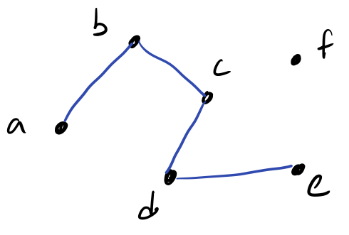
We call the elements vertices or nodes of the graph. For each related pair of elements, we draw a line called an edge in our graph.
While our graph is simply a graphical representation of our binary relation, we traditionally represent a graph using a slightly different structure. We say that the graph above is . That is, graph is a pair of sets:
- is the set of vertices in the graph. Here .
- is the set of edges in the graph. Here .
A graph is a pair of sets:
- , the set of vertices or nodes of the graph.
- , the set of edges of the graph.
Because we talk about edges so much, we frequently write the edge as , i.e., we drop the pair notation and simply write the vertices together.
Variations
The fundamental definition of a graph is a simple riff on a binary relation. We call such graphs simple graphs. However, there exists several variations of graphs that accommodate the wide range of scenarios we might find ourselves in.
Directed versus Undirected Graphs
Because individual relationships are encoded as pairs, the order matters between vertices. For example, the pair is distinct from the pair . In a directed graph or digraph, we acknowledge this fact and distinguish between the two orderings.
For example, consider the following graph with
- .
- .
If we consider this graph directed, we would draw it as follows:
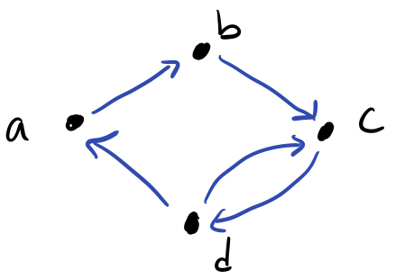
Note that the edges are directed edges where the direction is indicated by an arrowhead. If we were to have two vertices be mutually related, i.e., related in both directions, we need two edges, one for each direction. For example, and are mutually related, so we connect them with two edges and .
In contrast, we can consider to be undirected where we do not distinguish between the two orderings. Effectively, this means relations are unordered sets rather ordered pairs, but in terms of notation, we still keep . If we consider to be undirected, we would draw it as follows:
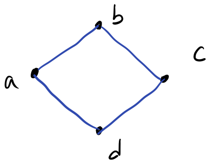
Here, the edges are undirected, i.e., without arrowheads. Effectively, we treat a single edge pair as relating symmetrically by default, so the edge implies that is related to and is related to . Because of this, we should not include symmetric pairs in our set of edges. So we should define for the above graph as where we removed the symmetric pair .
When should we employ a directed versus undirected graph? We should employ a directed graph where it is not assumed that our relation is symmetric for every pair of related vertices. For example, a "loves"-style relationship where loves is not inherently symmetric since might not love . A directed graph allows us to represent this distinction. A directed graph can always represent an undirected graph by explicitly including symmetric edges. Therefore, we can think of an undirected graph as a shortcut where we can avoid writing extras edges if we know that our relation is already symmetric. For example, a "friends"-style relationship is symmetric because being friends with implies that is also 's friend.
Self-loops
Like symmetry, we may or may not take reflexivity of a relation for granted. If we do not take this for granted, i.e., some elements are reflexively related but not all of them are, then we might consider introducing self-loops into a graph. For example, consider the following digraph with .
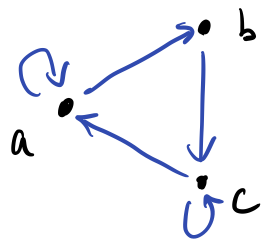
In this graph, and are related to themselves, but not .
Weights and Multi-graphs
Edges encode relations between objects in a graph. We can also carry additional information on these edges dependent on context. Most commonly, we will add numeric weights to our edges, e.g., to capture the distance between cities, or the cost of moving from one state to another. Both directed and undirected graphs can be weighted. As an example, consider the digraph with .
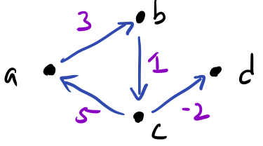
We annotate the edges with a weight whose interpretation depends on context. For example, we can see that the edge has weight 5. We represent the weights on our graph formally with an additional structure, a function , that maps edges to weight value. The codomain of can be whatever type is appropriate for the problem at hand; here we choose integers (). For the above graph, we would define our weight function as:
We can also extend our graphs further by extending to be a multiset, a set that tracks duplicate elements. This allows us to express the idea of multiple edges, e.g., with different weights according to .
Simple Graphs Revisited
Now that we have introduced various variations on a graph, we can finally come back and formally define a simple graph as a graph with no such variations.
In closing, we have many variations of a graph that we might consider. In successive readings, we'll consider various analyses over graphs and problems we might try to solve. The beauty of graph theory is that because graphs are so general, by defining and solving problems in terms of graphs, we can apply our solutions to a whole host of problems!
Consider the following formal definition of an abstract graph with:
- Draw .
- Instantiate this abstract graph to a real-life scenario. Describe what objects the vertices represent and what relationship between objects is captured by .
- Observe that , , and are mutually connected in this graph, i.e., each vertex has an edge to the other. Interpret the fact that they are mutually connected in your real-life scenario. Is the fact that they are mutually connected have special meaning in the scenario you envisioned?
Trees
Frequently the relations we draw between objects are hierarchical in nature. That is the objects have a parent-to-child relationship, for example:
- A literal parent and their children.
- A manager and the employees that report to them.
- A folder and the files it contains.
We represent these relationships with a specialized kind of graph called a tree.
Here is an artificial example of a tree with five nodes, --:
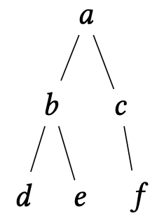
We distinguish a vertex of the tree as its root. Here we'll consider to be the root of the tree although any of the vertices could be considered the root. By convention, we draw trees "upside down" with the root at the top and the tree growing downwards.
The root allows us to categorize the vertices of the tree by their distance from the root. We call a collection of vertices that are the same distance away from the root a level.
Let be a tree with a distinguished root . Define the th level of a tree, denoted to be the set of vertices that are nodes away from :
In our above example:
And the tree has height 2. Note that for any is since there are no nodes greater than 2 away from .
With levels defined, we can now formally define the parent-child relationship that characterizes trees:
The parent of a vertex at level of a tree is the node for which the edge is in the tree and is at level .
The children of a vertex at level of a tree are the nodes for which each , the edge is in the tree and is at level .
Because a tree contains no cycles and the tree is rooted at a particular node, it follows that every vertex of a tree except the root has exactly one parent. (This is a worthwhile claim to prove yourself for practice!)
We can categorize trees by the maximal number of children any single node possesses. We call this value the tree's fan-out:
The fan-out of a tree is the maximum number of children that any one vertex of the tree possesses. We call such a tree a -ary tree or a -tree for short. Notably a -tree is a sequence or a list, and a -tree is a binary tree.
Finally, we've restricted ourselves to connected trees, trees in which all its vertices are mutually reachable. If a graph is unconnected, but all of its connected components themselves are trees, then we call the graph a forest:
Call an undirected graph connected if there exists a path between every pair of vertices in . A connected component of is a sub-graph of that is, itself, connected.
Directed Acyclic Graphs
We generally assume that a tree is an undirected graph. However, we can apply the same concepts to a directed graph. This results in a kind of graph called a directed acyclic graph (DAG):
A directed acyclic graph (DAG) is a directed graph that contains no cycles.
DAGs are outside the scope of our discussion of the basics of graphs, but be aware that DAGs have their own interesting properties and operations distinct from trees!
Depth-First Tree Traversals
Previously, we learned about depth-first and breadth-first traversals for graphs. Breadth-first traversals remain the same: we traverse the vertices of the tree by order of increasing level. However, the specialized nature of trees lets us specify different sorts of depth-first traversals, in particular, for binary trees where every node possesses at most two children. In such a tree, we call one child the left child and the other child the right child.
With this in mind, we can describe a recursive algorithm for depth-first search specialized to binary trees.
In the Python-like code below, we use dot-notation to denote children, e.g., v.l for v's left child and
v.r for v's right child.
def preDFS(u):
visit(u)
preDFS(u.l)
preDFS(u.r)
Note that we visit the node u before visiting its children.
Performing this traversal on our example tree from the beginning of this section yields the sequence:
This kind of depth-first traversal of the tree is called a pre-order traversal of the tree. We first visit the current element and then visit its children.
In contrast, a post-order traversal of the tree visits the children first and then the current node last.
def postDFS(u):
postDFS(u.l)
postDFS(u.r)
visit(u)
A post-order traversal of the graph yields the following sequence:
Finally, we can intermix visiting children and visiting the current node with an in-order traversal:
def inDFS(u):
inDFS(u.l)
inDFS(u.r)
visit(u)
An in-order traversal yields the following sequence:
Spanning Trees
Consider a graph . A spanning tree of is a subgraph (with and ) that is a tree (i.e., contains no cycles) that covers every vertex of . That is . For example, consider the following graph:

A spanning tree for the graph is given below:
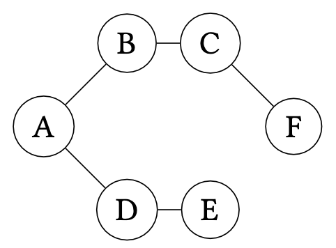
Spanning trees are not necessarily unique. For example, here is a different spanning tree for the graph.
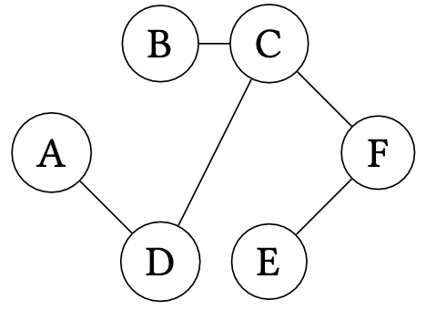
Constructing a spanning tree for a graph is useful in many situations, for example:
-
Consider an electrical network for a neighborhood where nodes represents houses and edges represent potential electrical connections between houses. A spanning tree in this context represents a minimal set of electrical connections used to connect all of the houses to the power grid.
-
Consider a collection of networked computers where nodes represent computers and edges represent physical connections between computers. A spanning tree in this context represents a minimal collection of connections that allow one machine to communicate with another without the fear of encountering a routing loop where a message is relayed between a collection of machines in perpetuity.
Say that we have a graph . What is the number of edges of any spanning tree of ? Prove your claim.
Constructing Spanning Trees
To construct a spanning tree, we can employ either traversal algorithm we have discussed for graphs---breadth-first or depth-first search---to reach every vertex from some arbitrary starting vertex. When processing a vertex , we add to our working set each vertex connected to (i.e., ) that we haven't already seen. If we are performing breadth-first search, we treat the working set like a queue, processing the oldest entry in the working set first. If we are performing depth-first search, we treat the working set like a stack, processing the newest entry in the working set first.
For example, the first spanning tree we discussed previously is the result of a breadth-first traversal, namely:
The second spanning tree is the result of a depth-first traversal, namely:
Prove that for a graph , we must process exactly vertices when constructing the spanning tree, irrespective of the traversal used to generate the tree.
Minimum Spanning Trees
Now, let's consider extending our graph edges with weights. Each weight represents a "cost" associated with that edge, for example:
- Distances if the edges represent connections between physical places.
- Monetary amounts if the edges represent a transformation from one kind of object to another.
Let:
Be the sum of the weights of all the edges in .
With a weighted graph, we can refine our notion of spanning tree. We can now consider minimum spanning trees (MST), a spanning tree with minimal cost. Formally defined:
Let be a weighted graph. Then a minimum spanning tree, , be a spanning tree of such that for any other spanning tree of , it is the case that .
In our above examples, we could attach an appropriate cost to each graph:
- Weights in the electrical network represent physical distance between houses.
- Weights in the computer network represent the average time it takes for two computers to communicate with each other.
Minimum spanning trees for each of these examples then also minimize the values of these trees---physical distances and average communication time, respectively---in addition to "spanning" the graphs.
Algorithms for Minimum Spanning Trees
Note that our current methods for constructing minimum spanning trees are agnostic to the weights of the edges. Even though such algorithms choose a minimal number of edges, this doesn't guarantee that the weight of the resulting spanning tree is minimized. For example, consider the following weighted graph:
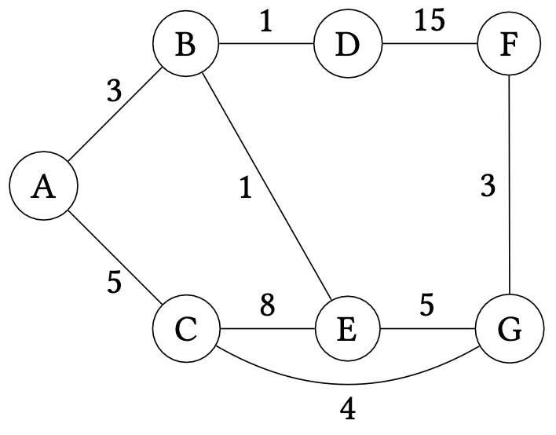
A BFS traversal of the graph starting at produces the following weighted graph:
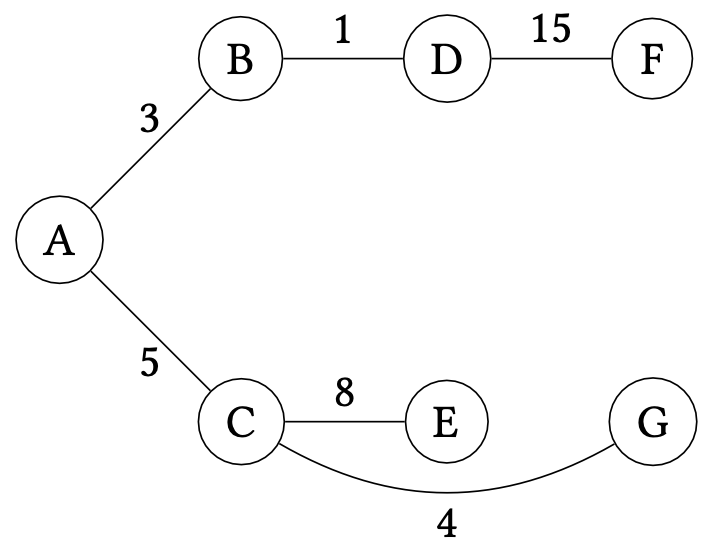
Its weight is but it is not minimal. The following minimum spanning tree is minimal for our graph:
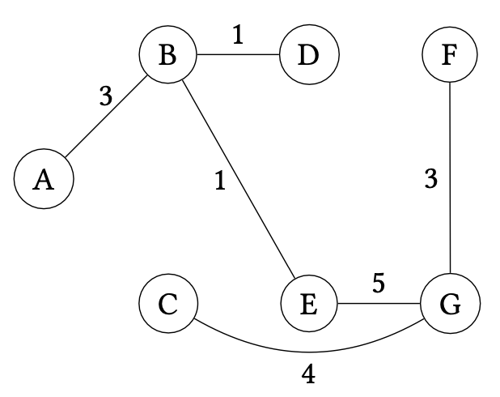
The weight of this MST is . We clearly need another method of calculating a MST that takes into account (a) the vertices we have yet to explore and (b) the weights of the chosen edges.
There are several algorithms that we could consider. Here, we will consider Prim's Algorithm which we will present as a modification of breadth-first search for this setting. To gain some intuition about how to proceed, let's see how naive breadth-first search failed to produce the MST and then modify the algorithm to obtain the desired result.
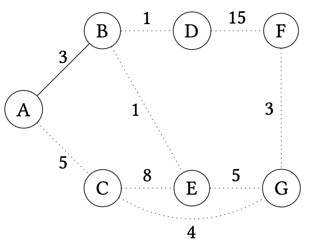
Initially, we begin our BFS at and then add . We can think of and and the edge as part of our MST. Our goal is to figure out which edge to add to the MST next. Note that we must pick an edge that does not create a loop in the MST, thus we must only consider edges that connect the MST to a vertex not already in the MST.
At this point, BFS would consider next. However, we see that the edge is not in the MST. This is because it turns out it is more profitable to instead include vertex by way of edge instead. How can we avoid making this choice? Note that we have three edges to choose from at this point---, , and ---and the last two edges have a lower weight (1) than (5). It seems like we should consider one of these edges first since its weight is smaller.
If we choose , we obtain the following extended MST that includes , , and :
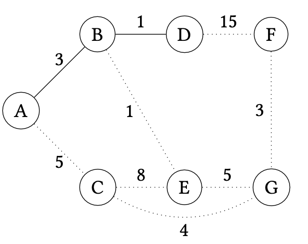
Now we can consider the following edges:
- ---cost 5,
- ---cost 1, and
- ---cost 15.
By considering the lowest weight edge next, we then add to the MST:
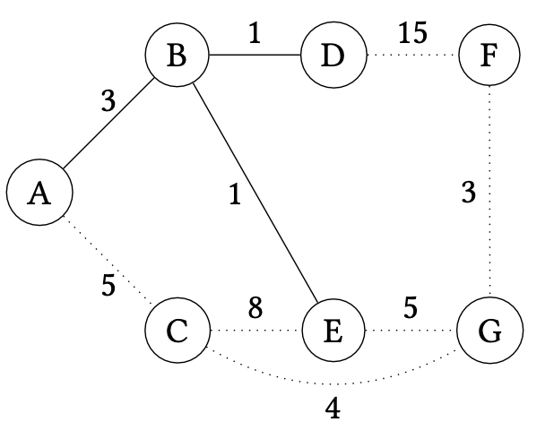
We continue in this manner, considering the lowest weight edge that expands the MST by one vertex. We would next add (cost 5):
Next we would add (cost 3):

And then finally (cost 4):
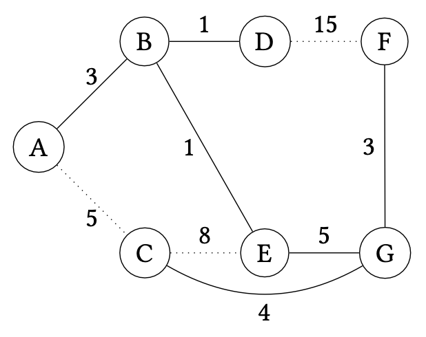
At this point, we know we are done because there are no other vertices left to add to the graph. Alternatively, we know that any tree of the graph contains edges, so once we add this number of edges, we can safely stop.
To summarize, Prim's algorithm proceeds as follows on a graph :
- Choose a start vertex as an initial consisting of just .
- For times:
- Choose the minimum weight edge that connects with a vertex not in and add to .
- Afterwards is a MST for .
Prim's algorithm is an example of a greedy algorithm. A greedy algorithm is one that, for each iteration, makes its next choice by choosing the minimum or maximum option available. Here, that choice is the minimum weight edge that expands the current MST. However, how do we know this choice is correct?
To prove that our greedy choice is correct, we must first introduce the notion of a cut.
be a graph. A cut of the graph is a partition of its vertices with . A non-trivial cut is one where and .
Since in the above definition uniquely identifies the cut, we will refer to the cut by for notational convenience.
Cuts allow us to talk about the state of Prim's algorithm precisely. At any iteration of the algorithm, we may view the MST as inducing a cut of . The algorithm then considers the minimum weight edge that flows between vertices of the cut, i.e., vertices of the form with and . We must show that this edge belongs to some MST of . In particular, we'll show that it can belong to the eventual MST of the graph grown from the current MST , that is, .
Let be a graph and with and be a minimum spanning tree for . Consider the set of edges that connect a vertex in to a vertex not in , i.e.,
And let be an edge with minimum weight of . belongs to some MST of where .
We prove this fact by contradiction. Let the cut induced by be and the minimum weight edge under consideration be with and . Suppose for the sake of contradiction that does not belong to any MST of of which is a subtree. Now consider an arbitrary MST of , call it . Note that because must be connected in , if does not connect in , there must exist some other path between and in . Let the edge in this path that flows across the cut induced by be .
Now, consider the alternative tree of where we replace with , call it . is a spanning tree because any vertex that was reachable through is now reachable through . Furthermore, note that and are both edges across the cut induced by , but is assumed to have minimum weight among such edges. Therefore, . But only differs from in this edge, so we can conclude that which implies that is a MST for , a contradiction since belongs to it.
This argument is an example of an exchange argument for greedy algorithms. We justify the greedy choice by arguing that any "sub-optimal" choice could be substituted by the greedy choice to obtain a solution at least as good as the original one. Our argument accounts for the fact that since edge weights are not necessarily distinct that and could be both valid minimal choices. The resulting MSTs are, therefore, potentially different, but both have the same (minimal) weight. Note that if the edge weights of are distinct, then is the minimum weight edge of the cut and thus in the proof above is not a MST; . This implies that in the case where edge weights are distinct, the minimum weight edge must belong to any MST of , not just one of them.
We can use this lemma to prove the correctness of Prim's algorithm easily. The algorithm maintains a MST for the vertices it contains so far, extending the MST by one edge (and thus, one vertex) on each iteration. We therefore prove the correctness of Prim's algorithm by induction of the number of iterations of its loop, claiming that is a MST for the vertices it contains so far.
On the -th iteration of Prim's on a graph , with and is a MST for .*
By induction on .
- . Initially contains a single vertex and is trivially a MST for that one vertex.
- . Our induction hypothesis says that on iteration , is a MST for In the -st iteration, we extend with an edge across the cut induced by . By the Cut Property, we know that can belong some MST of with . Therefore, we know that extended with is a MST for its vertices.
Shortest Paths
A related problem to minimum spanning trees is shortest paths. That is, what is the shortest path between two vertices in a graph, say and . A naive greedy approach seems compelling given our exploration of minimum spanning trees. For example, consider the following graph:

Suppose we want to find the shortest path from to . We could try to start from , and choose the edge with the least weight to traverse next, eventually arriving at . However, this yields the path which has total weight . The optimal path instead is the top path of the graph: with total weight . Note that even if we were to divine that it is better to go to from , we encounter the same problem at : a greedy choice will send us down to (at cost 4) when traversing would have been the correct move!
More generally, this approach has the problem where it may send us down a sub-optimal path:

For example, we may reach vertex in the graph above only to find that we are either in a sub-optimal path or worse yet, that the target node of our path is unreachable from ! In this case, we would be forced to backtrack to explore other possible paths. In general, this occurs when a greedy choice fails: we have to "undo" our optimal choice and try other possibilities instead. We may end up exploring all such possibilities exhaustively which is problematic if there are many possibilities to consider! This realization might motivate us to dismiss any sort of greedy algorithm for this problem. However, if we are smart in tracking enough information so that we never need to backtrack, we can retain a greedy approach!
The algorithm we'll consider is Dijkstra's algorithm which we can think of as a refinement of Prim's algorithm for minimal path searching. Note that Prim's proceeded by growing a minimal spanning tree from a single node. Dijkstra's proceeds similarly, growing an optimal path from the start vertex under consideration. However, unlike Prim's which only tracks the growing MST of interest, Dijkstra's does not just record the current optimal path to the desired end vertex but all such optimal paths to every vertex in the graph from the start vertex. This additional information is sufficient for us to make greedy choices that always lead to the discovery of the optimal path.
Suppose we are interested in finding the shortest path from to in our example graph for this section. Dijkstra's ultimately tracks the shortest path from through the nodes it has visited so far to all nodes in the graph, refining these paths as it greedily consumes vertices in the graph. Initially, we know that the shortest path from to itself is simply staying at for a cost of 0. For every other node, we don't know a path---indeed, such a path may not exist!---so we assign the value to these paths.
| Destination | Path | Cost |
|---|---|---|
| 0 | ||
| ? | ||
| ? | ||
| ? | ||
| ? | ||
| ? |
We begin by considering and its edges. We look at each edge incident to and update our table based on these edges. When looking at these edges, we ask the question:
Can taking this edge to a vertex give us a new optimal path from to ?
There are two such edges to consider: and . Since we don't know of any paths from to either of these edge's endpoints---represented by the fact that their entries in the table are ---we can update our shortest paths entries for these vertices with these edges.
| Destination | Path | Cost |
|---|---|---|
| 0 | ||
| ? | ||
| ? | ||
| ? |
After processing these edges, we are done with . An invariant of the algorithm is that we never need to reconsider these edges again. The important information about them has been recorded in the table, allowing us to avoid backtracking if an optimal path needs to be updated!
We now repeat the process by choosing a vertex that we have not yet visited and updating the table based on its incident edges that we have not yet considered. Which vertex do we consider next? This is where we'll make our greedy choice: we'll consider the vertex with minimum cost according to the table that we have not yet visited.
In our running example, this is node with current path cost . We now update our table with 's additional edge: . Note that this edge gives us a path from to ; what is its length? It is the length of the optimal path from to plus the cost of traversing ! This quantity is corresponding to the path .
| Destination | Path | Cost |
|---|---|---|
| 0 | ||
| ? | ||
| ? |
Next we consider node since its current shortest path cost is lower than 's cost . We thus consider edges and next. Edge updates the path to as expected. However, edge introduces a choice between two paths:
- The current shortest path in the table: with cost .
- The candidate shortest path through . The cost of this path is the minimal cost of reaching from plus the cost of traversing : .
We note that and thus the candidate path is shorter than our current best known path. We therefore update the table to reflect the fact, recording a new best shortest path for !
| Destination | Path | Cost |
|---|---|---|
| 0 | ||
| ? |
We next consider with current shortest path length . It has one unvisited incident edge, , allowing us to final reach our intended endpoint, , with cost .
| Destination | Path | Cost |
|---|---|---|
| 0 | ||
Now we will consider vertex with edge . We employ the same logic here as with . We need to compare the:
- The current shortest path recorded in the table: of length .
- The candidate shortest path through : of length .
The candidate shortest path is shorter, so we update the table with the new path for .
| Destination | Path | Cost |
|---|---|---|
| 0 | ||
Since has no unvisited edges to process, we don't need to do anything to process it, completing the search procedure. We can now inspect the table to find the shortest path from to , which is of length as desired!
With this example, we see that the salient parts of Dijkstra's algorithm are:
- Repeatedly choosing vertices to process based on their current, best-known shortest paths from the start vertex.
- Comparing our current known shortest paths with paths through the current vertex under consideration and choosing the better of the two.
Let be an undirected graph. Suppose that we are interested in finding all shortest paths starting from vertex . Let be the cost of the shortest known path from to . Dijkstra's algorithm proceeds as follows:
-
Initially, let and for all that are not .
-
Repeatedly choose vertex that has minimal among all vertices that have not yet been processed in .
-
For each edge that has not yet been processed by the algorithm, update the shortest known path to as follows:
-
After Dijkstra's algorithm completes, records the shortest path from to in for all .
Note that our choice of initially assigning unknown paths the value makes the description of our algorithm concise. We don't need to define a special case for when we first find a path to a target vertex. We will always choose the found path because is effectively larger than the length of any known path length we would consider during execution of the algorithm.
Case Study: Finite Automata
Graphs are a foundational data structure in many areas of computer science. To close this portion of the course, we'll take a look at a particular application of graphs towards an older theme: program correctness. We'll use graphs to develop a simple model from the theory of computation, the finite automata. While simple, the model captures a wide variety of computations that we might consider in a computer program. This model will put together everything we have learned so far towards the task of using mathematics productively in programming and tease at what future courses in the foundations of computer science will cover!
Strings
A finite automata is an abstract machine that consumes strings of characters as input and produces a boolean, a yes or no answer, as output. Before we explore the finite automata itself, we must first formalize the notion of a string.
A string drawn from an alphabet is a sequence of zero or more characters drawn from , i.e., where .
Note that when we write , this implicitly binds to the individual characters of . Because there are variables bound in this manner, we know that the string has length .
Unlike strings in a programming language, we explicitly define the set of possible characters that make up our strings.
We call this set the alphabet under consideration and denote it with (: \Sigma).
Here are some examples of alphabets and possible strings drawn from those alphabets:
Example 1: let be the set of the 26 lowercase English letters and the space characters. Then is a string drawn from .
Example 2: let . Then is a string drawn from . Strings drawn form are binary strings, i.e., sequences of 1s and 0s.
Example 3: note that the definition of string is a sequence of zero or more characters.
Therefore, the empty string, written (: \epsilon), is a string drawn from any alphabet, including or as defined above.
In a conventional programming language, we would write the empty string as "".
However, since we traditionally do not use quotes to delineate strings, we must rely on a special symbol to denote the empty string.
Overview of Finite Automata
Now let's look at our first finite automata to get a feel for this sort of abstract machine.
┌─────────┬────────┐
│ a b
↓ │ │
-→ (q0) -a→ (q1) -b→ (q2) -a→ [q3]──┐
│ ↑ ↑ a,b
└b-┘ └───┘
This simple finite automata recognizes strings drawn from the alphabet . We can think of a finite automata as a labeled, directed graph where the nodes are states and the edges are transitions between states.
Informally, a finite automata operates as follows:
- The machine begins initially in its start state, denoted in the graph above as the state with an incoming edge but no out-going state.
- Next it reads in an input string character-by-character. As it reads each character, the machine transitions from its current state to a new state by moving along the edge annotated with the character that was read in.
- Once the input string is completely consumed, we check to see what state the machine ended on. If the state is an accepting state, then the machine accepts the input string, i.e., returns "true." Otherwise, the machine rejects the input string, i.e., returns "false." In our example, we denote a final state in brackets rather than parentheses, so above is an accepting state whereas all the other states are normal.
As an example, here is how the machine operates over the string :
- The machine initially starts in .
- The machine reads an and transitions from to .
- The machine reads a and transitions from to .
- The machine reads an and transitions from to .
- The machine reads a and transitions from back to .
- The machine reads an and transitions from back to .
So when reading the string , the machine ends on state . is not an accepting state, so the automata rejects this string. In contrast, the machine would accept the string .
Trace the execution of the finite automata above on the input string to show that the automata accepts this string.
With some effort, we can also verify that the strings:
- ,
- , and
- ,
Are accepted by this automata, whereas the strings
- ,
- , and
- The empty string
Are not accepted by this automata.
What are the set of strings that the automata accepts? It turns out that the automata accepts any string that contains ! We can observe this by inspecting the states and transitions of the automata and ask the question: how do we reach the acceptance state ?
We can only reach this state by moving from through and and finally to . According to the transitions, we can only do so by reading in the characters , , and in order. Also note that:
- If we have not seen yet, then any character not involved in this pattern returns us to , i.e., our search for this substring resets.
- Once we have seen and land in , anything that we read keeps us in this acceptance state. In other words, once we reach , we will always accept the string!
Finite Automata Formally Defined
Now that we have a high-level idea of how finite automata operate, let's look at their formal description.
A (deterministic) finite automata is a 5-tuple where:
- is the set of states.
- is the alphabet.
- is the initial state.
- is the state-transition function.
- is the set of accepting states.
Note that even though the automata is a directed graph, we do not model it directly as such! Instead, we model it as a collection of five components---the set of states, alphabet, initial state, transition function, and accepting states. The graph-like nature of an automata is inferred by this choice of representation:
- States are the nodes.
- The transition function contains the (directed) edges.
In particular, note that the transition function, when viewed as a relation, can be thought of a set of pairs, just like the edges of a graph!
Our example automata from above can be formally represented as follows:
- .
- .
- is the initial state.
- .
The transition function is defined by the following transition pairs expressed in a state transition table:
For example, in state , if the automata reads an , then the automata transitions to state .
Example: define an automata as follows:
- .
- .
- .
Observe that there are two states and two characters of our alphabet. Therefore, we expect there to be state-transition pairs in . We'll, therefore, define the transition function by cases as follows:
Acceptance
In order to formally verify that an automata is correct, we also need to formalize the notion of acceptance. Acceptance has a somewhat complicated definition; let's take a look:
Consider a finite automata and be a string drawn from . We say that automata accepts string if there exists a sequence of states where:
- and
- .
Intuitively, this definition says that an automata accepts a string if the string drives the automata from its starting state to a final state.
Take this intuition about what the formal definition of automata acceptance is saying and try to map the intuition on the symbols. In particular, how does the formal definition capture the idea that the input string "drives the automata from its starting state to a final state?"
According to the formal definition of acceptance, does an automata accept a string if during execution of that string, the automata enters a final state, but is not in a final state at the execution?
Consider the formally defined automata in the example above that reads binary strings. Apply the definition of acceptance to show that accepts the string .
(Hint: what does the formal definition of acceptance say we must construct and what must we show about this construction to show that accepts the string?)
Frequentist Probability
Uncertainty is a fundamental part of life. For example, imagine interviewing for an internship position. We ask ourselves, instinctually, what are the chances that I will get the job? Perhaps you feel like your chances are higher that day because you slept and ate well that morning. But maybe you know the company uses a programming language you aren't entirely comfortable with. You weigh these factors and arrive at an intuition of the likelihood that the interview is successful. However, you know that even though you feel like your chances are high, you may still not get the job.
How do we model this uncertainty? Up until this point, everything that we have done has been deterministic in nature, i.e., there has only been a singular, definite outcome of an event, whether that it is evaluating a program or simplifying an arithmetic expression. However, uncertainty introduces the need to consider multiple possible outcomes arising from a single event. Can we precisely define what it means for one of these events to be more likely to occur?
Probability theory models uncertainty by capturing our intuition that some events are more likely to occur than others. In this chapter, we'll study probability theory as an application of counting. If we can count of the number of occurrences of an event, we can assert a probability value that describes the likelihood of that event. As computer scientists, probability theory is particularly important for two reasons:
- Because uncertainty is a natural phenomenon, we need ways of capturing and reasoning about uncertainty to accurately model real-world objects.
- Uncertainty holds special potential for algorithmic design. Can we trade certainty like a resource to make our algorithms more efficient?
You likely have seen probability computations in your pre-collegiate math education. Such a probability value of a particular event occurring is computed using the following formula:
In this reading, we'll introduce the fundamental definitions of this frequentist perspective on probability theory as well as some key concepts: expectation and conditional probabilities. We'll only scratch the surface of probability theory in this course. I highly recommend pursuing additional course work in this area, e.g., STA 209, because probability theory is becoming increasingly important for all computer scientists to understand in a world where statistical and machine learning-based techniques are gaining prevalence.
The Foundations of Frequentist Probability Theory
The probability of an event occurring can only be described in terms of other events occurring. We thus define a sample space that captures all the possible events under consideration.
A sample space, , is the set of all possible outcomes of an experiment. Such a sample space is considered discrete if has finite cardinality. Otherwise, the sample space is considered continuous.
In this class, we focus exclusively on discrete probability. It is in the title of the class, after all.
The sample space of an experiment where we flip a pair of coins is denoted by:
The sample space of an experiment where we roll three six-sided dice is denoted by:
Note that the sample space captures precisely the set of possible outcomes. Other outcomes, by definition, are not under consideration, e.g., the coins landing on their sides, unless they are included in .
Formally, an event, , describes the outcome of a particular experiment.
The event describing when we obtain at least one head in two coin flips is denoted by:
The event describing when the sum of the three die we roll is exactly 4 is denoted by:
With an event formally defined, we can now define its likelihood, i.e., probability through a probability mass function. A probability mass function is a function that obeys the following properties:
-
: the probability function produces non-negative probabilities.
-
: the probability that any event happens in the sample space is 1.
-
If are pairwise disjoint events, then:
The probability of the union of a collection of disjoint events is the sum of their individual probabilities, i.e., the sum rule for probability theory.
We take the event as the domain of our probability function rather than a single outcome because we can always represent outcomes as singleton sets of events.
If our coins are fair, then we expect that the probability of obtaining a heads or tails with a single coin to be equal.
Now, suppose that we wish to know the probability of obtaining at least one head in two flips. This is denoted by the event:
And by the sum rule, the probability of this event is:
Consider the following gambling game:
Roll three six-side dice in sequence. Say that a die wins if it is a five or a six.
- Write down the sample space of possible outcomes.
- Assuming that the dice are all fair, what is the probability that you will win one occurrence of the gambling game?
Random Variables and Expectation
In this reading, we see how we can use probabilities to compute the expected value arising from an experiment. This simple statistic is the entry point into the wider world of statistical analysis where we look at common patterns of probability distributions and their properties. We won't have time in this course to explore statistics in detail, but we will talk about some basics here, so that you are aware of them for future study.
Random Variables and Expectation
Recall how our fundamental probability definitions are set up:
- The outcome of an experiment is drawn from the sample space .
- An event describes a particular collection of outcomes of interest.
- For each event, we assign a probability to that event through the probability mass function which obeys the three axioms of probability of theory.
With our probability mass function, we can state the likelihood of events occurring. However, we can also use our probability mass function in conjunction with some other machinery to state the weighted average of the possible outcomes of an experiment. To do this, we first need to define a way to interpret the outcome of an experiment. We do by way of a function (confusingly) called a random variable.
A random variable is a function for some output type . A random variable represents some interpretation of the outcomes of some random process.
Consider our example of rolling three random dice, denoted by the set of outcomes:
The sum of these dice forms a random variable, :
The codomain of this random variable is the set of natural numbers in the range .
Note that the codomain of a random variable need not be a number. For example, if the sample space is the set of valid rock-paper-scissor plays:
Where .
Then the random variable :
Has type .
Let \Omega consist of the outcomes of flipping three coins. Define a random variable that gives the parity of the coins, i.e., the number of coins that turn up heads.
While the codomain of a random variable can be of any type, we most commonly work with real-valued random variables, i.e., . Let be a random variable over a set of outcomes of type . Also suppose the existence of a probability function over these outcomes. Then the expected value of , written , is defined to be the weighted average of the outcomes and their respective probabilities:
Example: consider an experiment where we have a weighed six-sided dice with outcomes . The probabilities of each outcome are:
Let be a random variable that represents the value of a particular dice roll. Then the expectation of is the expected value of the weighted die:
In contrast, if the probabilities of all the sides of the die were equally likely, then the expected value of the die would be:
We can think of the expectation of a random variable to be the weighted average of that variable where the weights are the probabilities of the various outcomes.
One consequence of the definition of expectation is that we can treat as an operation on a (random) variable. With this perspective, we can see that several algebraic properties hold of expectations. The most important of these is the linearity of expectation:
Let and be real-valued random variables. Then the following identities hold:
For some constant value .
The linearity of expectation says that addition and multiplication (of a constant) distribute in a natural sense through expectation. This fact allows us to manipulate and combine random variables as if they were plain old variables.
let be the set of all pairs of outcomes of two six-sided dice. Let be a random variable defined as follows:
And let be a random variable that is defined to be the sum of the two dice values.
By the linearity of expectations, is the sum of averages of the two random variables. Also by the linearity of expectations , the average of scaled by a factor of two.
Probability Distributions
Many experiments share similar distributions of probabilities among its outcomes. The study of probability distributions and their properties is an important part of the mathematical subfield of statistics. Here, we explore the basic concepts of probability distributions in light of our fundamental definitions of probability theory.
Let be a random variable over a sample space and interpretation . A probability distribution is a function that describes the probabilities of the various interpretations of the elements of the sample space.
More informally, a probability distribution is a description of how a probability function distributes probabilities among the possible outcomes of an experiment. Many kinds of experiments fall into a handful of well known and understood probability distributions.
Bernoulli Distributions
Let be a random variable with codomain . Then a probability distribution over forms a Bernoulli distribution with probability where:
We call a parameter of the probability distribution. The Bernoulli distribution describe the outcome of a single experiment with a binary outcome---success or failure. The use of and to indicate boolean values is common in many areas of mathematics.
Example: here are some applications of the Bernoulli distribution.
-
The probability of a single fair coin flip being heads forms a Bernoulli distribution with success .
-
Suppose you play a game where you roll two six-sided dice and you win if the sum of the die is greater than 8. Then the probability of winning the game forms a Bernoulli distribution with success . (Note that there are 10 ways out of possibilities to get a higher than an 8 with two six-sided dice.)
Note how the Bernoulli distribution allows us to concisely describe the distribution of a set of probabilities. Different distributions exist in statistics that capture a wide variety of possible probabilities and situations.
Binominal Distributions
We can describe a particular probability distribution using a variety of statistics which summarize salient characteristics of that distribution. These include statistics you ought to be familiar with already, e.g.,
- The average (the expected value of a random value),
- Median (the value that splits the probability distribution in half), and
- Mode (the most frequent value).
Let be a random variable that records the number of successes after running independent experiments. Then a probability distribution over forms a Binomial distribution with the probability of generating successes is given by:
Where is the probability of a single experiment generating a success. As shorthand, we write for the binomial distribution consisting of independent experiments with probability of success for an individual experiment.
The probability function is derived combinatorially as follows:
-
The probability of getting successes is .
-
The remaining experiments must be failures, and there are of them, so the probability of this is .
-
Finally, any -subset of the experiments may succeed, so there are such combinations where we have successes and failures.
This final point is why we alternatively call the "choose" operator the binomial coefficient.
The binomial distribution is a generalization of the Bernoulli distribution where we conduct such experiments rather than a single one. As such, it is potentially relevant whenever we are discussing the outcomes of running repeated trials with a binary result.
Suppose that we flip a biased coin with probability heads and tails times with success defined as obtaining heads. This forms a binomial distribution .
As a consequence of identifying a probability distribution is binomial, we can apply known formulae to quickly derive statistics for that distribution.
Let be a binomial distribution. Then:
-
The mean or expected value of the distribution is .
-
The median of the distribution is either or . is the unary flooring function which rounds its argument down. In contrast, is the unary ceiling function which rounds its argument up.
-
The mode of the distribution is either or .
Let's expand on the simple gambling game from the previous readings' exercise.
Suppose that to play the game, you need to put in $1. Roll three six-sided dice in sequence. Say that a die wins if it is a five or a six.
- If the first die wins you get $1.
- If the first and second die win you get $2.
- If the first, second, and third die win you get $4.
- In all other cases, you get nothing.
a. Write down the sample space of possible outcomes and a set of four disjoint events that describe the outcomes above. b. Write down the definition of a random variable that describes the amount of money you may win from a single play of the game. c. Calculate the expected value of the random variable you defined above. Based on the computed value of , is it worthwhile to play this game?
Conditional Probability
So far, we've considered probability computations in the absence of additional information. However, how does knowledge of one event influence the probability of another event occurring? By modeling this phenomena with conditional probabilities, we can begin to model the notion of learning where the discovery of new information influences our current knowledge. This is the basis of modern machine learning techniques that are so prevalent in modern-day computing.
The conditional probability of an event given that an event has occurred, written is:
We can pronounce as the probability of event occurring given that has occurred. This is a sort of implication, but for probabilities.
For example, consider the random value representing the sum of rolling two six-sided dice. Here are all the possible outcomes of :
- , 1 possibility: .
- , 2 possibilities: , .
- , 3 possibilities: , , .
- , 4 possibilities: , , , .
- , 5 possibilities: , , , , .
- , 6 possibilities: , , , , , .
- , 5 possibilities: , , , , .
- , 4 possibilities: , , , .
- , 3 possibilities: , , .
- , 2 possibilities: , .
- , 1 possibility: .
The probability of is . However, what if we know that the first die is a ? Then, we only consider the dice rolls where the first die is a :
Of these six possibilities, only one results in a sum of , so we have that . Alternatively, we can calculate this directly using the definition of conditional probability:
Independence
In the example above, knowing that the first dice is a 3 influences the probability that their sum is 8. We say that the two events---"the first dice is a 3" and "the sum of the two dice is 8"---are dependent on each other. However, we have an intuition that some events are independent of each other. For example, consider the two events:
- = "The first dice is a two."
- = "The second dice is even."
since there are six possibilities for the second dice when the first is fixed to two. since there are 3 possibilities for the second dice to be even and then 6 possibilities for the first dice once the second has been fixed. However, since we believe that is independent of that , i.e., knowledge of does not change the probability of .
We formalize the notion of independence in probability theory as follows:
That is, independence is the condition necessary for us to apply the combinatorial product rule to probabilities. If two events are independent, then we can reason about their probabilities in sequence.
Claim: If two events are independent, then .
Proof. By the definition of conditional probability and independence:
A similar argument holds for as well.
Bayes' Theorem
Is the probability related to in any way? We can use the definition of conditional probability to explore this idea:
But set intersection is symmetric, so we have that:
But now we can remove entirely from discussion and reason exclusively about conditional probabilities. This insight leads us to Bayes' Theorem:
Bayes' Theorem allows us to talk concretely about our updated belief of an event occurring given the new knowledge that occurred. A classical example of this concerns drug testing. Suppose that we have a drug test that has the following characteristics:
- The true positivity rate of the drug test is 95%. This is the rate at which the drug test reports "yes" when the drug is actually present.
- The true negativity rate of the drug test is 90%. This is the rate at which the drug test reports "no" when the drug is not present.
Furthermore, suppose that we assume that 1% of people use this drug. What is the probability that a person is a user of a drug given that they tested positive? By Bayes' Theorem, this quantity is given by:
What are these various probabilities on the right-hand side of the equation?
- is the probability of a test reporting positive when the person is actually a user. This is precisely the true positivity rate, 0.95 in our case.
- is the probability that a person is a user of the drug, assumed to be 1% in our example.
- is the probability that a given test is positive.
We don't have immediate access to this last value. However, we can reconstruct it using the probabilities that we have! We observe that the following equality holds:
Because every person is either a user or non-user of a drug. We can then use the definition of conditional probability to rewrite the equation in terms of the conditional probabilities that we know:
The probability is the false negativity rate, which is .
Putting all of this together, we obtain:
In other words, the probability of a positive test given the person is a drug user is only 8.8%! Since many more people are non-users than users, it is more important that our drug functions correctly in the negative cases rather than the positive cases. To see this, observe that the drug always reporting "yes" would result in more false claims than the situation where the drug always reports "no." This is because, by default, there are many more "no" cases than there are "yes" cases.